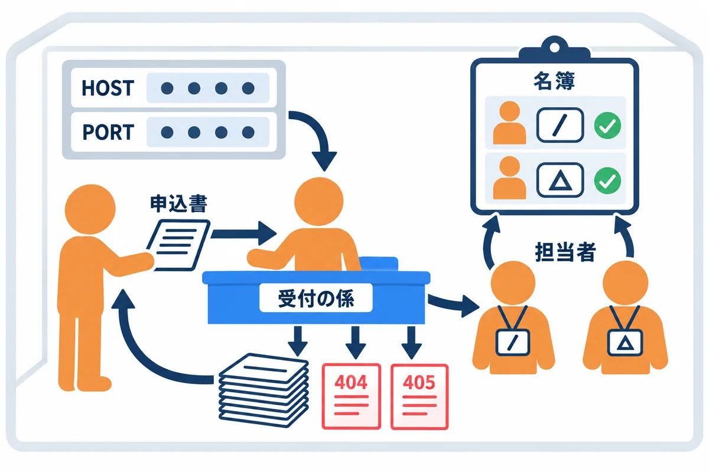
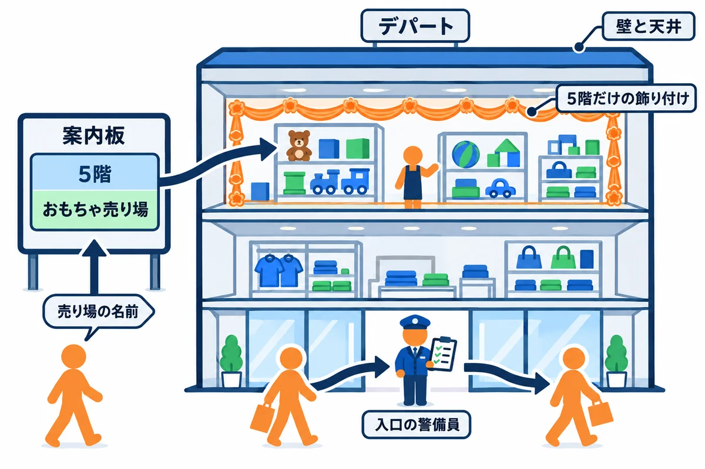
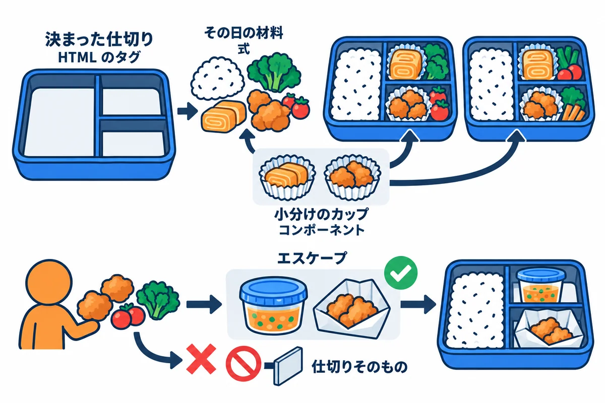
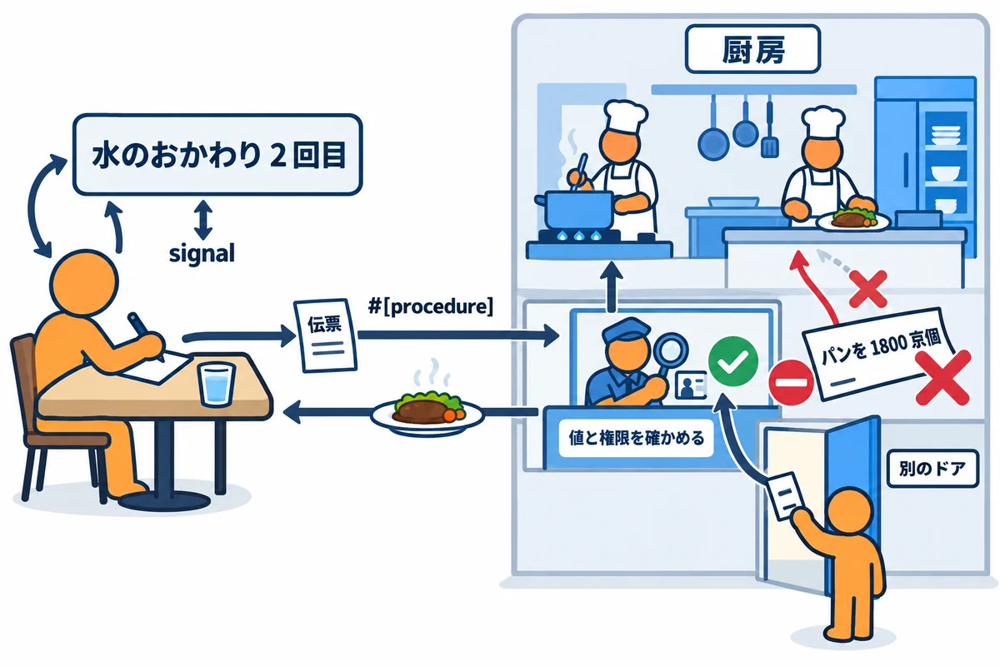
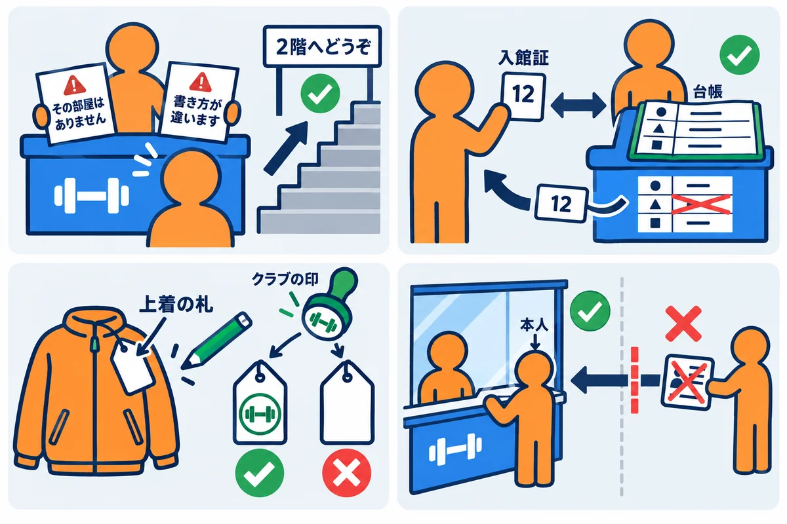

VOLUME 06 / RUST BACKEND MASTERY
Web 基礎と Topcoat 0.11 完全ガイド
HTTP の要求と応答から、Topcoat のページ・ルーター・view!・フォーム・アセット・セッションまでを、動かして確かめる
色の付いた枠のコードの、右上の「コピー」ボタンを押してください。コピーしたら、ブラウザーの「戻る」で PDF に戻れます。
第5巻までで、Rust の文法・所有権・設計・async を学びました。この巻では、それを使って Web のサーバーを作ります。ブラウザから届いた「この画面を見せて」という頼みに、Rust のプログラムが HTML を作って返す仕組みです。
Web のサーバーは、いきなり道具（フレームワーク）から始めると、何が起きているのかが見えにくくなります。次のような場面で、困ることがよくあります。
そこで、この巻の最初の単元では、道具を使わずに、標準ライブラリだけで小さなサーバーを書き、HTTP の要求と応答が「ただの文字のやり取り」であることを、自分の目で確かめます。そのうえで、UNIT 02 から、RustNote でも使っている Web フレームワーク Topcoat 0.11 の使い方を、1つずつ学びます。
この巻を終えると、次のことができるようになります。
curl.exe -i や -v の表示を読める#[page]）・ルーター・レイアウト・URL の部品の読み取り・view! とコンポーネントを使った画面を作れるapp_context）・アセット（CSS の束）・エラー・クッキー・セッション・ほかのサイトからの送信の守りを、Topcoat の仕組みで扱える| 単元 | テーマ | ひとことで言うと |
|---|---|---|
| UNIT 01 | HTTP の要求・応答・状態コード | 標準ライブラリだけのサーバーで、HTTP がただの文字だと確かめる |
| UNIT 02 | Topcoat 0.11 の最小のアプリ | ページを1つ作って起動する |
| UNIT 03 | ルーター・page・route・layout | URL ごとに処理を分け、共通の外枠で包む |
| UNIT 04 | URL の部品（path・query）と Cx | /notes/{id} や ?page=2 を型にして読む |
| UNIT 05 | view!・コンポーネント・HTML のエスケープ | 画面を部品に分け、入力を安全に表示する |
| UNIT 06 | フォーム・JSON・PRG | 送られてきた値を型にし、303 で移る |
| UNIT 07 | app_context・memoize | DB などを全部の処理で共有し、同じ問い合わせを1回にする |
| UNIT 08 | アセット・CSS・束 | asset! と topcoat asset bundle |
| UNIT 09 | runtime・signal・procedure・shard | ブラウザの中で動く部分と、その守り方 |
| UNIT 10 | エラー・クッキー・セッション・CSRF | 400・404・リダイレクトと、ログインの仕組みの土台 |
String と &str、match、Vec、for。特に、日本語の文字列の「文字数」と「バイト数」の違い（第2巻 UNIT 05）。UNIT 01 のエラー1で、この違いが原因の事故を見ます。Result と ?、標準ライブラリの入出力（std::io）。#[tokio::main] と async fn。各単元では、次の順番で進めてください。
curl.exe で要求を送ります。ヒント: この巻では、サーバーを動かす窓と、
curl.exeを打つ窓の2つの PowerShell を使います。サーバーを止めるときは、サーバーの窓で Ctrl+C を押します。止め忘れたまま、別のサーバーを同じポートで起動しようとすると、エラーになります。
この巻のコードは、すべて次の環境で実際にコンパイル・実行し、実行結果とエラーメッセージは実際の出力をそのまま載せています（パソコンのユーザー名などを含む部分は ... に置き換えています）。
| 項目 | 版・内容 |
|---|---|
| OS | Windows 11（ARM64）。コマンドは PowerShell を主に、WSL / macOS / Linux は補足で示します |
| Rust | 1.99 以上（本書シリーズの基準。Topcoat 0.11 が 1.99 以上を求めます）。動作確認は rustc 1.99.1 / cargo 1.99.1（aarch64-pc-windows-msvc） |
| edition | 2024 |
| curl | 8.21.0（Windows に入っている curl.exe。PowerShell では curl だけだと別のコマンドになるので、必ず curl.exe と打ちます） |
| topcoat | 0.11.0（2026-10-24 に出た版。UNIT 02 から使います。UNIT 01 では使いません） |
UNIT 01 では、外のクレートを1つも使いません。練習用のプロジェクトを1つ作り、src/bin/ に、単元ごとの小さなサーバーを足していきます。
cargo new http_lab
cd http_lab
# このフォルダでは Rust 1.99.1 を使う（第13巻 UNIT 01）
Set-Content rust-toolchain.toml "[toolchain]`nchannel = `"1.99.1`""
New-Item -ItemType Directory src\bin
▶ ここで初めて出てくるコード
New-Item -ItemType（PowerShell）:-ItemType Directoryで、ファイルではなくフォルダを作ります（Fileならファイル）。New-Item -ItemType Directory src\binは、srcの中にbinフォルダを作ります。
src/bin/u01_raw.rs のように置いたファイルは、cargo run --bin u01_raw で、それぞれ別のプログラムとして動かせます。
curl.exe -i と -v の表示を読める役所の窓口に、申請書を出す場面を考えます。
Web のブラウザとサーバーのやり取り（HTTP）も、同じ形をしています。
| 役所の窓口 | HTTP |
|---|---|
| 申請書のいちばん上（何を・どの書類について） | 要求行（メソッドとパス。GET /hello HTTP/1.1） |
| 申請書の添え書き | ヘッダー（Host:・User-Agent:・Content-Length: など） |
| 1行空けてから書く中身 | 本文（フォームの値など。GET には、ふつう無い） |
| 返事の紙の結果の番号 | 状態コード（200 OK・404 Not Found など） |
| 閲覧の窓口・登録の窓口 | GET（見るだけ）・POST（変える） |
| 「控えは閲覧の窓口で」 | 303 See Other（POST の後に、GET の画面へ移す。PRG） |
用語: HTTP（エイチティーティーピー。HyperText Transfer Protocol：ブラウザとサーバーが、要求と応答をやり取りするときの決まり）
用語: 要求（ようきゅう。request：ブラウザなどからサーバーへの頼み。リクエストとも言う）／応答（おうとう。response：サーバーからの返事。レスポンスとも言う）
用語: 状態コード（じょうたいコード。status code：応答の1行目にある3桁の数。結果の種類を表す。ステータスコードとも言う）
要求と応答は、どちらも「1行目・ヘッダー・空行・本文」の4つの部分でできています。
GET・POST など）・パス（/notes）・版」、応答は「版・状態コード（200）・その説明（OK）」です。Content-Length（本文のバイト数）で伝えます（エラー1）。状態コードは、最初の数字で、おおまかな種類が分かります。
▼ このコードがやること（先に日本語で）:
127.0.0.1:3000で接続を待ちます。接続が来たら、要求の1行目とヘッダーを空行まで1行ずつ読み、Content-Lengthがあれば、その長さだけ本文も読みます。読んだ要求をそのまま画面に表示し、「こんにちは、HTTP！」という文字を、HTTP の応答の形にして返します。外のクレートは使いません。
//! HTTP の要求と応答が「ただの文字」であることを確かめる、とても小さなサーバー。
//! 届いた要求をそのまま表示し、決まった文字を返す（標準ライブラリだけで書く）。
//! 実行: cargo run --bin u01_raw
use std::io::{BufRead, BufReader, Read, Write};
use std::net::{TcpListener, TcpStream};
/// 1つの接続を処理する: 要求を読んで表示し、応答を返す
fn handle(mut stream: TcpStream) -> std::io::Result<()> {
let mut reader = BufReader::new(&stream);
// 1行目（要求行）とヘッダーを、空行が来るまで1行ずつ読む
let mut head = Vec::new();
loop {
let mut line = String::new();
reader.read_line(&mut line)?;
let line = line.trim_end().to_string();
if line.is_empty() {
break;
}
head.push(line);
}
// Content-Length のヘッダーがあれば、その長さ（バイト数）だけ本文を読む
let mut length = 0;
for line in &head {
if let Some((name, value)) = line.split_once(':')
&& name.eq_ignore_ascii_case("content-length")
{
length = value.trim().parse().unwrap_or(0);
}
}
let mut body = vec![0; length];
reader.read_exact(&mut body)?;
println!("--- 届いた要求 ---");
for line in &head {
println!("{line}");
}
if !body.is_empty() {
println!("（空行）");
println!("{}", String::from_utf8_lossy(&body));
}
// 応答を「文字列」として組み立てて送り返す。Content-Length は本文のバイト数
let reply = "こんにちは、HTTP！\n";
let response = format!(
"HTTP/1.1 200 OK\r\nContent-Type: text/plain; charset=utf-8\r\nContent-Length: {}\r\n\r\n{}",
reply.len(),
reply
);
stream.write_all(response.as_bytes())?;
Ok(())
}
fn main() -> std::io::Result<()> {
let listener = TcpListener::bind("127.0.0.1:3000")?;
println!("http://127.0.0.1:3000 で待っています（Ctrl+C で終了）");
// 接続が来るたびに、1つずつ処理する
for stream in listener.incoming() {
handle(stream?)?;
}
Ok(())
}
▶ ここで初めて出てくるコード
.read_exact()（入出力）: 決めた数のバイトを、ちょうどその数だけ読むメソッド。途中で終わってしまったら、エラーになります。HTTP の本文を、Content-Lengthの長さだけ読む時に使います。
練習用のプロジェクトの src/bin/u01_raw.rs として保存し、1つ目の PowerShell の窓で起動します。
cargo run --bin u01_raw
2つ目の PowerShell の窓で、curl.exe を使って、GET の要求と POST の要求を1回ずつ送ります。-i は、応答の1行目とヘッダーも表示する指定、-d は、本文にフォームの値を入れて POST で送る指定です。
curl.exe -i "http://127.0.0.1:3000/hello?name=ada"
curl.exe -i -d "title=shopping&body=milk" http://127.0.0.1:3000/notes
▼ 実行結果（curl の窓）
HTTP/1.1 200 OK
Content-Type: text/plain; charset=utf-8
Content-Length: 26
こんにちは、HTTP！
HTTP/1.1 200 OK
Content-Type: text/plain; charset=utf-8
Content-Length: 26
こんにちは、HTTP！
▼ 実行結果（サーバーの窓。3つ目の要求は、問3の curl.exe -v で送ったものです）
http://127.0.0.1:3000 で待っています（Ctrl+C で終了）
--- 届いた要求 ---
GET /hello?name=ada HTTP/1.1
Host: 127.0.0.1:3000
User-Agent: curl/8.21.0
Accept: */*
--- 届いた要求 ---
POST /notes HTTP/1.1
Host: 127.0.0.1:3000
User-Agent: curl/8.21.0
Accept: */*
Content-Length: 24
Content-Type: application/x-www-form-urlencoded
（空行）
title=shopping&body=milk
--- 届いた要求 ---
GET /hello?name=ada HTTP/1.1
Host: 127.0.0.1:3000
User-Agent: curl/8.21.0
Accept: */*
注意: PowerShell 5.1 で、curl の窓の日本語が
縺薙ｓ縺ｫ縺｡縺ｯのように化けるときは、最初のcurl.exeの前に[Console]::OutputEncoding = [System.Text.Encoding]::UTF8を実行します。サーバーが返した UTF-8 の文字を、PowerShell が別の文字コードで読んでいるのが原因です。
GET /hello?name=ada HTTP/1.1 が要求行で、その下の Host:・User-Agent:・Accept: がヘッダーです。curl は、何も指定しなくても、この3つのヘッダーを付けて送ります。?name=ada の部分（クエリ）は、パスの一部として要求行に入っています。Content-Length: 24 と Content-Type: application/x-www-form-urlencoded（フォームの形の本文です）が加わり、空行の後ろに、本文の title=shopping&body=milk が届きました。24 は、この本文のバイト数です。HTTP/1.1 200 OK から こんにちは、HTTP！ までは、format! で作った文字列そのものです。行の終わりは \r\n（改行の前に「行の先頭へ戻る」を付けた2文字）で、HTTP の決まりです。/notes に POST しても、何も保存していません。「どのパスに、どう答えるか」を決めるのが、次の例1-2と、UNIT 02 から使うフレームワーク（Topcoat）の役目です。TcpListener::bind("127.0.0.1:3000") は、「この PC の 3000 番の窓口で、接続を待つ」という意味です。127.0.0.1 は「この PC 自身」を表す特別なアドレスで、ほかの PC からはつながりません。listener.incoming() は、接続が来るたびに1つずつ取り出します。このサーバーは、1つの接続を処理し終えるまで、次の接続を受け付けません。たくさんの人が同時に使うサーバーでは、async（第5巻）で同時にさばきます。Topcoat は、その部分を引き受けてくれます。▼ このコードがやること（先に日本語で）: 要求行を空白で区切って、メソッドとパスを取り出します。その組み合わせで、200（トップページ）・405（使えないメソッド）・403（見られないページ）・301（引っ越したページ）・303（伝言を受け取ったので、一覧を見てください）・404（無いページ）を返し分けます。
POST /messagesで受け取った伝言は、プログラムの中のVecに貯め、GET /messagesで一覧にします。
//! 要求のメソッドとパスを見て、いろいろな状態コードを返すサーバー（標準ライブラリだけで書く）。
//! 実行: cargo run --bin u01_status
use std::io::{BufRead, BufReader, Read, Write};
use std::net::{TcpListener, TcpStream};
/// 届いた要求（要求行・本文）
struct Request {
method: String,
path: String,
body: String,
}
/// 要求を読む: 1行目（要求行）・ヘッダー・本文
fn read_request(stream: &TcpStream) -> std::io::Result<Request> {
let mut reader = BufReader::new(stream);
let mut first = String::new();
reader.read_line(&mut first)?;
// 「GET /messages HTTP/1.1」を空白で区切る
let mut parts = first.split_whitespace();
let method = parts.next().unwrap_or("").to_string();
let path = parts.next().unwrap_or("").to_string();
let mut length = 0;
loop {
let mut line = String::new();
reader.read_line(&mut line)?;
let line = line.trim_end();
if line.is_empty() {
break;
}
if let Some((name, value)) = line.split_once(':')
&& name.eq_ignore_ascii_case("content-length")
{
length = value.trim().parse().unwrap_or(0);
}
}
let mut body = vec![0; length];
reader.read_exact(&mut body)?;
let body = String::from_utf8_lossy(&body).to_string();
Ok(Request { method, path, body })
}
/// 応答を組み立てて送る。HEAD のときは、ヘッダーだけを送る
fn respond(
stream: &mut TcpStream,
request: &Request,
status: &str,
headers: &[(&str, &str)],
body: &str,
) -> std::io::Result<()> {
let mut text = format!(
"HTTP/1.1 {status}\r\nContent-Type: text/plain; charset=utf-8\r\nContent-Length: {}\r\n",
body.len()
);
for (name, value) in headers {
text.push_str(&format!("{name}: {value}\r\n"));
}
text.push_str("\r\n");
if request.method != "HEAD" {
text.push_str(body);
}
stream.write_all(text.as_bytes())
}
fn main() -> std::io::Result<()> {
let listener = TcpListener::bind("127.0.0.1:3000")?;
println!("http://127.0.0.1:3000 で待っています（Ctrl+C で終了）");
// POST /messages で受け取った伝言を、ここに貯める
let mut messages: Vec<String> = Vec::new();
for stream in listener.incoming() {
let mut stream = stream?;
let request = read_request(&stream)?;
println!("{} {}", request.method, request.path);
match (request.method.as_str(), request.path.as_str()) {
// 見るだけの操作（GET と HEAD）
("GET" | "HEAD", "/") => {
respond(&mut stream, &request, "200 OK", &[], "トップページです\n")?
}
// / は GET と HEAD でしか使えない
(_, "/") => respond(
&mut stream,
&request,
"405 Method Not Allowed",
&[("Allow", "GET, HEAD")],
"その方法は使えません\n",
)?,
("GET", "/admin") => respond(
&mut stream,
&request,
"403 Forbidden",
&[],
"ここは見られません\n",
)?,
// 引っ越したページ: 新しい場所を Location で教える
("GET", "/old-page") => respond(
&mut stream,
&request,
"301 Moved Permanently",
&[("Location", "/")],
"",
)?,
// 伝言を受け取ったら、303 で「GET /messages を見てください」と返す
("POST", "/messages") => {
let text = request.body.split_once('=').map(|(_, value)| value);
messages.push(text.unwrap_or("").to_string());
respond(
&mut stream,
&request,
"303 See Other",
&[("Location", "/messages")],
"",
)?
}
("GET", "/messages") => {
let list = format!("伝言は {} 件: {:?}\n", messages.len(), messages);
respond(&mut stream, &request, "200 OK", &[], &list)?
}
_ => respond(
&mut stream,
&request,
"404 Not Found",
&[],
"ページが見つかりません\n",
)?,
}
}
Ok(())
}
src/bin/u01_status.rs として保存し、例1-1のサーバーを Ctrl+C で止めてから起動します。2つ目の窓から、いろいろな要求を送ります。-X DELETE はメソッドを DELETE にする指定、-I は HEAD（ヘッダーだけをください）で送る指定、-L は 3xx の応答が来たら Location の場所へ自動でたどる指定です。
cargo run --bin u01_status
▼ 実行結果（curl の窓。### の行は、送ったコマンドです）
### curl.exe -i http://127.0.0.1:3000/
HTTP/1.1 200 OK
Content-Type: text/plain; charset=utf-8
Content-Length: 25
トップページです
### curl.exe -i http://127.0.0.1:3000/nothing
HTTP/1.1 404 Not Found
Content-Type: text/plain; charset=utf-8
Content-Length: 34
ページが見つかりません
### curl.exe -i http://127.0.0.1:3000/admin
HTTP/1.1 403 Forbidden
Content-Type: text/plain; charset=utf-8
Content-Length: 28
ここは見られません
### curl.exe -i http://127.0.0.1:3000/old-page
HTTP/1.1 301 Moved Permanently
Content-Type: text/plain; charset=utf-8
Content-Length: 0
Location: /
### curl.exe -i -X DELETE http://127.0.0.1:3000/
HTTP/1.1 405 Method Not Allowed
Content-Type: text/plain; charset=utf-8
Content-Length: 31
Allow: GET, HEAD
その方法は使えません
### curl.exe -I http://127.0.0.1:3000/
HTTP/1.1 200 OK
Content-Type: text/plain; charset=utf-8
Content-Length: 25
### curl.exe -i -d message=hello http://127.0.0.1:3000/messages
HTTP/1.1 303 See Other
Content-Type: text/plain; charset=utf-8
Content-Length: 0
Location: /messages
### curl.exe -i -L -d message=world http://127.0.0.1:3000/messages
HTTP/1.1 303 See Other
Content-Type: text/plain; charset=utf-8
Content-Length: 0
Location: /messages
HTTP/1.1 200 OK
Content-Type: text/plain; charset=utf-8
Content-Length: 36
伝言は 2 件: ["hello", "world"]
▼ 実行結果（サーバーの窓）
http://127.0.0.1:3000 で待っています（Ctrl+C で終了）
GET /
GET /nothing
GET /admin
GET /old-page
DELETE /
HEAD /
POST /messages
POST /messages
GET /messages
/nothing は、そもそも無いページなので 404 Not Found です。/admin は、ページはあるが見せられないので 403 Forbidden です。DELETE / は、ページはあるが、そのメソッドでは使えないので 405 Method Not Allowed です。405 のときは、Allow: GET, HEAD のヘッダーで「使えるメソッドはこれです」と教えるのが HTTP の決まりです。/old-page は 301 Moved Permanently と Location: / を返しました。「このページは、ずっと / に引っ越しました」という意味です。ブラウザや検索エンジンは、次からは新しい場所を使います。POST /messages は 303 See Other と Location: /messages を返しました。「受け取りました。結果は GET /messages で見てください」という意味です。-L を付けた最後のコマンドでは、curl が Location をたどって、自動で GET /messages を送り、伝言は 2 件: ["hello", "world"] を受け取りました。サーバーの窓にも、POST /messages の後に GET /messages が届いています。POST /messages が、303 ではなく 200 で一覧を返していたら、ブラウザの画面は「POST の結果」のままです。利用者が再読み込み（F5）を押すと、ブラウザは同じ POST をもう一度送り、伝言が二重に保存されます。GET /messages（見るだけ）なので、何も増えません。この「POST → Redirect（303）→ GET」の形を、頭文字をとって PRG と呼びます。RustNote のフォームも、すべてこの形です（第9巻 UNIT 02）。curl.exe -I（HEAD）には、200 OK と Content-Length: 25 だけが返り、本文はありませんでした。respond の中の if request.method != "HEAD" で、本文を付けないようにしているからです。HEAD は「本文の大きさや種類だけを、先に知りたい」ときに使います。例1-1の reply.len()（バイト数）を、reply.chars().count()（文字数）にしてしまった場合です（src/bin/u01_len_bug.rs）。
//! エラー1の例: Content-Length に、バイト数ではなく文字数を入れてしまったサーバー。
//! 実行: cargo run --bin u01_len_bug
use std::io::{BufRead, BufReader, Write};
use std::net::TcpListener;
fn main() -> std::io::Result<()> {
let listener = TcpListener::bind("127.0.0.1:3000")?;
println!("http://127.0.0.1:3000 で待っています（Ctrl+C で終了）");
for stream in listener.incoming() {
let mut stream = stream?;
// 要求の1行目とヘッダーを、空行まで読み飛ばす
let mut reader = BufReader::new(&stream);
loop {
let mut line = String::new();
reader.read_line(&mut line)?;
if line.trim_end().is_empty() {
break;
}
}
let reply = "こんにちは、HTTP！\n";
// 間違い: chars().count() は「文字数」。Content-Length に入れるのは「バイト数」
let response = format!(
"HTTP/1.1 200 OK\r\nContent-Type: text/plain; charset=utf-8\r\nContent-Length: {}\r\n\r\n{}",
reply.chars().count(),
reply
);
stream.write_all(response.as_bytes())?;
}
Ok(())
}
cargo run --bin u01_len_bug
別の窓から:
curl.exe -i http://127.0.0.1:3000/
HTTP/1.1 200 OK
Content-Type: text/plain; charset=utf-8
Content-Length: 12
こんにち
Content-Length: 12 は、こんにちは、HTTP！\n の文字数（12 文字）です。ところが、日本語の1文字は UTF-8 で3バイトなので、本当の本文は 26 バイトあります。curl は、Content-Length を信じて 12 バイトだけを本文として読み、残りを捨てました。12 バイトは、日本語4文字ぶん（こ・ん・に・ち）です。Content-Length には reply.len()（String の len() はバイト数）を入れます。UNIT 02 から使う Topcoat は、この長さを自動で正しく計算してくれます。サーバーを止めたまま、curl.exe で要求を送った場合です。
curl.exe -i http://127.0.0.1:3000/
curl: (7) Failed to connect to 127.0.0.1:3000 after 2029 ms: Could not connect to server
(7) は curl のエラーの番号で、「接続できなかった」を表します。HTTP の状態コード（404 など）は出ていません。状態コードは、サーバーが応答を返したときにだけ届くものだからです。http://127.0.0.1:3000 で待っています が表示されているか、ポートの番号が同じかを確かめます。サーバーが起動の途中でエラーになって止まっていることもあります。(7) は「サーバーにたどり着けない」です。どちらの段階で失敗しているかを、最初に見分けます。例1-1のサーバーを止めずに、別の窓から例1-2のサーバーを起動すると、TcpListener::bind が失敗します。Windows では os error 10048（そのアドレスとポートは、もう使われています）、Linux では os error 98 のエラーになります。先に動いているサーバーを Ctrl+C で止めてから、起動し直します（RustNote で同じエラーを見た例は、第12巻 UNIT 01 のエラー2にあります）。
RustNote は、例1-2のような「メソッドとパスで返事を分ける」処理を、Topcoat に任せています。RustNote の src/routes.rs の先頭のコメントには、ファイルと URL の対応の表があります（抜き出しています）。
//! | ファイル | URL |
//! |---|---|
//! | routes.rs | GET /（トップ）、全ページ共通のレイアウト、404 の受け皿 |
//! | routes/health.rs | GET /health |
//! | routes/signup.rs | GET /signup・POST /signup |
//! | routes/login.rs | GET /login・POST /login |
//! | routes/logout.rs | POST /logout |
//! | routes/notes.rs | GET /notes（?q= 検索・?page= ページ送り）・POST /notes |
match (method, path) の1行ずつが、RustNote では1つの関数（#[page] や #[page(POST)] を付けたもの）になります。無いページの 404、使えないメソッドの 405 は、Topcoat が自動で返します。POST /notes）は、303 で、作ったノートの詳細（GET /notes/{id}）へ移ります。RustNote が返す状態コードの決まりは、src/error.rs の先頭のコメントにまとめてあります（抜き出しています）。
//! | AppError | ステータス | 起きる場面 |
//! |---|---|---|
//! | `InvalidTitle` など入力の検証エラー | 400 | 空のタイトル、形式の違うメール |
//! | `Unauthorized` | 401 | ログインしていない（通常はログイン画面へのリダイレクトで扱う） |
//! | `NotFound` | 404 | 存在しないノート、**他人のノート**（あること自体を隠す） |
//! | `EmailTaken` / `Conflict` | 409 | 登録済みのメール、ほかの画面で先に更新された |
//! | `Internal` | 500 | DB の故障など。画面には詳細を出さず、ログに原因を書く |
問1: 例1-2のサーバーに、GET /health を足してください。200 OK で、本文は {"status":"ok"}、Content-Type は application/json（JSON の形の本文です）にします。足したら、GET /health と POST /health を送って、それぞれの応答を確かめてください。POST /health の応答は、HTTP の決まりとして正しいでしょうか。
問2: 「伝言を GET /messages?add=hello で足せる」ように作ったとします。この作りには、どんな困ったことが起きるでしょうか。解説3の内容をもとに、2つ挙げてください。
問3: 例1-1で取った curl.exe -v の表示（下）の中から、curl が送った要求の部分と、サーバーが返した応答の部分を見分けてください。それぞれ、どの記号で始まっていますか。また、* で始まる行は何を表しているでしょうか。
* Trying 127.0.0.1:3000...
* Established connection to 127.0.0.1 (127.0.0.1 port 3000) from 127.0.0.1 port 55388
* using HTTP/1.x
> GET /hello?name=ada HTTP/1.1
> Host: 127.0.0.1:3000
> User-Agent: curl/8.21.0
> Accept: */*
>
* Request completely sent off
< HTTP/1.1 200 OK
< Content-Type: text/plain; charset=utf-8
< Content-Length: 26
<
{ [26 bytes data]
* Connection #0 to host 127.0.0.1:3000 left intact
問1の解答:
match の、// 見るだけの操作（GET と HEAD） の行の前に、次の腕を足します（足したものを src/bin/u01_q1.rs として保存しました）。respond は Content-Type を text/plain に決めているので、この腕では、応答の文字を自分で組み立てます。
// 問1: 動いているかを外から確かめる URL。JSON で返すので Content-Type も変える
("GET", "/health") => {
let body = r#"{"status":"ok"}"#;
let text = format!(
"HTTP/1.1 200 OK\r\nContent-Type: application/json\r\nContent-Length: {}\r\n\r\n{body}",
body.len()
);
stream.write_all(text.as_bytes())?
}
cargo run --bin u01_q1
### curl.exe -i http://127.0.0.1:3000/health
HTTP/1.1 200 OK
Content-Type: application/json
Content-Length: 15
{"status":"ok"}
### curl.exe -i -X POST http://127.0.0.1:3000/health
HTTP/1.1 404 Not Found
Content-Type: text/plain; charset=utf-8
Content-Length: 34
ページが見つかりません
GET /health には、Content-Type: application/json と {"status":"ok"} が返りました。Content-Length: 15 は、{"status":"ok"} のバイト数です。r#"..."# は、中に " を含む文字列を、\" と書かずにそのまま書ける Rust の書き方（生の文字列リテラル）です。POST /health には 404 が返りました。match のどの腕にも当たらず、最後の _ に落ちたからです。HTTP の決まりとしては、/health というページはあるので、405 Method Not Allowed と Allow: GET を返すのが正確です。例1-2の / と同じように、(_, "/health") の腕を足せば直せます。こうした決まりを、ページごとに自分で書き続けるのは大変です。Topcoat は、ページに付けたメソッドから、405 と Allow を自動で返してくれます（第9巻 UNIT 02 で、RustNote の 405 を確かめました）。GET /health も、同じ {"status":"ok"} を返します。公開したあと、外から「動いているか」を確かめるのに使います（第12巻 UNIT 01）。問2の解答:
GET /messages?add=hello の画面で再読み込みを押すと、ブラウザは同じ GET をもう一度送るので、伝言がもう1件増えます。GET は「何回送っても変わらない」ことが前提なので、ブラウザは確かめずに送り直します。<a href="..">）や画像（<img src="..">）でも送られます。ほかのサイトに <img src="http://127.0.0.1:3000/messages?add=spam"> と書かれていたら、そのページを開いただけで、利用者のブラウザが伝言を足してしまいます。ブラウザが「先読み」（リンクの先を前もって読み込むこと）で送ることもあります。問3の解答:
> で始まる行が、curl が送った要求です（> GET /hello?name=ada HTTP/1.1 から、空の > の行まで）。< で始まる行が、サーバーが返した応答の1行目とヘッダーです（< HTTP/1.1 200 OK から、空の < の行まで）。矢印の向き（> は外へ、< は内へ）と覚えます。* で始まる行は、curl が自分の動きを説明しているメモです。Trying 127.0.0.1:3000...（つなごうとしています）、Established connection（つながりました）、Request completely sent off（要求を送り終えました）、Connection #0 to host 127.0.0.1:3000 left intact（接続は閉じずに残しました）のように、HTTP の文字ではなく、その外側で起きたことを表します。{ [26 bytes data] は、本文を 26 バイト受け取ったという印です。-v と一緒に -o NUL（本文は捨てる）を付けたので、本文そのものは表示されていません。Content-Length にバイト数で書く。Location で行き先を教える）・4xx（頼み方が違う。404・403・405 は直し方が違う）・5xx（サーバーの失敗）。curl の (7) は、そもそもサーバーにたどり着けていない。cargo add で Topcoat 0.11.0 と Tokio を足し、ページが1つだけの Web アプリを作って起動できる#[page("/")]・Router::builder().discover().build()・topcoat::start の3つが、それぞれ何をしているかを説明できるContent-Length・404・405・HEAD）を、Topcoat が代わりにしてくれることを、curl.exe の表示で確かめられるHOST と PORT の環境変数で待ち受ける場所を変え、.await の書き忘れ・use の書き忘れ・ポートの指定の間違いのエラーを読める
UNIT 01 では、お店の窓口を1人で切り盛りしました。お客さんの申込書を1行ずつ読み、「その窓口ではできません」「その書類はありません」を自分で書き、返事の紙の枚数（Content-Length）まで自分で数えました。
UNIT 02 では、受付の係を雇います。
/ に見に来た人には、この人が答えます」と書いた名札を、担当者に付けておきます。HOST と PORT）は、開店の前に掲示板（環境変数）に書いておけば、係がそれを読みます。| お店 | Topcoat のアプリ |
|---|---|
| 受付の係 | Topcoat（ルーターと、待ち受けの仕組み） |
| 担当者に付ける名札 | #[page("/")]（この関数は GET / に答える、という印） |
| 名札の付いた担当者を集めて名簿を作る | Router::builder().discover().build() |
| 開店して、窓口を開ける | topcoat::start(router).await |
| 掲示板に書いた住所と窓口の番号 | 環境変数 HOST と PORT（無ければ 127.0.0.1 と 3000） |
| 決まった形の断り方 | 無い URL は 404、使えないメソッドは 405 と allow |
用語: Web フレームワーク（ウェブフレームワーク：要求を読み、URL ごとの処理に振り分け、応答を返す、といった決まった仕事を引き受けてくれる道具。Topcoat もその1つ）
用語: ルーター（router：要求の URL とメソッドを見て、どの関数に処理させるかを決める仕組み）
最小のアプリの部品と、要求が届いてから応答を返すまでの流れです。
#[page("/")] を付けた関数 home と、main の2行だけです。discover() は、プログラムの中の #[page] を付けた関数を、全部自動で集めます。ページを増やすときは、#[page("/about")] を付けた関数を足すだけで、main を書き換える必要はありません（問1）。allow、HEAD のときに本文を付けないこと、Content-Length の計算は、どれも Topcoat がします。UNIT 01 で自分で書いた処理です。▼ このコマンドがやること（先に日本語で）: 新しいプロジェクトを作り、Rust の版を 1.99.1 に固定してから、
cargo addで Topcoat（版を 0.11.0 に固定）と Tokio（非同期のランタイム）を足します。
cargo new web_lab
cd web_lab
Set-Content rust-toolchain.toml "[toolchain]`nchannel = `"1.99.1`""
cargo add topcoat@=0.11.0
cargo add tokio@=1.54.1 --features rt-multi-thread,macros
▼ 実行結果（cargo add topcoat@=0.11.0 の表示）
Updating crates.io index
Adding topcoat =0.11.0 to dependencies
Features:
+ asset
+ compression
+ cookie
+ discover
+ font
+ icon
+ router
+ runtime
+ serve
+ session
+ view
22 deactivated features
Updating crates.io index
Locking 220 packages to highest Rust 1.99.1 compatible versions
Adding generic-array v0.14.7 (available: v0.14.9)
+ の付いた features（asset・router・view など）が、既定で有効になる機能です。そのほかの機能（tailwind・websocket・l10n など）は既定では無効で、数が多いので、22 deactivated features（無効の機能が 22 個）とだけ表示されます。一覧は cargo info -v topcoat@0.11.0 で見られます。必要なときに、自分で足します。Locking 220 packages to highest Rust 1.99.1 compatible versions は、「Rust 1.99.1 で使える範囲で、いちばん新しい版を選んで、220 個のクレートの版を Cargo.lock に書きました」という意味です。Adding generic-array v0.14.7 (available: v0.14.9) は、「もっと新しい 0.14.9 もありますが、0.14.7 にしました」というお知らせです。間接的に使う crypto-common が =0.14.7 と版を固定しているからで、気にしなくて大丈夫です。@=0.11.0 の = を付けているので、Topcoat に新しい版が出ても、勝手には上がりません（第13巻 UNIT 01）。Topcoat は、版が上がると書き方が変わることがあるので、版を上げるときは、自分で決めて、まとめて直します。この本も、0.10.0 から 0.11.0 に上げたときに、すべての巻のコードを動かし直しました。できあがった Cargo.toml です（この単元の最後に、もう1つの機能を足したあとの形です。例2-3で説明します）。
[package]
name = "web_lab"
version = "0.1.0"
edition = "2024"
[dependencies]
tokio = { version = "=1.54.1", features = ["rt-multi-thread", "macros", "net"] }
topcoat = "=0.11.0"
▼ このコードがやること（先に日本語で）:
GET /に答える関数homeに#[page("/")]の名札を付け、view!で HTML を作って返します。mainでは、名札の付いた関数をdiscover()で集めてルーターを作り、topcoat::startに渡して、待ち受けを始めます。
▶ 書く所と動かし方: 練習用のプロジェクト web_labの src\bin フォルダに、web_lab.rs という名前の新しいファイルを作り、下のコードを貼り付けて保存します。web_lab のフォルダで cargo run --bin web_lab を実行します。
//! Topcoat 0.11 の、いちばん小さな Web アプリ。GET / に HTML を返す。
//! 実行: cargo run
use topcoat::{
Result,
router::{Router, RouterBuilderDiscoverExt, page},
view::{View, view},
};
// URL「/」に GET が来たら、この関数が HTML を作って返す
#[page("/")]
async fn home() -> Result<impl View> {
Ok(view! {
<!DOCTYPE html>
<html lang="ja">
<head>
<meta charset="utf-8">
<title>"はじめての Topcoat"</title>
</head>
<body>
<h1>"こんにちは、Topcoat！"</h1>
<p>"この HTML は Rust のプログラムが作りました。"</p>
</body>
</html>
})
}
#[tokio::main]
async fn main() {
// #[page] の付いた関数を、プログラム全体から集めて、ルーターを作る
let router = Router::builder().discover().build();
// 環境変数 HOST と PORT の場所（無ければ 127.0.0.1:3000）で待ち受ける
topcoat::start(router)
.await
.expect("サーバーを起動できませんでした");
}
▶ ここで初めて出てくるコード
.discover()（Topcoat）:Router::builder().discover()で、#[page]などの付いた関数を全部自動で集めて、ルーターに登録するメソッド（第6巻 UNIT 02）。Router::builder()（Topcoat）: Topcoat のルーター（URL ごとの名簿）を組み立て始める関数。Router::builder().discover().build()は、#[page]を付けた関数を全部自動で集めて（discover）、ルーターを作ります（第6巻 UNIT 02）。RouterBuilderDiscoverExt（Topcoat）:.discover()（#[page]の付いた関数を自動で集める）を使えるようにする機能（トレイト）。useしておく必要があります。
cargo run --bin web_lab
最初の1回は、Topcoat が使うクレートをコンパイルするので、少し時間がかかります（この PC では、Compiling の行が 164 行出て、約 22 秒でした）。
Compiling web_lab v0.1.0 (...\web_lab)
Finished `dev` profile [unoptimized + debuginfo] target(s) in 21.90s
サーバーの窓には、何も表示されません。 topcoat::start は、起動しても何も表示しないからです。止まっているように見えますが、待ち受けています。2つ目の窓から、curl.exe で確かめます。
curl.exe -i http://127.0.0.1:3000/
▼ 実行結果
HTTP/1.1 200 OK
content-type: text/html; charset=utf-8
vary: Accept
vary: accept-encoding
content-length: 228
date: Fri, 30 Oct 2026 11:31:05 GMT
<!DOCTYPE html><html lang="ja"><head><meta charset="utf-8"><title>はじめての Topcoat</title></head><body><h1>こんにちは、Topcoat！</h1><p>この HTML は Rust のプログラムが作りました。</p></body></html>
#[page("/")] は、「この関数は GET / に答える」という印です。#[page] は、ふつうの関数を、ページの処理に変える属性マクロです。何も指定しなければ GET に答え、HEAD にも自動で答えます。home）は、URL には関係ありません。URL を決めるのは、#[page(...)] の中の文字列です。Result<impl View> は、「HTML になる何か（View）を返す。失敗することもある」という意味です。view! の中には、HTML をほぼそのまま書けます。文字は "..." で囲みます（UNIT 05）。Router::builder().discover().build() は、プログラムの中にある #[page] の関数を全部集めて、URL の名簿（ルーター）を作ります。discover は、RouterBuilderDiscoverExt という trait のメソッドです。だから、use topcoat::router::RouterBuilderDiscoverExt が要ります（エラー2）。content-type: text/html; charset=utf-8（HTML です。文字は UTF-8 です）・content-length: 228・date（応答を作った時刻、UTC）のほかに、vary が2行付いています（問3）。UNIT 01 では、Content-Length を自分で数えて、日本語で間違えました。Topcoat は、本文のバイト数を正しく数えてくれます。content-type）になっています。HTTP のヘッダーの名前は、大文字と小文字を区別しない決まりなので、Content-Type と同じ意味です。view! に書いたとおりの1行になっています。字下げや改行は、view! が取り除いて、短くしています。UNIT 01 の例1-2で、自分で書いた返事を、Topcoat が返すか確かめます。
curl.exe -i http://127.0.0.1:3000/nothing
curl.exe -i -X POST http://127.0.0.1:3000/
curl.exe -I http://127.0.0.1:3000/
▼ 実行結果
### curl.exe -i http://127.0.0.1:3000/nothing
HTTP/1.1 404 Not Found
content-type: text/plain; charset=utf-8
content-length: 9
date: Fri, 30 Oct 2026 11:31:05 GMT
not found
### curl.exe -i -X POST http://127.0.0.1:3000/
HTTP/1.1 405 Method Not Allowed
allow: GET, HEAD
content-length: 0
date: Fri, 30 Oct 2026 11:31:05 GMT
### curl.exe -I http://127.0.0.1:3000/
HTTP/1.1 200 OK
content-type: text/html; charset=utf-8
vary: Accept
vary: accept-encoding
content-length: 228
date: Fri, 30 Oct 2026 11:31:05 GMT
/nothing）は 404 Not Found で、本文は not found だけです。ページに名札を付けていない URL は、Topcoat が自動で 404 にします。自分の画面（ヘッダーやトップへのリンクの付いたもの）で 404 を出したいときは、not_found!() とレイアウトを使います（UNIT 03・10）。POST / は 405 Method Not Allowed と allow: GET, HEAD です。#[page] は GET（と HEAD）だけに答えるので、Topcoat が「使えるのは GET と HEAD です」と教えてくれました。UNIT 01 の問1で「本当は 405 と Allow を返すべき」と書いたことを、Topcoat は何も書かなくてもしてくれます。HEAD /（-I）は、GET と同じヘッダー（content-length: 228 も同じ）で、本文はありません。topcoat::start は、何も表示しません。「起動しました」と表示したくて、start の前に println! を書くと、困ったことが起きます。ポートを押さえる前に表示するので、ほかのプログラムがポートを使っていて起動に失敗したときも、「起動しました」と出てしまうのです（第12巻 UNIT 01 のエラー2で、RustNote が実際にそうなっているのを見ました）。
そこで、待ち受けの場所を自分で先に押さえてから表示し、押さえた場所を Topcoat に渡す書き方をします。topcoat::start の中身（Topcoat 0.11.0 の serve.rs）も、TcpListener::bind で押さえてから serve を呼ぶ形になっています。
▼ このコードがやること（先に日本語で）: Tokio の
TcpListener::bindで127.0.0.1:3000を押さえます。押さえられなかったら、そこでエラーとして終わります。押さえられたときだけ、「待っています」と表示してから、topcoat::serveに、押さえた場所とルーターを渡します。
▶ 書く所と動かし方: 練習用のプロジェクト web_labの src\bin フォルダに、u02_serve.rs という名前の新しいファイルを作り、下のコードを貼り付けて保存します。web_lab のフォルダで cargo run --bin u02_serve を実行します。
//! 先に待ち受けの場所（127.0.0.1:3000）を押さえてから、「待っています」と表示する版。
//! 実行: cargo run --bin u02_serve
use tokio::net::TcpListener;
use topcoat::{
Result,
router::{Router, RouterBuilderDiscoverExt, page},
view::{View, view},
};
#[page("/")]
async fn home() -> Result<impl View> {
Ok(view! {
<h1>"u02_serve で動いています"</h1>
})
}
#[tokio::main]
async fn main() -> std::io::Result<()> {
let router = Router::builder().discover().build();
// 先にアドレスとポートを押さえる。ほかのプログラムが使っていたら、ここでエラーになって止まる
let listener = TcpListener::bind("127.0.0.1:3000").await?;
// 押さえられたときだけ、ここまで来る
println!(
"http://{} で待っています（Ctrl+C で止めます）",
listener.local_addr()?
);
topcoat::serve(listener, router).await
}
このプログラムは tokio::net::TcpListener を使うので、Tokio の net の機能を、自分の Cargo.toml に足します。Topcoat がすでに net を有効にしているので、足さなくてもビルドは通りますが、自分が使う機能は自分の Cargo.toml に書くのが決まりです（第13巻 UNIT 01）。
cargo add tokio@=1.54.1 --features rt-multi-thread,macros,net
src/bin/u02_serve.rs として保存し、1つ目の窓で起動します。続けて、2つ目の窓で、同じものをもう1つ起動します。
cargo run --bin u02_serve
▼ 実行結果（1つ目）
http://127.0.0.1:3000 で待っています（Ctrl+C で止めます）
▼ 実行結果（2つ目。ポートがもう使われている）
Error: Os { code: 10048, kind: AddrInUse, message: "通常、各ソケット アドレスに対してプロトコル、ネットワーク アドレス、またはポートのどれか 1 つのみを使用できます。" }
TcpListener::bind で失敗したので、「待っています」を表示せずに、エラーで終わりました。表示と、本当の状態が食い違いません。Error: Os { code: 10048, kind: AddrInUse, ... } は、main が返した Err を、Rust が {:?} の形で表示したものです。AddrInUse は「アドレスはもう使われています」という意味です（UNIT 01 のエラー3と同じ原因です）。local_addr() は、実際に押さえた場所を返します。ポートに 0 を指定すると、空いている番号を OS が選んでくれるので、そのときに「何番になったか」を知るのにも使えます。topcoat::start(router) の次の行の .await を消してしまった場合です。
topcoat::start(router)
.expect("サーバーを起動できませんでした");
cargo build
Compiling web_lab v0.1.0 (...\web_lab)
error[E0599]: no method named `expect` found for opaque type `impl Future<Output = Result<(), std::io::Error>>` in the current scope
--> src\main.rs:34:10
|
33 | / topcoat::start(router)
34 | | .expect("サーバーを起動できませんでした");
| | -^^^^^^ method not found in `impl Future<Output = Result<(), std::io::Error>>`
| |_________|
|
|
help: consider `await`ing on the `Future` and calling the method on its `Output`
|
34 | .await.expect("サーバーを起動できませんでした");
| ++++++
For more information about this error, try `rustc --explain E0599`.
error: could not compile `web_lab` (bin "web_lab") due to 1 previous error
impl Future<Output = Result<(), std::io::Error>> に、expect というメソッドはありません」というエラーです。topcoat::start は async の関数なので、呼んだだけでは、まだ動いていない「これから動く仕事」（Future）が返るだけです。expect は Result のメソッドなので、Future には使えません（第5巻 UNIT 01）。help: のとおり、.await を付けます。.await で仕事を最後まで動かすと、Result が手に入り、expect が使えます。use topcoat::router::{Router, RouterBuilderDiscoverExt, page} から、RouterBuilderDiscoverExt を消してしまった場合です。
cargo build
Compiling web_lab v0.1.0 (...\web_lab)
error[E0599]: no method named `discover` found for struct `RouterBuilder` in the current scope
--> src\main.rs:31:36
|
31 | let router = Router::builder().discover().build();
| ^^^^^^^^
|
::: ...\router.rs:14:8
|
14 | fn discover(self) -> Self;
| -------- the method is available for `RouterBuilder` here
|
= help: items from traits can only be used if the trait is in scope
help: trait `RouterBuilderDiscoverExt` which provides `discover` is implemented but not in scope; perhaps you want to import it
|
4 + use topcoat::router::RouterBuilderDiscoverExt;
|
help: there is a method `discover_fonts` with a similar name
|
31 | let router = Router::builder().discover_fonts().build();
| ++++++
For more information about this error, try `rustc --explain E0599`.
error: could not compile `web_lab` (bin "web_lab") due to 1 previous error
RouterBuilder に、discover というメソッドが見つかりません」というエラーです。discover は、RouterBuilder 自身のメソッドではなく、RouterBuilderDiscoverExt という trait が足しているメソッドです。trait のメソッドは、その trait を use しているときだけ使えます（help: items from traits can only be used if the trait is in scope）。help: のとおり、use topcoat::router::RouterBuilderDiscoverExt; を足します。3つ目の help: の discover_fonts（名前が似ているメソッド）は、別の機能なので、案内に従わないでください。PowerShell で $env:PORT = "abc" としてから起動した場合です。
$env:PORT = "abc"
cargo run --bin web_lab
thread 'main' (202724) panicked at src\main.rs:35:10:
サーバーを起動できませんでした: Custom { kind: InvalidInput, error: "PORT must be a valid port number: invalid digit found in string" }
note: run with `RUST_BACKTRACE=1` environment variable to display a backtrace
topcoat::start が、環境変数 PORT を数として読めずに、InvalidInput（入力の値が不正）のエラーを返しました。PORT must be a valid port number: invalid digit found in string は「PORT は正しいポートの番号でなければなりません。文字列に数字ではない文字があります」です。main の .expect(...) が、このエラーを受けて panic しました。Remove-Item Env:PORT で環境変数を消す（既定の 3000 に戻る）か、$env:PORT = "3001" のように正しい番号を入れます。PowerShell で入れた環境変数は、その窓を閉じるまで残るので、ほかのプログラムにも影響することがあります。src/bin/u02_serve.rs を足したあとに、--bin を付けずに cargo run とした場合です。
cargo run
error: `cargo run` could not determine which binary to run. Use the `--bin` option to specify a binary, or the `default-run` manifest key.
available binaries: u02_serve, web_lab
cargo run は、どの実行ファイルを動かせばよいか決められません。--bin で指定するか、default-run を書いてください」というエラーです。src/main.rs（web_lab）と src/bin/u02_serve.rs（u02_serve）の2つの実行ファイルがあるからです。cargo run --bin web_lab のように指定します。いつも同じものを動かすなら、Cargo.toml の [package] に default-run = "web_lab" と書きます。RustNote の Cargo.toml に default-run = "rustnote" があるのは、このためです（第13巻 UNIT 01）。RustNote の src/main.rs の最後の部分です（抜き出しています）。
let router = routes::build_router(AppState::new(db), assets);
eprintln!(
"RustNote を起動しました: http://{}",
config::listen_address()
);
topcoat::start(router)
.await
.context("サーバーを起動できませんでした（HOST / PORT を確認してください）")?;
▶ ここで初めて出てくるコード
routes::build_router()（RustNote で作る物）: RustNote の画面（ページ）を全部登録したルーターを組み立てる関数。第6巻の後の方と第10巻で作ります。config::listen_address()（RustNote で作る物）: RustNote の、待ち受ける場所（127.0.0.1:3000など）を、環境変数から決める関数。全体のコードは第13巻に載っています。
topcoat::start(router).await で待ち受けています。HOST と PORT を読むのも同じです。公開するとき（Fly.io）は HOST=0.0.0.0・PORT=8080 にします（第12巻）。eprintln! で「起動しました」を、start の前に表示しています。ポートが使われていると、この表示のあとにエラーで止まります。例2-3の形（TcpListener::bind で押さえてから表示し、topcoat::serve に渡す）にすれば直せます（RustNote のコードは変えていません）。discover() ではなく、module_router!() で作っています（src/routes.rs の build_router）。ファイルの並びをそのまま URL の並びにする書き方で、UNIT 03 で扱います。問1: 例2-2のアプリに、2つ目のページ GET /about を足してください。トップページから /about へのリンクも付けます。足したら、curl.exe -i http://127.0.0.1:3000/about で確かめてください。
問2: $env:PORT = "3001" としてから例2-2のアプリを起動し、http://127.0.0.1:3001/ と http://127.0.0.1:3000/ に curl.exe で要求を送ってください。それぞれ、どうなるでしょうか。
問3: Topcoat の応答には、vary: accept-encoding というヘッダーが付いていました。curl.exe -i --compressed http://127.0.0.1:3000/about で、圧縮してほしいと伝えて要求を送り、ヘッダーがどう変わるかを確かめてください。vary は何を伝えているのでしょうか。
問1の解答:
#[page("/about")] を付けた関数を足すだけです（足したものを src/bin/u02_q1.rs として保存しました）。main は変えません。
//! 問1の解答: 例2-1のアプリに、2つ目のページ（/about）を足したもの。
//! 実行: cargo run --bin u02_q1
use topcoat::{
Result,
router::{Router, RouterBuilderDiscoverExt, page},
view::{View, view},
};
#[page("/")]
async fn home() -> Result<impl View> {
Ok(view! {
<!DOCTYPE html>
<html lang="ja">
<head>
<meta charset="utf-8">
<title>"はじめての Topcoat"</title>
</head>
<body>
<h1>"こんにちは、Topcoat！"</h1>
<p><a href="/about">"このアプリについて"</a></p>
</body>
</html>
})
}
// 2つ目のページ。#[page] に URL を書いた関数を足すだけで、discover が見つけてくれる
#[page("/about")]
async fn about() -> Result<impl View> {
Ok(view! {
<!DOCTYPE html>
<html lang="ja">
<head>
<meta charset="utf-8">
<title>"このアプリについて"</title>
</head>
<body>
<h1>"このアプリについて"</h1>
<p>"第6巻 UNIT 02 の練習で作りました。"</p>
<p><a href="/">"トップへ戻る"</a></p>
</body>
</html>
})
}
#[tokio::main]
async fn main() {
let router = Router::builder().discover().build();
topcoat::start(router)
.await
.expect("サーバーを起動できませんでした");
}
cargo run --bin u02_q1
### curl.exe -i http://127.0.0.1:3000/about
HTTP/1.1 200 OK
content-type: text/html; charset=utf-8
vary: Accept
vary: accept-encoding
content-length: 258
date: Fri, 30 Oct 2026 11:31:29 GMT
<!DOCTYPE html><html lang="ja"><head><meta charset="utf-8"><title>このアプリについて</title></head><body><h1>このアプリについて</h1><p>第6巻 UNIT 02 の練習で作りました。</p><p><a href="/">トップへ戻る</a></p></body></html>
discover() が、新しい about も自動で集めたので、main を書き換えずに、/about が 200 OK になりました。<a href="/about"> と URL を文字列で書いています。ページの名前を変えたときに、リンクを直し忘れても、コンパイルでは気づけません。Topcoat には、関数を指定してリンクの URL を作る href! があり、RustNote はそちらを使っています（第9巻 UNIT 04・この巻の UNIT 03）。問2の解答:
$env:PORT = "3001"
cargo run --bin web_lab
別の窓から:
### curl.exe -s -o NUL -w "%{http_code}" http://127.0.0.1:3001/
200
### curl.exe -s -o NUL -w "%{http_code}" http://127.0.0.1:3000/
000
(curl の終了コード: 7)
200 でした。3000 番は、何も待ち受けていないので、-w "%{http_code}" の表示は 000（応答が無い）で、curl は終了コード 7（接続できない）で終わりました（UNIT 01 のエラー2）。topcoat::start は、PORT を読んで、その番号で待ち受けます。プログラムを書き換えずに、待ち受ける場所を変えられるのです。確かめたら、Remove-Item Env:PORT で元に戻します。問3の解答:
curl.exe -i --compressed http://127.0.0.1:3000/about
HTTP/1.1 200 OK
content-type: text/html; charset=utf-8
vary: Accept
vary: accept-encoding
content-encoding: gzip
transfer-encoding: chunked
date: Fri, 30 Oct 2026 11:31:29 GMT
--compressed を付けると、curl は Accept-Encoding（受け取れる圧縮の形式）のヘッダーを付けて送ります。Topcoat は、本文を gzip で圧縮し、content-encoding: gzip（本文は gzip で圧縮してあります）を付けて返しました。圧縮したので、content-length の代わりに、transfer-encoding: chunked（本文を区切って少しずつ送ります）になっています。curl は、受け取った本文を元に戻して表示します（ここでは、ヘッダーの部分だけを載せています）。vary: accept-encoding は、「この応答は、要求の Accept-Encoding によって中身が変わります」という印です。途中で応答を覚えておく仕組み（キャッシュ）が、圧縮できない相手に、圧縮した応答を渡してしまわないように付けます。vary: Accept も同じで、要求の Accept（受け取れる種類）によって中身が変わることがある、という印です。Accept-Encoding を付けて送るので、ブラウザから見るときは、圧縮された応答が届きます。Topcoat の既定の機能（compression）が、これをしています。cargo add topcoat@=0.11.0 と Tokio を足し、#[page("/")] を付けた関数と、Router::builder().discover().build()・topcoat::start(router).await の数行で、Web アプリが動く。版は = で固定する（新しい版が出ても、勝手には上がらない）。Content-Length・404・405 と allow・HEAD・圧縮は、Topcoat がする。topcoat::start は HOST と PORT を読み、起動しても何も表示しない。TcpListener::bind で先に押さえてから表示し、topcoat::serve に渡す。.await の書き忘れ、trait の use の書き忘れ、実行ファイルが2つあるときの --bin のエラーを読めるようにしておく。module_router!() で、Rust のモジュールの並びを、そのまま URL の並びにできる（about → /about、blog_posts → /blog-posts）#[page] と、文字や JSON を返す #[route(GET)] を使い分けられる#[layout] で全ページに共通の外枠（HTML の骨組み・メニュー）を作り、入れ子のレイアウトと、処理を包む #[layer] の順番を説明できるhref! でリンク先を作る理由と、同じ URL のページが2つあるときの起動時の panic・(slot) の書き忘れ・href! の間違いを読める
大きなデパートを考えます。
| デパート | Topcoat のアプリ |
|---|---|
| 階と売り場の並び | Rust のモジュールの並び（mod about → /about） |
| 案内板 | module_router!()（モジュールの並びから、URL の名簿を作る） |
| 売り場 | #[page]（画面を返す）と #[route(GET)]（文字や JSON を返す） |
| 建物の壁と天井 | #[layout]（どのページにも共通の、HTML の外枠） |
| 5階だけの飾り付け | 入れ子のレイアウト（/settings より下だけの外枠） |
| 入口の警備員 | #[layer]（要求の処理を、前と後ろで包む） |
| 売り場の名前で書いた案内 | href!(about::about_page)（関数の名前からリンク先を作る） |
用語: モジュールルーティング（module routing：ファイルやモジュールの並びから、URL を決める書き方。Topcoat が勧める書き方で、RustNote もこれを使う）
用語: レイアウト（layout：いくつものページを包む、共通の外枠。HTML の
<html>・<head>・メニューなどを1か所に書く）
用語: レイヤー（layer：要求の処理の前と後ろに、決まった仕事（時間を測る・記録する など）をはさむもの）
例3-1のアプリの、モジュールと URL の対応です。
module_router!() を呼んだモジュール（ここではファイルの一番上）が / になります。mod about の中の #[page] は /about に、mod api の中の mod health の #[route(GET)] は /api/health になります。about_page という名前でも、URL は /about です。_ は、URL では - になります（blog_posts → /blog-posts）。URL では、単語を - でつなぐのがふつうだからです。1つの要求が、レイヤー・レイアウト・ページを通る順番です。
▼ このコードがやること（先に日本語で）: ファイルの一番上に、全ページを包むレイアウト
root_layoutと、トップページhomeを書きます。mod about・mod blog_postsの中にページを1つずつ、mod apiの中のmod healthに、文字だけを返す#[route(GET)]を書きます。レイアウトのメニューのリンク先はhref!で作り、今開いているページのリンクにはaria-current="page"とactiveのクラスを付けます。mainではmodule_router!()でルーターを作ります。
//! 第6巻 UNIT 03: モジュールの並びを、そのまま URL の並びにする（module_router!）。
//! 実行: cargo run --bin u03_site
use topcoat::{
Result,
context::Cx,
router::{Slot, href, layout, module_router, page},
view::{View, class, view},
};
/// すべてのページを包むレイアウト（HTML の外枠と、上のメニュー）
#[layout]
async fn root_layout(cx: &Cx, slot: Slot<'_>) -> Result<impl View> {
// 「この場所について」のリンク先と、いまそのページを開いているか
let about = href!(about::about_page);
let on_about = about.is_current(cx);
Ok(view! {
<!DOCTYPE html>
<html lang="ja">
<head>
<meta charset="utf-8">
<title>"UNIT 03 の練習"</title>
</head>
<body>
<nav>
<a href=(href!(home))>"トップ"</a>
<a
href=(about)
aria-current=(on_about.then_some("page"))
class=(class!("nav", "active" if on_about))
>
"この場所について"
</a>
<a href=(href!(blog_posts::list))>"記事"</a>
</nav>
(slot)
</body>
</html>
})
}
/// GET /
#[page]
async fn home() -> Result<impl View> {
Ok(view! { <h1>"トップ"</h1> })
}
mod about {
use super::*;
/// GET /about
#[page]
pub async fn about_page() -> Result<impl View> {
Ok(view! { <h1>"この場所について"</h1> })
}
}
mod blog_posts {
use super::*;
/// GET /blog-posts（モジュール名の _ は - になる）
#[page]
pub async fn list() -> Result<impl View> {
Ok(view! { <h1>"記事の一覧"</h1> })
}
}
mod api {
mod health {
use topcoat::{Result, router::route};
/// GET /api/health（HTML ではなく、文字だけを返す）
#[route(GET)]
async fn health() -> Result<&'static str> {
Ok("ok")
}
}
}
#[tokio::main]
async fn main() {
// このファイル（クレートの一番上）が / になる
let router = module_router!().build();
topcoat::start(router)
.await
.expect("サーバーを起動できませんでした");
}
▶ ここで初めて出てくるコード
class!（Topcoat）: Topcoat のマクロ。HTML のclassの値を、条件つきで組み立てます。class!("nav", "active" if on_about)は、on_aboutがtrueの時だけactiveを足して"nav active"にします。#[route]（Topcoat）: Topcoat の印（属性）。画面（HTML）ではなく、JSON やただの文字などを返す「ルート」にします。#[route(GET)]のように、メソッドを必ず書きます。人が見る画面は#[page]、プログラムが読む答えは#[route]と使い分けます。.is_current()（Topcoat）:href!(…)で作ったリンク先が、「今開いているページ」ならtrueを返すメソッド。メニューの今のページに印（aria-current）を付ける時に使います。.then_some()（Option）:boolがtrueならSome(値)、falseならNoneを返すメソッド。on_about.then_some("page")。Topcoat のview!では、属性にNoneを入れると、その属性ごと書かれません。
UNIT 02 の web_lab の src/bin/u03_site.rs として保存し、起動します。
cargo run --bin u03_site
2つ目の窓から、4つの URL を開きます。
curl.exe -i http://127.0.0.1:3000/
curl.exe -i http://127.0.0.1:3000/about
curl.exe -i http://127.0.0.1:3000/blog-posts
curl.exe -i http://127.0.0.1:3000/api/health
▼ 実行結果
### curl.exe -i http://127.0.0.1:3000/
HTTP/1.1 200 OK
content-type: text/html; charset=utf-8
vary: Accept
vary: accept-encoding
content-length: 261
date: Fri, 30 Oct 2026 11:37:48 GMT
<!DOCTYPE html><html lang="ja"><head><meta charset="utf-8"><title>UNIT 03 の練習</title></head><body><nav><a href="/">トップ</a><a href="/about" class="nav">この場所について</a><a href="/blog-posts">記事</a></nav><h1>トップ</h1></body></html>
### curl.exe -i http://127.0.0.1:3000/about
HTTP/1.1 200 OK
content-type: text/html; charset=utf-8
vary: Accept
vary: accept-encoding
content-length: 303
date: Fri, 30 Oct 2026 11:37:48 GMT
<!DOCTYPE html><html lang="ja"><head><meta charset="utf-8"><title>UNIT 03 の練習</title></head><body><nav><a href="/">トップ</a><a href="/about" aria-current="page" class="nav active">この場所について</a><a href="/blog-posts">記事</a></nav><h1>この場所について</h1></body></html>
### curl.exe -i http://127.0.0.1:3000/blog-posts
HTTP/1.1 200 OK
content-type: text/html; charset=utf-8
vary: Accept
vary: accept-encoding
content-length: 267
date: Fri, 30 Oct 2026 11:37:48 GMT
<!DOCTYPE html><html lang="ja"><head><meta charset="utf-8"><title>UNIT 03 の練習</title></head><body><nav><a href="/">トップ</a><a href="/about" class="nav">この場所について</a><a href="/blog-posts">記事</a></nav><h1>記事の一覧</h1></body></html>
### curl.exe -i http://127.0.0.1:3000/api/health
HTTP/1.1 200 OK
content-type: text/plain; charset=utf-8
content-length: 2
date: Fri, 30 Oct 2026 11:37:49 GMT
ok
module_router!() を呼んだ場所（このファイルの一番上）が / になり、その中の #[page] home が GET / に答えました。mod about の中のページは /about、mod blog_posts の中のページは /blog-posts です。#[page] に URL の文字列を書いていないことに注目してください。UNIT 02 では #[page("/")] と書きましたが、モジュールルーティングでは、モジュールの場所が URL を決めるので、書きません。module_router!() は、ファイルを探して回るわけではありません。Rust が mod about などの宣言でコンパイルしたモジュールだけが、名簿に入ります。別のファイル（src/about.rs）に分けたときは、mod about; の宣言を忘れないようにします（宣言を忘れると、そのページは 404 になります）。/api/health は、content-type: text/plain; charset=utf-8 で、本文は ok の2文字だけでした。#[route(GET)] の関数は、&'static str（文字）や Json（第6巻 UNIT 06）などを返し、それがそのまま応答になります。レイアウトにも包まれません。#[page] は、View（画面）を返し、レイアウトに包まれます。人が見る画面は #[page]、プログラムやヘルスチェックが読む応答は #[route]、と使い分けます。#[route] は、メソッドを必ず書きます（#[route(GET)]・#[route(POST)]、いくつかなら #[route([GET, POST])]）。#[page] は、書かなければ GET です。<nav>（メニュー）が付いています。レイアウト root_layout が、(slot) の所に、それぞれのページの中身（<h1>…</h1>）を入れたからです。ページの関数には、<html> も <nav> も書いていません。/about を開いたときだけ、「この場所について」のリンクに aria-current="page" と class="nav active" が付きました。href!(about::about_page).is_current(cx) が「今、このリンク先を開いている」を true で返したからです。aria-current="page" は、画面の読み上げソフトに「これが今のページです」と伝える印で、active のクラスは、見た目（CSS）で強調するために使います。class!("nav", "active" if on_about) は、on_about が true のときだけ active を足して、class の値を作ります。aria-current=(on_about.then_some("page")) は、None のときは属性そのものを書きません（/ の表示では、aria-current がありません）。"/about" と文字列で書かずに、href!(about::about_page) と、ページの関数の名前で書きました。モジュールの名前を変えて URL が変わっても、href! は新しい URL を作るので、リンクを直し忘れません。名前の付け間違いは、コンパイルで分かります（エラー2）。/settings より下のページにだけ、設定のメニューを付けます。全部の要求には、処理にかかった時間を表示するレイヤーを付けます。
▼ このコードがやること（先に日本語で）: ファイルの一番上に、全部の要求を包むレイヤー
timing（処理の前に時刻を覚え、処理のあとで、メソッド・パス・状態コード・かかった時間を表示する）と、外側のレイアウトを書きます。mod settingsの中に、内側のレイアウトsettings_layoutと、/settingsのページを、さらにその中のmod profileに/settings/profileのページを書きます。
▶ 書く所と動かし方: 練習用のプロジェクト web_labの src\bin フォルダに、u03_nested.rs という名前の新しいファイルを作り、下のコードを貼り付けて保存します。web_lab のフォルダで cargo run --bin u03_nested を実行します。
//! 第6巻 UNIT 03 の例3-2: レイアウトを入れ子にし、レイヤーで処理の時間を測る。
//! 実行: cargo run --bin u03_nested
use topcoat::{
Result,
context::Cx,
router::{
Body, Next, Slot, layer, layout, module_router, page,
request::{method, uri},
response::Response,
},
view::{View, view},
};
/// すべての要求を包むレイヤー: 処理にかかった時間を表示する
#[layer]
async fn timing(cx: &Cx, body: Body, next: Next<'_>) -> Result<Response> {
let started = std::time::Instant::now();
let result = next.run(cx, body).await;
let status = match &result {
Ok(response) => response.status().to_string(),
Err(error) => format!("エラー（{error}）"),
};
println!(
"{} {} -> {status}（{:?}）",
method(cx),
uri(cx).path(),
started.elapsed()
);
result
}
/// 外側のレイアウト（/ より下の、すべてのページ）
#[layout]
async fn root_layout(slot: Slot<'_>) -> Result<impl View> {
Ok(view! {
<html>
<body>
<header>"サイトの見出し"</header>
(slot)
</body>
</html>
})
}
#[page]
async fn home() -> Result<impl View> {
Ok(view! { <h1>"トップ"</h1> })
}
mod settings {
use super::*;
/// 内側のレイアウト（/settings より下のページだけ）
#[layout]
async fn settings_layout(slot: Slot<'_>) -> Result<impl View> {
Ok(view! {
<div class="settings">
<nav>"設定のメニュー"</nav>
(slot)
</div>
})
}
/// GET /settings
#[page]
async fn settings_top() -> Result<impl View> {
Ok(view! { <h1>"設定"</h1> })
}
mod profile {
use super::*;
/// GET /settings/profile
#[page]
async fn profile() -> Result<impl View> {
Ok(view! { <h1>"プロフィール"</h1> })
}
}
}
#[tokio::main]
async fn main() {
let router = module_router!().build();
topcoat::start(router)
.await
.expect("サーバーを起動できませんでした");
}
cargo run --bin u03_nested
▼ 実行結果（curl.exe -i の表示。date と vary の行は省いています）
### /
HTTP/1.1 200 OK
content-type: text/html; charset=utf-8
content-length: 82
<html><body><header>サイトの見出し</header><h1>トップ</h1></body></html>
### /settings
HTTP/1.1 200 OK
content-type: text/html; charset=utf-8
content-length: 139
<html><body><header>サイトの見出し</header><div class="settings"><nav>設定のメニュー</nav><h1>設定</h1></div></body></html>
### /settings/profile
HTTP/1.1 200 OK
content-type: text/html; charset=utf-8
content-length: 151
<html><body><header>サイトの見出し</header><div class="settings"><nav>設定のメニュー</nav><h1>プロフィール</h1></div></body></html>
### /settings/nothing
HTTP/1.1 404 Not Found
content-type: text/plain; charset=utf-8
content-length: 9
not found
▼ サーバーの窓の表示
GET / -> 200 OK（321.8µs）
GET /settings -> 200 OK（108.5µs）
GET /settings/profile -> 200 OK（110.3µs）
/settings/profile の HTML は、外側のレイアウト（<header>サイトの見出し</header>）の中に、内側のレイアウト（<div class="settings"><nav>設定のメニュー</nav>）があり、その中にページ（<h1>プロフィール</h1>）が入っています。範囲の広いレイアウトが外側、狭いレイアウトが内側です。/（トップ）には、内側のレイアウトは付きません。next.run(cx, body).await の前と後ろに書いたことが、ページの処理をはさんで動きます。/settings/nothing（無い URL）の 404 は、サーバーの窓に表示されていません。モジュールに書いたレイヤーは、そのモジュールより下で見つかったルートを包むので、どこにも当たらない要求は通らないのです。RustNote は、not_found!() を書いて、見つからない URL も自分の 404 の画面とアクセスログに通しています（UNIT 10）。ヒント: レイヤーは、ログ・時間の計測・決まったヘッダーを足す、のような「どの要求にも同じことをする」仕事に使います。「ログインしているか」の確かめは、レイヤーではなく、ページの最初で関数（RustNote の
require_user）を呼ぶのが Topcoat の考え方です（第8巻 UNIT 01・UNIT 07）。
mod about の中に、「お問い合わせ」のページを書き足してしまった場合です（errs/e03_conflict.rs）。
//! 同じモジュールに、GET のページを2つ書いてしまった
use topcoat::{
Result,
router::{module_router, page},
view::{View, view},
};
#[page]
async fn home() -> Result<impl View> {
Ok(view! { <h1>"トップ"</h1> })
}
mod about {
use super::*;
#[page]
async fn about_page() -> Result<impl View> {
Ok(view! { <h1>"この場所について"</h1> })
}
// 書き足したつもりが、同じモジュール（/about）に入れてしまった
#[page]
async fn contact_page() -> Result<impl View> {
Ok(view! { <h1>"お問い合わせ"</h1> })
}
}
#[tokio::main]
async fn main() {
let router = module_router!().build();
topcoat::start(router)
.await
.expect("サーバーを起動できませんでした");
}
コンパイルは通ります。起動すると、すぐに止まります。
thread 'main' (212584) panicked at src\bin\e03_conflict.rs:30:35:
duplicate route registered for `GET /about`
note: run with `RUST_BACKTRACE=1` environment variable to display a backtrace
GET /about に、ルートが二重に登録されました」という panic です。同じモジュールの #[page] は、どれも同じ URL（/about）になるので、about_page と contact_page が、同じ GET /about を取り合いました。30 行目の module_router!().build() が、名簿を作るときに見つけて止めました。mod contact を作り、そこにページを移します（問1）。同じモジュールに置いてよいのは、メソッドが違うページだけです（RustNote の routes/notes.rs の GET /notes と POST /notes のように）。build() は、起動の最初に1回だけ動くので、テスト（第11巻 UNIT 03）でルーターを組み立てるだけでも見つけられます。about_page の #[page] を付け忘れたまま、href!(about_page) でリンクを作った場合です（errs/e03_href.rs）。
//! href! に、ページではない、ふつうの関数の名前を渡してしまった
use topcoat::{
Result,
router::{href, module_router, page},
view::{View, view},
};
/// ページではない、ただの関数（#[page] を付け忘れた）
async fn about_page() -> Result<String> {
Ok("この場所について".to_string())
}
#[page]
async fn home() -> Result<impl View> {
Ok(view! {
<h1>"トップ"</h1>
<a href=(href!(about_page))>"この場所について"</a>
})
}
#[tokio::main]
async fn main() {
let router = module_router!().build();
topcoat::start(router)
.await
.expect("サーバーを起動できませんでした");
}
cargo build --bin e03_href
Compiling web_lab v0.1.0 (...\web_lab)
error[E0573]: cannot find type `about_page` in this scope
--> src\bin\e03_href.rs:17:24
|
17 | <a href=(href!(about_page))>"この場所について"</a>
| ^^^^^^^^^^ not found in this scope
|
= note: a function named `about_page` exists in another namespace
For more information about this error, try `rustc --explain E0573`.
error: could not compile `web_lab` (bin "e03_href") due to 1 previous error
about_page という型が見つかりません」というエラーです。note: は「about_page という名前の関数なら、別の名前の空間にあります」と言っています。#[page] は、関数と同じ名前の型も作り、href! はその型から URL を作ります。#[page] が無いと型が作られないので、「型が無い」と言われるのです。about_page に #[page] を付けます。href! に渡せるのは、#[page]・#[route] などが付いた関数だけです。"/about" と書いていたら、このページが無いことにコンパイルは気づけず、リンクを押したときに初めて 404 になります。href! なら、リンク先が本当にあるかをコンパイルが確かめます。レイアウトの view! に、(slot) を書き忘れた場合です（errs/e03_noslot.rs。抜き出しています）。
#[layout]
async fn root_layout(slot: Slot<'_>) -> Result<impl View> {
Ok(view! {
<html>
<body>
<header>"サイトの見出し"</header>
</body>
</html>
})
}
ビルドすると、エラーではなく、警告が1つ出ます。
Compiling web_lab v0.1.0 (...\web_lab)
warning: unused variable: `slot`
--> src\bin\e03_noslot.rs:9:22
|
9 | async fn root_layout(slot: Slot<'_>) -> Result<impl View> {
| ^^^^ help: if this is intentional, prefix it with an underscore: `_slot`
|
= note: `#[warn(unused_variables)]` (part of `#[warn(unused)]`) on by default
warning: `web_lab` (bin "e03_noslot") generated 1 warning (run `cargo fix --bin "e03_noslot" -p web_lab` to apply 1 suggestion)
Finished `dev` profile [unoptimized + debuginfo] target(s) in 2.45s
起動して開くと、200 なのに、ページの中身（<h1>トップ</h1>）がありません。
### curl.exe -i http://127.0.0.1:3000/
HTTP/1.1 200 OK
content-type: text/html; charset=utf-8
content-length: 64
<html><body><header>サイトの見出し</header></body></html>
slot）を、どこにも入れませんでした。どのページを開いても、見出しだけの同じ画面になります。状態コードは 200 なので、ログを見ても気づけません。warning: unused variable: slot（slot という変数を使っていません）が、ちゃんと教えてくれていました。help: の「わざとなら _slot にしてください」に従うのではなく、なぜ使っていないのかを考えます。警告も、エラーと同じように読むくせを付けましょう（cargo clippy -- -D warnings で、警告をエラーとして扱うこともできます。第1巻 UNIT 06）。RustNote のルーターは、src/routes.rs の build_router で作っています（抜き出しています）。
pub fn build_router(state: AppState, assets: impl Into<AssetConfig>) -> Router {
module_router!()
// クッキーを読み書きできるようにする（セッションとフラッシュメッセージで使う）
.cookies()
// セッション（ログイン）。トークンは __Host-session クッキーで運ばれる
.sessions(SessionConfig::default())
// CSS を /_topcoat/assets/... で配信する
.assets(assets)
// どのページからも app_state(cx) で借りられるようにする
.app_context(state)
.build()
}
▶ ここで初めて出てくるコード
.cookies()（Topcoat）: ルーターに、クッキーを使う仕組みを登録するメソッド（module_router!().cookies()）。セッションを使う時も、先にこれを登録します。.sessions()（Topcoat）: ルーターに、セッション（ログインの状態を覚える仕組み）を登録するメソッド。.sessions(SessionConfig::default())。先に.cookies()も登録します（第8巻）。.app_context()（Topcoat）: アプリ全体で共有する物（データベースの接続など）をルーターに登録するメソッド。ページの関数からは、cxを通して取り出せます（第6巻 UNIT 07）。SessionConfig::default()（Topcoat）: Topcoat のセッション（ログインの状態などを覚える仕組み）を、おすすめの設定で用意する書き方。.sessions(SessionConfig::default())でルーターに登録します（第6巻 UNIT 10）。AssetConfig（Topcoat）: Topcoat のアセット（CSS・画像など）の配り方の設定の型。本番は束（AssetBundle）から、テストはAssetConfig::hosted_at(…)のように、場面に合わせて渡します。SessionConfig（Topcoat）: Topcoat のセッションの設定（クッキーの名前・期限など）の型。
module_router!() で名簿を作っています。.cookies()・.sessions(…)・.assets(…)・.app_context(…) は、ページから使う道具を、ルーターに登録しています（UNIT 07・08・10）。routes.rs の先頭のコメントには、ファイルと URL の対応の表があります。routes/notes/id/edit.rs が /notes/{id}/edit になる、のように、ファイルの並びが、そのまま URL の並びです。{id} の部分は、UNIT 04 で扱います。同じファイルに、全ページを包むレイアウトと、アクセスログのレイヤーもあります（抜き出しています）。
/// アクセスログ: 「GET /notes -> 200 OK (1.2ms)」のように標準エラー出力へ書く
#[layer]
async fn access_log(cx: &Cx, body: Body, next: Next<'_>) -> Result<Response> {
let started = std::time::Instant::now();
let result = next.run(cx, body).await;
// ヘルスチェックは数十秒ごとに来るので、ログに出さない
if uri(cx).path() != "/health" {
timing と同じ形です。/health（routes/health.rs の #[route(GET)]）だけはログに出さないように、パスで分けています。公開したあとは、Fly.io が数十秒ごとに /health を確かめに来るので、全部書くとログが埋まってしまうからです（第12巻 UNIT 06）。root_layout は、<head> に CSS へのリンクを入れ、<body> の中に、ヘッダー（site_header）と、error_boundary（ページで起きたエラーを、エラーの画面に変える部品。UNIT 10）で包んだ (slot) を置いています。問1: 例3-1のアプリに、「お問い合わせ」のページ（/contact）を足し、メニューにもリンクを足してください（エラー1の正しい直し方です）。
問2: 例3-1のアプリで、/about/（最後に / が付いている）と、/blog_posts（- ではなく _）を curl.exe -i で開くと、それぞれどうなるでしょうか。
問3: 例3-1の /api/health に、curl.exe -I（HEAD）と curl.exe -i -X POST（POST）で要求を送ると、どうなるでしょうか。#[route(GET)] には、GET しか書いていません。
問1の解答:
mod contact を作り、その中に #[page] の関数を書き、メニューに href!(contact::contact_page) のリンクを足します（src/bin/u03_q1.rs。足した所だけを抜き出しています）。
<a href=(href!(blog_posts::list))>"記事"</a>
<a href=(href!(contact::contact_page))>"お問い合わせ"</a>
mod contact {
use super::*;
/// GET /contact（足したページ）
#[page]
pub async fn contact_page() -> Result<impl View> {
Ok(view! { <h1>"お問い合わせ"</h1> })
}
}
cargo run --bin u03_q1
### curl.exe -i http://127.0.0.1:3000/contact
HTTP/1.1 200 OK
content-type: text/html; charset=utf-8
vary: Accept
vary: accept-encoding
content-length: 311
date: Fri, 30 Oct 2026 11:37:53 GMT
<!DOCTYPE html><html lang="ja"><head><meta charset="utf-8"><title>UNIT 03 の練習</title></head><body><nav><a href="/">トップ</a><a href="/about" class="nav">この場所について</a><a href="/blog-posts">記事</a><a href="/contact">お問い合わせ</a></nav><h1>お問い合わせ</h1></body></html>
main も module_router!() も変えずに、/contact が 200 になり、メニューにリンクが増えました。モジュールを1つ足すと、URL が1つ増えます。問2の解答:
### curl.exe -i http://127.0.0.1:3000/about/
HTTP/1.1 308 Permanent Redirect
location: /about
content-length: 0
date: Fri, 30 Oct 2026 11:37:49 GMT
### curl.exe -i http://127.0.0.1:3000/blog_posts
HTTP/1.1 404 Not Found
content-type: text/plain; charset=utf-8
content-length: 9
date: Fri, 30 Oct 2026 11:37:49 GMT
not found
/about/ は 308 Permanent Redirect で、location: /about でした。Topcoat は、最後の / があるかないかだけが違う URL を、書いたとおりの形（ここでは / なし）へ移します。308 は「ずっと、こちらに移りました。同じメソッドで送り直してください」という意味です（UNIT 06 の 303 と違い、POST は POST のまま送り直されます）。ブラウザは、自動で /about を開き直します。/blog_posts は 404 です。URL は /blog-posts だけで、_ の形は用意されません。リンクを href! で作っていれば、この取り違えは起きません。問3の解答:
### curl.exe -I http://127.0.0.1:3000/api/health
HTTP/1.1 200 OK
content-type: text/plain; charset=utf-8
content-length: 2
date: Fri, 30 Oct 2026 11:37:49 GMT
### curl.exe -i -X POST http://127.0.0.1:3000/api/health
HTTP/1.1 405 Method Not Allowed
allow: GET, HEAD
content-length: 0
date: Fri, 30 Oct 2026 11:37:49 GMT
content-length: 2）で本文がありません。GET を書いたルートには、Topcoat が HEAD にも自動で答えます。405 Method Not Allowed と allow: GET, HEAD でした。UNIT 02 の #[page] と同じく、書いていないメソッドは、Topcoat が 405 で断ってくれます。module_router!() を呼んだモジュールが / になり、mod が1つ深くなるたびに URL の区切りが1つ増える。関数の名前は URL に関係なく、モジュール名の _ は - になる。#[page]（レイアウトに包まれる）、文字や JSON は #[route(GET)]（そのまま応答になる）。リンクは href! で関数の名前から作り、無いページへのリンクをコンパイルで見つける。(slot) の所にページが入る。レイヤーは処理を前と後ろではさむ。同じ URL・同じメソッドのページが2つあると、起動したときに panic で止まる。/notes/7 の 7 のようなパスの部品を、module_param! と path_param::<Id>(cx) で、型の付いた値として読める?q=rust&page=2 のようなクエリを、#[query_params] を付けた構造体と query_params::<T>(cx) で読み、無い・空のときに None になることを説明できるerror = not_found（404）・error = bad_request（400）で選び、自分で作った型（1 以上の数だけの NoteId）で読めるcx: &Cx から、メソッド・URL・ヘッダーを読む関数を書き、型の取り違え（E0308）・Option の付け忘れ・view! に入れられない型（E0277）を読める宅配便の伝票を考えます。
| 宅配便 | Topcoat の要求 |
|---|---|
| 住所の欄（決まった並び） | URL のパス（/notes/7）。module_param! で、区切りを1つ {id} にする |
| 「7番地」を数として読む | path_param::<Id>(cx)（u64 や NoteId に変える） |
| 「そんな番地はありません」 | error = not_found（読めなければ 404） |
| 備考欄（名前と中身の組） | URL のクエリ（?q=rust&page=2）。#[query_params] の構造体で読む |
| 空欄なら「指定なし」 | Option<T> の項目。無い・空なら None |
| 机の上の伝票 | cx: &Cx（今の要求の中身。どの関数からでも読める） |
用語: パスパラメーター（path parameter：URL のパスの中で、変わる部分。
/notes/7の7。Topcoat では{id}のように書く）
用語: クエリ文字列（query string：URL の
?より後ろの、名前=中身を&でつないだ部分。検索の言葉やページの番号に使う）
用語: Cx（コンテキスト：今の要求の中身と、アプリで共有する値をまとめて持っている入れ物。
cx: &Cxを引数にすると、Topcoat が渡してくれる）
URL のどの部分を、どう読むかです。
mod notes の中の mod id に module_param!(id: u64, …) を書くと、そのモジュールの区切りが {id} になり、URL は /notes/{id} になります（UNIT 03 のモジュールルーティングの続きです）。q・page）が、? より後ろの名前と合うものを読みます。読めたとき・読めなかったときの返事です。
▼ このコードがやること（先に日本語で）: 4つのページを作ります。
/notesは、クエリのq（検索の言葉）とpage（ページの番号）を読んで表示します。/notes/{id}は、パスの{id}をu64として読みます。/users/{name}は、パスの{name}を文字のまま読みます。/whoamiは、cxから、メソッド・URL・User-Agentヘッダー（どんなプログラムから来たか）を読んで表示します。
▶ 書く所と動かし方: 練習用のプロジェクト web_labの src\bin フォルダに、u04_params.rs という名前の新しいファイルを作り、下のコードを貼り付けて保存します。web_lab のフォルダで cargo run --bin u04_params を実行します。
//! 第6巻 UNIT 04: URL の部品（パスの {id}・クエリの ?q=&page=）と、要求の中身を Cx から読む。
//! 実行: cargo run --bin u04_params
use topcoat::{
Result,
context::Cx,
router::{
module_router, page, query_params,
request::{headers, method, uri},
},
view::{View, view},
};
/// 要求の中身を、1行の文字にする（&Cx があれば、どこからでも読める）
fn request_summary(cx: &Cx) -> String {
let user_agent = headers(cx)
.get("user-agent")
.and_then(|value| value.to_str().ok())
.unwrap_or("（なし）");
format!("{} {} / User-Agent: {user_agent}", method(cx), uri(cx))
}
/// GET /whoami: 要求の中身を見せる
mod whoami {
use super::*;
#[page]
async fn whoami(cx: &Cx) -> Result<impl View> {
Ok(view! { <p>(request_summary(cx))</p> })
}
}
mod notes {
use super::*;
/// URL のクエリ（?q=...&page=...）。読めなければ 400
#[query_params(error = bad_request)]
struct NotesQuery {
q: Option<String>,
page: Option<u32>,
}
/// GET /notes
#[page]
async fn list(cx: &Cx) -> Result<impl View> {
let query = query_params::<NotesQuery>(cx)?;
let keyword = query.q.clone().unwrap_or_else(|| "（なし）".to_string());
let page = query.page.unwrap_or(1);
Ok(view! {
<p>"検索: " (keyword) " / ページ: " (page)</p>
})
}
mod id {
use topcoat::{
Result,
context::Cx,
router::{module_param, page, path_param},
view::{View, view},
};
// このモジュールの URL の区切りを {id} にし、u64 として読む。読めなければ 404
module_param!(id: u64, error = not_found);
/// GET /notes/{id}
#[page]
async fn show(cx: &Cx) -> Result<impl View> {
let id = path_param::<Id>(cx)?;
Ok(view! { <h1>"ノート " (id) " 番"</h1> })
}
}
}
mod users {
mod name {
use topcoat::{
Result,
context::Cx,
router::{module_param, page, path_param},
view::{View, view},
};
// 型を書かないと、区切りの文字（%XX を戻したもの）が &str で読める
module_param!(name);
/// GET /users/{name}
#[page]
async fn profile(cx: &Cx) -> Result<impl View> {
let name: &str = path_param::<Name>(cx);
Ok(view! { <h1>(name) " さんのページ"</h1> })
}
}
}
#[tokio::main]
async fn main() {
let router = module_router!().build();
topcoat::start(router)
.await
.expect("サーバーを起動できませんでした");
}
▶ ここで初めて出てくるコード
module_param!（Topcoat）: Topcoat のマクロ。モジュールの区切りを「URL の変わる部品」にします。mod idの中にmodule_param!(id: u64, error = not_found);と書くと、URL が/notes/{id}になり、数として読めない時は 404 になります（第6巻 UNIT 04）。#[query_params]（Topcoat）: Topcoat の印（属性）。?q=rust&page=2のようなクエリ（URL の?の後ろ）を読むための構造体に付けます。項目はOption<T>にしておき、無い・空の時はNoneになります（第6巻 UNIT 04）。.to_str()（文字列）: 値（HTTP のヘッダーの値・パスなど）を、&str（文字列）として読むメソッド。文字として読めないこともあるので、ResultやOptionで返ります。Name（Topcoat）:module_param!(name: String)で作られる、URL の部品の型（名前の頭を大文字にした形）。path_param::<Name>(cx)で、その部品の値を読みます。
cargo run --bin u04_params
2つ目の窓から、4つの URL を開きます（URL に & が入るので、"…" で囲みます。%E5%A4%AA%E9%83%8E は「太郎」を UTF-8 で書いたものです）。
curl.exe -i "http://127.0.0.1:3000/notes"
curl.exe -i "http://127.0.0.1:3000/notes?q=rust&page=2"
curl.exe -i "http://127.0.0.1:3000/notes/7"
curl.exe -i "http://127.0.0.1:3000/users/%E5%A4%AA%E9%83%8E"
▼ 実行結果（date と vary の行は省いています）
### curl.exe -i "http://127.0.0.1:3000/notes"
HTTP/1.1 200 OK
content-type: text/html; charset=utf-8
content-length: 42
<p>検索: （なし） / ページ: 1</p>
### curl.exe -i "http://127.0.0.1:3000/notes?q=rust&page=2"
HTTP/1.1 200 OK
content-type: text/html; charset=utf-8
content-length: 34
<p>検索: rust / ページ: 2</p>
### curl.exe -i "http://127.0.0.1:3000/notes/7"
HTTP/1.1 200 OK
content-type: text/html; charset=utf-8
content-length: 24
<h1>ノート 7 番</h1>
### curl.exe -i "http://127.0.0.1:3000/users/%E5%A4%AA%E9%83%8E"
HTTP/1.1 200 OK
content-type: text/html; charset=utf-8
content-length: 34
<h1>太郎 さんのページ</h1>
mod notes の中の mod id に module_param!(id: u64, error = not_found) と書きました。これで、mod id の区切りは id ではなく {id} になり、URL は /notes/{id} です。/notes/7 の 7 が、{id} に当たります。module_param! は、id から Id という型も作ります（名前の頭を大文字にした形）。path_param::<Id>(cx) と書くと、「Id の部品を読んで」という意味になり、u64 に変えた値（&u64）が返ります。error = not_found があるので、読めなかったとき、path_param::<Id>(cx)? の ? で、404 の返事になります（例4-1の次の「読めなかったとき」で確かめます）。/users/{name} の module_param!(name) には、型を書いていません。このときは、区切りの文字が &str のまま返ります。数に変えないので、失敗することもありません（error = … も書けません）。%E5%A4%AA%E9%83%8E は、% の後ろの2文字ずつが1バイトを表す書き方（パーセントエンコーディング）で、「太郎」の UTF-8 の6バイトです。Topcoat は、これを元に戻してから渡すので、ページでは「太郎」として読めました。#[query_params(error = bad_request)] を付けた NotesQuery は、q と page の2つの項目を持ちます。query_params::<NotesQuery>(cx)? で、?q=rust&page=2 が q = Some("rust")・page = Some(2) になりました。/notes（クエリが無い）では、どちらも None で、unwrap_or_else・unwrap_or(1) の値（「（なし）」と 1）が使われました。クエリは、いつも付いているとは限らないので、項目は Option<T> にします（エラー1）。&Cx を持っている関数なら、どこからでも同じ構造体を読めます。1つの要求の中では、最初の1回だけ読み込んで、あとは覚えておいた結果を返します。request_summary(cx) は、ページではない、ふつうの関数です。cx: &Cx を受け取れば、method(cx)（GET など）・uri(cx)（/whoami など）・headers(cx)（ヘッダーの一覧）を読めます。curl.exe -i -A "RustNote-test/1.0" http://127.0.0.1:3000/whoami
### curl.exe -i -A "RustNote-test/1.0" http://127.0.0.1:3000/whoami
HTTP/1.1 200 OK
content-type: text/html; charset=utf-8
content-length: 50
<p>GET /whoami / User-Agent: RustNote-test/1.0</p>
-A で、curl が送る User-Agent を変えました。ページの関数ではなく、そこから呼んだ request_summary が、cx から読んでいます。cx を渡せば、どの関数でも要求の中身を読めるので、「要求の中身を1か所で用意して、全部の関数に配る」ような仕組み（ミドルウェア）を作らなくて済みます（UNIT 07）。curl.exe -i "http://127.0.0.1:3000/notes?page=abc"
curl.exe -i "http://127.0.0.1:3000/notes?page="
curl.exe -i "http://127.0.0.1:3000/notes/abc"
### curl.exe -i "http://127.0.0.1:3000/notes?page=abc"
HTTP/1.1 400 Bad Request
content-type: text/plain; charset=utf-8
content-length: 75
bad request: invalid query value: invalid digit found in string (at `page`)
### curl.exe -i "http://127.0.0.1:3000/notes?page="
HTTP/1.1 200 OK
content-type: text/html; charset=utf-8
content-length: 42
<p>検索: （なし） / ページ: 1</p>
### curl.exe -i "http://127.0.0.1:3000/notes/abc"
HTTP/1.1 404 Not Found
content-type: text/plain; charset=utf-8
content-length: 9
not found
?page=abc は 400 で、本文は bad request: invalid query value: invalid digit found in string (at `page`) でした。「クエリの値が不正です。文字列に数字ではない文字があります（page の所で）」という意味で、どの項目が読めなかったかまで教えてくれます。?page=（空）は、エラーにならず、1 ページ目でした。ブラウザのフォームは、空の入力欄も page= として送ってくるので、Topcoat は「空」を None（無い）として扱います。/notes/abc は 404 です。abc は u64 に変えられないので、error = not_found の返事になりました。ページの関数は動いていません。u64 では、/notes/0 も読めてしまいます。ノートの ID は 1 から始まるので、0 は「無いノート」です。1 以上の数しか作れない型を作り、その型で読みます。RustNote の NoteId と同じ考え方です（第4巻 UNIT 01）。
▼ このコードがやること（先に日本語で）:
NoteIdという型を作り、文字から作るFromStr（数でなければNotANumber、1 未満ならNotPositiveのエラー）と、表示のDisplayを書きます。module_param!(id: NoteId, error = not_found)で、URL の{id}をNoteIdとして読みます。
▶ 書く所と動かし方: 練習用のプロジェクト web_labの src\bin フォルダに、u04_noteid.rs という名前の新しいファイルを作り、下のコードを貼り付けて保存します。web_lab のフォルダで cargo run --bin u04_noteid を実行します。
//! 第6巻 UNIT 04 の例4-2: URL の {id} を、自分で作った型（1 以上の数だけ）で読む。
//! 実行: cargo run --bin u04_noteid
use std::fmt;
use std::str::FromStr;
use topcoat::{
Result,
context::Cx,
router::{module_router, page, path_param},
view::{View, view},
};
/// ノートの ID。0 や負の数は作れない
#[derive(Debug, Clone, Copy, PartialEq, Eq)]
pub struct NoteId(i64);
/// ID を作れなかった理由
#[derive(Debug)]
pub enum IdError {
NotANumber,
NotPositive,
}
// "42".parse::<NoteId>() と書けるようにする。module_param! もこれを使う
impl FromStr for NoteId {
type Err = IdError;
fn from_str(s: &str) -> Result<Self, Self::Err> {
let value: i64 = s.parse().map_err(|_| IdError::NotANumber)?;
if value <= 0 {
return Err(IdError::NotPositive);
}
Ok(NoteId(value))
}
}
// 画面に出すときと、href! で URL を作るときに使う
impl fmt::Display for NoteId {
fn fmt(&self, f: &mut fmt::Formatter<'_>) -> fmt::Result {
write!(f, "{}", self.0)
}
}
mod notes {
mod id {
use super::super::*;
use topcoat::router::module_param;
// 区切りの文字を NoteId::from_str で読む。読めなければ 404
module_param!(id: NoteId, error = not_found);
/// GET /notes/{id}
#[page]
async fn show(cx: &Cx) -> Result<impl View> {
let id: &NoteId = path_param::<Id>(cx)?;
// view! に入れられるのは文字や数などなので、to_string() で文字にする
Ok(view! { <h1>"ノート " (id.to_string()) " 番"</h1> })
}
}
}
#[tokio::main]
async fn main() {
let router = module_router!().build();
topcoat::start(router)
.await
.expect("サーバーを起動できませんでした");
}
cargo run --bin u04_noteid
### curl.exe -i http://127.0.0.1:3000/notes/7
HTTP/1.1 200 OK
content-type: text/html; charset=utf-8
content-length: 24
<h1>ノート 7 番</h1>
### curl.exe -i http://127.0.0.1:3000/notes/0
HTTP/1.1 404 Not Found
content-type: text/plain; charset=utf-8
content-length: 9
not found
### curl.exe -i http://127.0.0.1:3000/notes/-5
HTTP/1.1 404 Not Found
content-type: text/plain; charset=utf-8
content-length: 9
not found
### curl.exe -i http://127.0.0.1:3000/notes/abc
HTTP/1.1 404 Not Found
content-type: text/plain; charset=utf-8
content-length: 9
not found
/notes/7 は 200、/notes/0・/notes/-5・/notes/abc は、どれも 404 になりました。module_param! は、型に書いてある FromStr を使って文字を変えるので、「1 以上」という決まりを、型に書いておくだけで、URL の読み取りにも効きます。id は必ず 1 以上の NoteId です。関数の中で「0 だったら…」と確かめる必要はありません。id.to_string() にしています。view! に (id) とそのまま入れるとエラーになるからです（エラー3）。page: Option<u32> を、page: u32 と書いてしまった場合です（errs/e04_required.rs）。コンパイルは通ります。
//! クエリの項目を Option にし忘れた（page: u32）
use topcoat::{
Result,
context::Cx,
router::{module_router, page, query_params},
view::{View, view},
};
mod notes {
use super::*;
#[query_params(error = bad_request)]
struct NotesQuery {
page: u32, // Option<u32> にし忘れた
}
#[page]
async fn list(cx: &Cx) -> Result<impl View> {
let query = query_params::<NotesQuery>(cx)?;
Ok(view! { <p>"ページ: " (query.page)</p> })
}
}
#[tokio::main]
async fn main() {
let router = module_router!().build();
topcoat::start(router)
.await
.expect("サーバーを起動できませんでした");
}
### curl.exe -i "http://127.0.0.1:3000/notes"
HTTP/1.1 400 Bad Request
content-type: text/plain; charset=utf-8
content-length: 63
bad request: invalid query value: missing field `page` (at `.`)
### curl.exe -i "http://127.0.0.1:3000/notes?page=2"
HTTP/1.1 200 OK
content-type: text/html; charset=utf-8
content-length: 19
<p>ページ: 2</p>
?page=2 を付けたときは読めましたが、付けないで /notes を開くと、400 になりました。missing field `page`（page の項目がありません）です。Option ではない項目は、「必ず付いている」という決まりになるからです。Option<u32> にして、ページの関数で unwrap_or(1) のように決まった値を使います。Option にすると考えてかまいません。error = … を書かない module_param!(id: u64) で、結果を u64 の変数に入れようとした場合です（errs/e04_type.rs。抜き出しています）。
module_param!(id: u64); // error = ... を書いていない
#[page]
async fn show(cx: &Cx) -> Result<impl View> {
let id: u64 = path_param::<Id>(cx);
Compiling web_lab v0.1.0 (...\web_lab)
error[E0308]: mismatched types
--> src\bin\e04_type.rs:17:27
|
17 | let id: u64 = path_param::<Id>(cx);
| --- ^^^^^^^^^^^^^^^^^^^^ expected `u64`, found `Result<&u64, &ParseIntError>`
| |
| expected due to this
|
= note: expected type `u64`
found enum `std::result::Result<&u64, &ParseIntError>`
For more information about this error, try `rustc --explain E0308`.
error: could not compile `web_lab` (bin "e04_type") due to 1 previous error
u64 のはずが、Result<&u64, &ParseIntError> です」というエラーです。path_param は、読めなかったかもしれないので、Result を返します。中身は u64 そのものではなく、借りた &u64 です。module_param!(id: u64, error = not_found) にして path_param::<Id>(cx)?）か、呼んだ所で決めます（path_param::<Id>(cx).ok_or_not_found()?。RouterErrorExt を use します）。値が u64 で欲しいときは、* を付けて let id: u64 = *path_param::<Id>(cx)?; と書きます（RustNote の show も * を付けています）。例4-2で、(id.to_string()) ではなく、(id) と書いた場合です（errs/e04_display.rs）。
Ok(view! { <h1>"ノート " (id) " 番"</h1> })
Compiling web_lab v0.1.0 (...\web_lab)
error[E0277]: the trait bound `&NoteId: topcoat::view::internal::NodeClassify` is not satisfied
--> src\bin\e04_display.rs:57:36
|
57 | Ok(view! { <h1>"ノート " (id) " 番"</h1> })
| -----------------------^^--------------
| | |
| | the trait `NodeViewParts` is not implemented for `&NoteId`
| required by a bound introduced by this call
|
= help: the following other types implement trait `NodeViewParts`:
&&'b T
&bool
&char
&f32
&f64
&i128
&i16
&i32
and 56 others
= note: required for `&NoteId` to implement `topcoat::view::internal::NodeClassify`
（このあとに、同じ形の E0277 がもう1つ続きます）
&NoteId に、NodeViewParts という trait が実装されていません」というエラーです。view! の ( ) に入れられるのは、文字（&str・String）・数（i32・u64 など）・bool など、Topcoat が画面に出し方を知っている型だけです（help: に、入れられる型の一部が並んでいます）。NoteId に Display を書いても、それだけでは入れられません。(id.to_string()) で文字にしてから入れます。数を入れたいなら (id.get()) のように、中の数を取り出してもかまいません。view! が勝手に決めないので、HTML に入る文字は、いつも自分で選んだものになります。エスケープ（危ない文字の書き換え）の話は UNIT 05 で扱います。ノートの一覧（src/routes/notes.rs）は、クエリを次の構造体で読んでいます（抜き出しています）。
/// URL のクエリ（?q=...&page=...）。page が数字でなければ 400
#[query_params(error = bad_request)]
pub struct NotesParams {
q: Option<String>,
page: Option<u32>,
}
#[page]
pub async fn index(cx: &Cx) -> Result<impl View> {
let user = require_user(cx).await?;
let params = query_params::<NotesParams>(cx)?;
let query = NoteQuery::new(params.q.as_deref(), params.page);
▶ ここで初めて出てくるコード
NoteQuery::new()（RustNote で作る物）:NoteQueryを作る関数。ページ番号が無い・0 の時は 1 にするなど、値を整えてから作ります。NoteQuery（RustNote で作る物）: ノートの一覧の、検索の言葉とページ番号をまとめた struct。NoteQuery::new(検索語, ページ)で作ります。全体のコードは第13巻に載っています。
NotesQuery と同じ形です。読んだ値を、そのまま SQL に使うのではなく、NoteQuery::new で、「前後の空白を取る」「空白だけなら検索しない」「ページは 1 以上」と整えてから使います（第10巻 UNIT 01）。require_user(cx) でログインを確かめてから、クエリを読んでいます。どちらも cx から読むので、順番は自分で決められます。ノートの詳細（src/routes/notes/id.rs）は、{id} を NoteId で読んでいます（抜き出しています）。
// URL の {id} を NoteId に変換する。`Id` という型ができ、path_param::<Id>(cx) で読める。
// 変換に失敗したら NotFoundError（404）になる。
module_param!(pub id: NoteId, error = not_found);
#[page]
pub async fn show(cx: &Cx) -> Result<impl View> {
let user = require_user(cx).await?;
let id = *path_param::<Id>(cx)?;
NoteId の FromStr（src/domain.rs）が、数でない・1 未満の ID を断ります。pub が付いているのは、ほかのファイル（編集・完了・削除のページ）からも Id を使うからです。/notes/{id}/edit は notes/id/edit.rs で、親のモジュールの Id を読みます。問1: 例4-1のアプリで、curl.exe -i "http://127.0.0.1:3000/notes?q=a+b%26c" を開くと、「検索:」のあとに何が出るでしょうか。+ と %26 は、それぞれ何に変わるでしょうか。
問2: 例4-1のアプリで、/users/a%2Fb・/users/a/b・/notes/99999999999999999999 を開くと、それぞれどうなるでしょうか。
問3: 例4-2の module_param! の error = not_found を error = bad_request に変えると、/notes/0 と /notes/abc の返事はどう変わるでしょうか。どちらを使うのがよいか、理由も考えてください。
問1の解答:
### curl.exe -i "http://127.0.0.1:3000/notes?q=a+b%26c"
HTTP/1.1 200 OK
content-type: text/html; charset=utf-8
content-length: 39
<p>検索: a b&c / ページ: 1</p>
+ は空白に、%26 は & に戻り、検索の言葉は a b&c になりました。クエリの中では、空白を + で、&（項目の区切りに使う文字）を %26 で書く決まりだからです。& をそのまま書くと、c が別の項目の名前として読まれてしまいます。a b&c になっています。& は HTML で特別な意味を持つので、view! が & に書き換えました（エスケープ。UNIT 05）。ブラウザには a b&c と表示されます。問2の解答:
### curl.exe -i "http://127.0.0.1:3000/users/a%2Fb"
HTTP/1.1 200 OK
content-type: text/html; charset=utf-8
content-length: 31
<h1>a/b さんのページ</h1>
### curl.exe -i "http://127.0.0.1:3000/users/a/b"
HTTP/1.1 404 Not Found
content-type: text/plain; charset=utf-8
content-length: 9
not found
### curl.exe -i "http://127.0.0.1:3000/notes/99999999999999999999"
HTTP/1.1 404 Not Found
content-type: text/plain; charset=utf-8
content-length: 9
not found
/users/a%2Fb は、1つの区切りの中の %2F が / に戻り、名前は a/b になりました。区切りの / とは別物として扱われます。/users/a/b は、区切りが1つ多いので、/users/{name} に当たらず、404 です。/notes/99999999999999999999 は、u64 に入りきらない大きな数なので、変えられずに 404 でした。「数字だけ」でも読めるとは限りません。型に任せておけば、こうした端の値も断ってくれます（第11巻 UNIT 01 の境界値）。問3の解答:
src/bin/u04_q3.rs として、error = bad_request に変えたものを保存しました。
### curl.exe -i "http://127.0.0.1:3000/notes/0"
HTTP/1.1 400 Bad Request
content-type: text/plain; charset=utf-8
content-length: 50
bad request: invalid value for path parameter "id"
### curl.exe -i "http://127.0.0.1:3000/notes/abc"
HTTP/1.1 400 Bad Request
content-type: text/plain; charset=utf-8
content-length: 50
bad request: invalid value for path parameter "id"
bad request: invalid value for path parameter "id"（パスの id の値が不正です）でした。/notes/0 や /notes/abc は「そんなノートは無い」と同じ意味で、無い ID・他人の ID と同じ返事にそろえておけば、外から「この ID の形は正しい・正しくない」の違いを探られにくくなります。クエリの ?page=abc は、ページ自体はあるので、400（送られてきた内容がおかしい）が合います。module_param!(id: 型, error = …) で区切りを {id} にして、path_param::<Id>(cx)? で読む。型に FromStr を書けば、その決まり（1 以上など）が URL の読み取りにも効く。#[query_params] の構造体で読む。項目は Option<T> にし、無い・空は None。読めなかったときは、宣言の error = … の返事（404・400 など）になり、ページの関数は動かない。cx: &Cx があれば、どの関数からでも、メソッド・URL・ヘッダー・パス・クエリを読める。view! に入れられるのは文字や数などで、自分の型は to_string() などで変えてから入れる。view! の中で、文字（"…"）・式（( )）・属性・if・for・match を使って、HTML を組み立てられる#[component] で画面を部品に分け、名前付きの引数と、中身（child）を渡して呼び出せる"…" の付け忘れ・閉じタグの書き忘れ・view! に入れた値の移動（E0382）のエラーを読める
お弁当屋さんの、詰め合わせの作業を考えます。
( ) に入れる式です。| お弁当屋さん | Topcoat の view! |
|---|---|
| 決まった仕切り | HTML のタグ（<ul>・<li> など） |
| その日の材料 | ( ) に入れた式（(title)・(count)） |
| 小分けのカップ | #[component]（何度も使う画面の部品） |
| 入れる場所に合わせて包み直す | エスケープ（本文では < を <、属性の値では " を " に） |
| 仕切りそのものは作らせない | 属性の名前・タグの名前に危ない文字が来たら、panic で止める |
用語: コンポーネント（component：画面の一部を作る、何度も使える部品。Topcoat では
#[component]を付けた async 関数）
用語: エスケープ（escape：HTML で特別な意味を持つ文字を、ただの文字として表示される書き方に置き換えること。
<→<など）
用語: XSS（クロスサイトスクリプティング：利用者が書いた文字にプログラム（
<script>など）を混ぜて、ほかの人の画面で動かす攻撃）
view! の中で使う書き方の一覧です。
利用者が書いた文字を、置く場所ごとに、どう書き換えるかです（Topcoat 0.11 の topcoat-view の escape.rs に書いてある決まりです）。
▼ このコードがやること（先に日本語で）: ノート1件を表示する部品
note_card（完了ならdoneのクラスと「✓」を付け、タグがあればdata-tag属性を付ける）と、見出しと中身を枠で囲む部品panelを作ります。トップページでは、2件のノートをforで並べ、全部が完了かどうかをmatchで分けて表示し、最後にcheckedとdisabledを式で書いたチェックボックスを置きます。
▶ 書く所と動かし方: 練習用のプロジェクト web_labの src\bin フォルダに、u05_view.rs という名前の新しいファイルを作り、下のコードを貼り付けて保存します。web_lab のフォルダで cargo run --bin u05_view を実行します。
//! 第6巻 UNIT 05: view! の書き方（式・属性・if・for・match）と、コンポーネントで画面を部品に分ける。
//! 実行: cargo run --bin u05_view
use topcoat::{
Result,
router::{module_router, page},
view::{Child, View, class, component, view},
};
/// 一覧に並べるノート（本物のアプリでは DB から読む）
struct Note {
id: u32,
title: &'static str,
done: bool,
tag: Option<&'static str>,
}
/// ノート1件を表示する部品
#[component]
async fn note_card(title: &str, done: bool, tag: Option<&str>) -> Result<impl View> {
Ok(view! {
<li class=(class!("note", "done" if done)) data-tag=(tag)>
(title)
if done {
" ✓"
}
</li>
})
}
/// 見出しと中身を枠で囲む部品（child に、呼んだ側の中身が入る）
#[component]
async fn panel(title: &str, #[default] child: Child<'_>) -> Result<impl View> {
Ok(view! {
<section class="panel">
<h2>(title)</h2>
(child)
</section>
})
}
/// GET /
#[page]
async fn home() -> Result<impl View> {
let notes = vec![
Note {
id: 1,
title: "牛乳を買う",
done: true,
tag: Some("買い物"),
},
Note {
id: 2,
title: "本を返す",
done: false,
tag: None,
},
];
let count = notes.len();
let status = if notes.iter().all(|n| n.done) {
"all"
} else {
"some"
};
Ok(view! {
<h1>"ノート（" (count) " 件）"</h1>
panel(
title: "一覧",
<ul>
#[key(note.id)]
for note in notes {
note_card(title: note.title, done: note.done, tag: note.tag)
}
</ul>
)
match status {
"all" => <p>"すべて完了しました"</p>,
_ => <p>"まだ残っています"</p>,
}
<input type="checkbox" checked=(count > 1) disabled=(false)>
})
}
#[tokio::main]
async fn main() {
let router = module_router!().build();
topcoat::start(router)
.await
.expect("サーバーを起動できませんでした");
}
▶ ここで初めて出てくるコード
#[component]（Topcoat）: Topcoat の印（属性）。画面の一部を作る、何度も使える部品（コンポーネント）にします。view!の中でpanel(title: "一覧", …)のように、名前付きの引数で呼べます（第6巻 UNIT 05）。#[default]（Topcoat）: コンポーネントの引数に付ける印。#[default] child: Child<'_>は、「名前を付けずにタグの間に書いた中身が、この引数に入る」という意味です。（#[derive(Default)]の中で、どの種類を初期値にするかの印にも使われます。）#[key]（Topcoat）:view!の中のforに付ける印。くり返しの 1 つずつを、何で見分けるか（ノートの番号など）を決めます。画面を部分的に描き直す時に、正しく対応させるために使います。Child（Topcoat）: コンポーネントの「中身」（タグの間に書いた物）を受け取る型。部品の中で(child)と書いた所に置かれます。
cargo run --bin u05_view
curl.exe -s http://127.0.0.1:3000/
▼ 実行結果
### curl.exe -s "http://127.0.0.1:3000/"
<h1>ノート（2 件）</h1><section class="panel"><h2>一覧</h2><ul><li class="note done" data-tag="買い物">牛乳を買う ✓</li><li class="note">本を返す</li></ul></section><p>まだ残っています</p><input type="checkbox" checked="">
<h1>"ノート（" (count) " 件）"</h1> は、決まった文字を "…" で囲み、変わる値（count）を ( ) に入れています。結果は <h1>ノート（2 件）</h1> です。"…" で囲むのは、Rust のコードと HTML の文字を見分けるためです（エラー1）。view! の中の空白や改行は、HTML には出ません。字下げは、読みやすさのために自由に入れられます。data-tag="買い物" が付き、2件目（tag: None）には data-tag そのものがありません。属性の値の式が None のときは、属性ごと書かない決まりです。checked=(count > 1) は true なので checked=""、disabled=(false) は false なので、書かれていません。checked・disabled のような「あるかないか」だけで意味が決まる属性（ブール属性）は、bool の式で書きます（問2）。class=(class!("note", "done" if done)) は、done が true のときだけ done を足して、class="note done" を作りました。UNIT 03 のメニューでも使いました。for note in notes { note_card(…) } で、ノートの数だけ <li> を作りました。#[key(note.id)] は、1件ずつを見分ける印です。並び順が変わっても、同じノートを同じ部品として扱えるようにします（ブラウザの中で動く部分を使うときに大事になります。UNIT 09）。if done { " ✓" } は、完了のときだけ「✓」を足しました。match status { "all" => …, _ => … } は、2件とも完了ではないので、_ の側（「まだ残っています」）になりました。note_card(title: note.title, done: note.done, tag: note.tag) のように、引数の名前を書いて呼びます。順番を間違えても、名前で合うので安心です。panel(title: "一覧", <ul>…</ul>) は、名前付きの引数のあとに、<ul>…</ul> を書きました。これは panel の child という引数に入り、panel の中の (child) の所に置かれました。#[default] が付いているので、中身なしで panel(title: "空") と呼ぶこともできます。notes_index は、コンポーネントの中でノートを検索しています（第10巻 UNIT 01）。利用者がノートのタイトルに、<script>alert("x")</script> & 'quote' と書いた、と考えます。これを、本文と、属性の値の両方に置いてみます。さらに、利用者の文字から属性の名前を作ってしまう、してはいけない例も試します。
▼ このコードがやること（先に日本語で）: トップページでは、危ない文字を含むタイトルを、
<p>の本文と、<a>のtitle属性の値に置きます。/name?attr=…のページでは、クエリのattrの文字を、そのまま<p>の属性の名前に使います。
▶ 書く所と動かし方: 練習用のプロジェクト web_labの src\bin フォルダに、u05_escape.rs という名前の新しいファイルを作り、下のコードを貼り付けて保存します。web_lab のフォルダで cargo run --bin u05_escape を実行します。
//! 第6巻 UNIT 05 の例5-2: 利用者が書いた文字を、置く場所ごとにどうエスケープするかを確かめる。
//! 実行: cargo run --bin u05_escape
use topcoat::{
Result,
router::{module_router, page},
view::{View, view},
};
/// GET /: 危ない文字を含むタイトルを、本文と属性の両方に置く
#[page]
async fn home() -> Result<impl View> {
// 利用者がフォームに書いた、と考える文字
let title = r#"<script>alert("x")</script> & 'quote'"#;
Ok(view! {
<p>(title)</p>
<a href="/notes" title=(title)>"一覧"</a>
})
}
mod name {
use topcoat::{
Result,
context::Cx,
router::{page, query_params},
view::{View, view},
};
#[query_params]
struct NameQuery {
attr: Option<String>,
}
/// GET /name?attr=...: 属性の「名前」を、利用者の文字から作ってしまう（してはいけない例）
#[page]
async fn attribute_name(cx: &Cx) -> Result<impl View> {
let attr = query_params::<NameQuery>(cx)
.ok()
.and_then(|q| q.attr.clone())
.unwrap_or_else(|| "data-x".to_string());
Ok(view! { <p (attr)="1">"属性の名前を試す"</p> })
}
}
#[tokio::main]
async fn main() {
let router = module_router!().build();
topcoat::start(router)
.await
.expect("サーバーを起動できませんでした");
}
cargo run --bin u05_escape
curl.exe -s http://127.0.0.1:3000/
### curl.exe -s "http://127.0.0.1:3000/"
<p><script>alert("x")</script> & 'quote'</p><a href="/notes" title="<script>alert("x")</script> & 'quote'">一覧</a>
<p> の中）では、< が <、> が >、& が & になりました。ブラウザは、<script> をただの文字として表示し、プログラムとしては動かしません。" と ' は、本文では特別な意味が無いので、そのままです。title="…" の中）では、" が "、& が & になりました。" をそのまま書くと、そこで値が終わり、うしろに好きな属性（onclick=… など）を書き足されてしまうからです。"…" の中では < はタグの始まりにならないので、書き換えていません。第10巻 UNIT 02 の問3で見たのと同じ動きです。次に、属性の名前を試します。
curl.exe -i "http://127.0.0.1:3000/name?attr=data-ok"
curl.exe -i "http://127.0.0.1:3000/name?attr=onclick%3Dalert(1)%20x"
### curl.exe -i "http://127.0.0.1:3000/name?attr=data-ok"
HTTP/1.1 200 OK
content-type: text/html; charset=utf-8
content-length: 43
<p data-ok="1">属性の名前を試す</p>
### curl.exe -i "http://127.0.0.1:3000/name?attr=onclick%3Dalert(1)%20x"
HTTP/1.1 500 Internal Server Error
content-length: 21
internal server error
▼ サーバーの窓の表示
thread 'tokio-rt-worker' (210720) panicked at ...\renderer.rs:87:39:
invalid attribute key "onclick=alert(1) x": forbidden character '='
note: run with `RUST_BACKTRACE=1` environment variable to display a backtrace
data-ok は、そのまま属性の名前になりました。onclick=alert(1) x（%3D は =、%20 は空白）は、500 Internal Server Error で、サーバーの窓に invalid attribute key "onclick=alert(1) x": forbidden character '='（属性の名前が不正です。使えない文字 = があります）が出ました。<p onclick=alert(1) x="1"> という、押すとプログラムが動く HTML ができていました。注意: Topcoat にも、エスケープをしない書き方（
PartsWriterのpush_str_unescapedなど）があります。利用者の文字には、決して使いません。自分で書いた、固定の HTML だけに使う道具です。
//! view! の中の文字を、"..." で囲み忘れた
use topcoat::{
Result,
router::{module_router, page},
view::{View, view},
};
#[page]
async fn home() -> Result<impl View> {
Ok(view! {
<h1>こんにちは</h1>
})
}
#[tokio::main]
async fn main() {
let router = module_router!().build();
topcoat::start(router).await.expect("起動できません");
}
Compiling web_lab v0.1.0 (...\web_lab)
error: expected view node
--> src\bin\e05_noquote.rs:11:13
|
11 | <h1>こんにちは</h1>
| ^^^^^^^^^^
error: could not compile `web_lab` (bin "e05_noquote") due to 1 previous error
こんにちは の所を指しています。view! の中では、"…" で囲んでいない言葉は、タグの名前や Rust のコードとして読もうとします。日本語の文字は、どちらにもならないので、エラーになりました。<h1>"こんにちは"</h1> と、"…" で囲みます。//! 閉じタグ </p> を書き忘れた
use topcoat::{
Result,
router::{module_router, page},
view::{View, view},
};
#[page]
async fn home() -> Result<impl View> {
Ok(view! {
<section>
<p>"1つ目の段落"
<p>"2つ目の段落"</p>
</section>
})
}
#[tokio::main]
async fn main() {
let router = module_router!().build();
topcoat::start(router).await.expect("起動できません");
}
Compiling web_lab v0.1.0 (...\web_lab)
error: closing tag `section` does not match opening tag `p`
--> src\bin\e05_noclose.rs:14:11
|
14 | </section>
| ^^^^^^^
error: could not compile `web_lab` (bin "e05_noclose") due to 1 previous error
section が、開きタグ p と合いません」というエラーです。12 行目の <p> を閉じていないので、view! は、次の </section> を「<p> を閉じるはずの所」と読みました。エラーが指すのは、書き忘れた所（12 行目）ではなく、合わないと分かった所（14 行目）です。</p> を足します。ブラウザの HTML は閉じタグを省いても表示されることがありますが、view! では、<br>・<input> のような空の要素のほかは、必ず閉じます。エラーの指す行より上を探すのが近道です。//! view! に入れた String を、あとでもう一度使おうとした
use topcoat::{
Result,
router::{module_router, page},
view::{View, view},
};
#[page]
async fn home() -> Result<impl View> {
let title = String::from("買い物メモ");
let header = view! { <h1>(title)</h1> };
Ok(view! {
(header)
<p>"タイトルは " (title.len()) " バイトです"</p>
})
}
#[tokio::main]
async fn main() {
let router = module_router!().build();
topcoat::start(router).await.expect("起動できません");
}
Compiling web_lab v0.1.0 (...\web_lab)
error[E0382]: use of moved value: `title`
--> src\bin\e05_moved.rs:12:8
|
10 | let title = String::from("買い物メモ");
| ----- move occurs because `title` has type `std::string::String`, which does not implement the `Copy` trait
11 | let header = view! { <h1>(title)</h1> };
| --------------------------
| | |
| | variable moved due to use in coroutine
| value moved here
12 | Ok(view! {
| ________^
13 | | (header)
14 | | <p>"タイトルは " (title.len()) " バイトです"</p>
| | ----- use occurs due to use in coroutine
15 | | })
| |_____^ value used here after move
|
= note: this error originates in the macro `view` (in Nightly builds, run with -Z macro-backtrace for more info)
For more information about this error, try `rustc --explain E0382`.
error: could not compile `web_lab` (bin "e05_moved") due to 1 previous error
title を使いました」というエラーです。view! { <h1>(title)</h1> } は、async move のブロックのように、中で使う値を持ち主ごと受け取ります（variable moved due to use in coroutine）。title は header の中に移ったので、あとの title.len() では使えません（第3巻 UNIT 02）。let len = title.len(); を header を作る前に書いて、(len) を使います。どちらにも String が要るときは、title.clone() を view! に入れます。RustNote の画面の部品は、src/views.rs にまとめてあります。入力欄の下にエラーを出す部品です（抜き出しています）。
/// 入力欄の下に出すエラー文（無ければ何も出さない）
#[component]
pub async fn field_error(message: Option<String>) -> Result<impl View> {
Ok(view! {
if let Some(message) = message {
<p class="field-error">(message)</p>
}
})
}
message が None なら、何も出しません。作成と編集の2つのフォームの、タイトルと本文の4か所で使っています。同じ形のエラー表示を1か所で決められるのが、コンポーネントの良さです（第10巻 UNIT 02）。一覧の1行は、src/routes/notes.rs の notes_index の中で、for で並べています（抜き出しています）。
<ul class="note-list">
#[key(note.id.get())]
for note in page.notes.clone() {
<li class=(class!("note-item", "done" if note.done))>
<a href=(href!(id::show, id::Id(note.id)))>(note.title)</a>
#[key] で1件ずつを見分け、class! で完了のクラスを足しています。key には、NoteId の中の数（note.id.get()）を使っています。(note.title) は、利用者が書いたタイトルです。view! が本文の場所に合わせてエスケープするので、タイトルに <script> と書かれても、ただの文字として表示されます（例5-2）。エラーの画面を作る error_page は、コンポーネントではない、ふつうの関数です。そのため、view! の最初に cx => と書いて、文脈（Cx）を渡しています（抜き出しています）。
// 普通の関数の中で view! を使うときは、先頭に `cx =>` を書いて文脈を渡す
Ok(view! {
cx =>
(status)
#[component]）や #[page] の中では、cx は自動で渡ります。ふつうの関数の中では、cx => を書かないと、view! が文脈を見つけられずに、cannot find value `__cx` in this scope（__cx という値が見つかりません）というエラーになります。問1: 例5-1の note_card に、タグがあるときだけ <span class="tag">タグ</span> を足してください。data-tag 属性とは別に、画面に見える形で出します。
問2: 次の3つのボタンは、それぞれどんな HTML になるでしょうか。maybe_title は None、is_disabled と expanded は false とします。
<button title=(maybe_title) disabled=(is_disabled)>"A"</button>
<button disabled="false">"B"</button>
<button aria-expanded=(if expanded { "true" } else { "false" })>"C"</button>
問3: UNIT 04 のエラー3では、自分で作った NoteId を view! に (id) と入れて、E0277 になりました。NoteId に NodeViewParts を実装して、(id) と書けるようにしてください。
問1の解答:
if let Some(tag) = tag { … } で、タグがあるときだけ中身を取り出して表示します（src/bin/u05_q1.rs。変えた所だけを抜き出しています）。
// タグがあるときだけ、中身を取り出して表示する
if let Some(tag) = tag {
<span class="tag">(tag)</span>
}
### curl.exe -s "http://127.0.0.1:3000/"
<h1>ノート（2 件）</h1><section class="panel"><h2>一覧</h2><ul><li class="note done" data-tag="買い物">牛乳を買う ✓<span class="tag">買い物</span></li><li class="note">本を返す</li></ul></section><p>まだ残っています</p><input type="checkbox" checked="">
<span class="tag">買い物</span> が付きました。view! の if には、Rust と同じく if let も書けます。問2の解答:
### curl.exe -s "http://127.0.0.1:3000/"
<button>A</button><button disabled="false">B</button><button aria-expanded="false">C</button>
title も disabled も書かれていません。None と false の式は、属性ごと消えます。disabled="false" と書かれ、ボタンは押せない状態になります。disabled はブール属性なので、値が "false" でも、あるだけで true の意味になるからです。文字で書いた属性は、そのまま出るので、「押せるかどうか」を変えたいときは、必ず disabled=(bool の式) で書きます。aria-expanded="false" です。aria-expanded は、"true" と "false" という文字で意味が決まる属性なので、bool ではなく文字を渡します（bool の false を渡すと、属性そのものが消えて、「開いているかどうか分からない」という別の意味になってしまいます）。問3の解答:
NodeViewParts の into_view_parts で、画面に出す文字を push_string で渡します（src/bin/u05_q3.rs）。
//! 問3の解答: 自分の型（NoteId）に NodeViewParts を実装して、view! に (id) と書けるようにする。
//! 実行: cargo run --bin u05_q3
use topcoat::{
Result,
context::Cx,
router::{module_router, page},
view::{NodeViewParts, PartsWriter, View, view},
};
/// ノートの ID
struct NoteId(i64);
// view! の ( ) に、子の部品として置けるようにする
impl NodeViewParts for NoteId {
fn into_view_parts(self, _cx: &Cx, parts: &mut PartsWriter<'_>) {
// push_string で入れた文字は、置く場所に合わせて自動でエスケープされる
parts.push_string(format!("No.{}", self.0));
}
}
#[page]
async fn home() -> Result<impl View> {
let id = NoteId(7);
Ok(view! { <h1>"ノート " (id)</h1> })
}
#[tokio::main]
async fn main() {
let router = module_router!().build();
topcoat::start(router)
.await
.expect("サーバーを起動できませんでした");
}
▶ ここで初めて出てくるコード
.push_string()（Topcoat）: Topcoat の画面を作る時に、文字を書き足すメソッド。入れた文字は、置く場所に合わせて自動でエスケープ（<などを安全な形に置きかえ）されます。NodeViewParts（Topcoat）:view!の( )に入れられる物が持っている機能（トレイト）。文字・数・boolなどは最初から持っています。自分の型（NoteIdなど）を入れたい時は、これを実装します。PartsWriter（Topcoat）:NodeViewPartsを実装する時に受け取る「書き込み先」。push_stringなどで、画面の中身を書きます。
### curl.exe -s "http://127.0.0.1:3000/"
<h1>ノート No.7</h1>
(id) と書けるようになり、No.7 と表示されました。表示の形（No. を付ける）を、型の側で1か所に決められます。push_string で入れた文字は、置いた場所に合わせて、Topcoat がエスケープしてくれます。名前に _unescaped が付いた方法（エスケープしない）は使いません。NoteId を画面に出すことがほとんど無く（URL の中だけ）、NodeViewParts は実装していません。画面に何度も出す型があるときに、この方法を使います。view! は HTML とほぼ同じ形で書き、決まった文字は "…"、変わる値は ( )。属性に Option・bool の式を入れると、None・false のときは属性ごと消える。if・for（#[key] 付き）・match・let も使える。#[component] で部品を作り、名前付きの引数で呼ぶ。引数のあとに書いた部品は child に入る。ふつうの関数の中の view! には cx => が要る。( ) に入れた値は、置く場所に合わせてエスケープされる（本文は <・>・&、属性の値は "・&）。属性やタグの名前に危ない文字が来ると、HTML を作らずに panic で止まる。利用者の文字で名前を作らない。Form<T> で構造体として受け取り、成功したら see_other で 303 に移り（PRG）、失敗したら 400 で入力を残して出し直せる#[route(POST)] と Json<T> で作り、(StatusCode::CREATED, Json(…)) のように状態コードを付けて返せるDeserialize の付け忘れ・本文の引数を2つ書いたとき・303 を Ok で返したときのエラーを読める役所の窓口に届く、2種類の書類を考えます。
| 役所の窓口 | Topcoat |
|---|---|
| 窓口で書く申込用紙 | HTML のフォーム（Content-Type: application/x-www-form-urlencoded） |
| 決まった形式の電子データ | JSON（Content-Type: application/json） |
| 受け付ける前に形を確かめる | Form<T>・Json<T>（形が違えば 400、大きすぎれば 413） |
| 「控えは3番の窓口で」 | see_other(…)（303 で GET の画面へ移す。PRG） |
| 「受け付けました。番号は 1 番」 | (StatusCode::CREATED, Json(memo))（201 と JSON の返事） |
用語: JSON（ジェイソン：
{"title":"milk"}のように、名前と値の組を{}で、並びを[]で書く、データの書き方。プログラムどうしのやり取りに使う）
用語: API（エーピーアイ：プログラムから使うための窓口。ここでは、HTML の画面ではなく、JSON を返す URL のこと）
用語: 201 Created（「新しく作りました」という返事。作ったものを本文で返すことが多い）
本文を受け取ってから、関数が動くまでです。
Form<T>・Json<T> は、関数の引数に書きます。Topcoat は、関数を呼ぶ前に本文を読み、構造体 T に変えてから渡します。変えられなければ、関数は呼ばれません。Form・Json が、本文の「中身の決まり」（空でないか、80 文字までか）は関数が確かめます。2段に分けて確かめるのは、第10巻 UNIT 02 の NoteForm と NewNote::parse と同じです。画面とデータで、返し方が違います。
▼ このコードがやること（先に日本語で）: メモの一覧と、タイトルを書くフォームの画面を、部品
memo_pageで作ります。GET /はその画面を返します。POST /は、フォームのtitleをForm<MemoForm>で受け取り、前後の空白を取って空なら 400 で出し直し、空でなければメモに足して、303 でGET /へ移ります。メモは、プログラムが動いている間だけ、staticのMutex<Vec<String>>に覚えておきます（本物のアプリでは DB に保存します）。
▶ 書く所と動かし方: 練習用のプロジェクト web_labの src\bin フォルダに、u06_form.rs という名前の新しいファイルを作り、下のコードを貼り付けて保存します。web_lab のフォルダで cargo run --bin u06_form を実行します。
//! 第6巻 UNIT 06: フォームを受け取り、成功したら 303 で移る（PRG）。失敗したら 400 で出し直す。
//! 実行: cargo run --bin u06_form
use std::sync::Mutex;
use serde::Deserialize;
use topcoat::{
Result,
context::Cx,
router::{StatusCode, content::Form, error::see_other, href, module_router, page},
view::{View, component, view},
};
/// 保存したメモ（この例では、プログラムが動いている間だけ覚えておく）
static MEMOS: Mutex<Vec<String>> = Mutex::new(Vec::new());
/// フォームから送られてくる値（name="title" の入力欄と対応する）
#[derive(Deserialize)]
struct MemoForm {
title: String,
}
/// 一覧とフォームの画面（部品）。error があれば、入力欄の下に出す
#[component]
async fn memo_page(title: String, error: Option<&'static str>) -> Result<impl View> {
let memos = MEMOS.lock().unwrap().clone();
Ok(view! {
<h1>"メモ"</h1>
<form method="post" action="/">
<input name="title" value=(title)>
if let Some(error) = error {
<p class="error">(error)</p>
}
<button type="submit">"保存"</button>
</form>
<ul>
for memo in memos {
<li>(memo)</li>
}
</ul>
})
}
/// GET /
#[page]
async fn home() -> Result<impl View> {
Ok(view! { memo_page(title: String::new(), error: None) })
}
/// POST /（同じモジュールなので同じ URL。メソッドが違うので取り合わない）
#[page(POST)]
async fn create(cx: &Cx, Form(input): Form<MemoForm>) -> Result<impl View> {
let title = input.title.trim();
if title.is_empty() {
// 失敗: 400 で、入力を残したまま出し直す
return Ok(view! {
(StatusCode::BAD_REQUEST)
memo_page(title: input.title.clone(), error: Some("タイトルを入力してください"))
});
}
MEMOS.lock().unwrap().push(title.to_string());
// 成功: 303 で一覧（GET /）へ移る
Err(see_other(href!(home).resolve(cx)).into())
}
#[tokio::main]
async fn main() {
let router = module_router!().build();
topcoat::start(router)
.await
.expect("サーバーを起動できませんでした");
}
この例から、構造体を JSON やフォームと変換する serde を使うので、web_lab に足します。
cargo add serde@=1.0.229 --features derive
cargo run --bin u06_form
2つ目の窓から、フォームと同じ形の本文を、-d で POST します（%E8%B2%B7%E3%81%84%E7%89%A9 は「買い物」）。
curl.exe -i -d "title=%E8%B2%B7%E3%81%84%E7%89%A9" http://127.0.0.1:3000/
curl.exe -s http://127.0.0.1:3000/
▼ 実行結果（date と vary の行は省いています）
### curl.exe -i -d "title=%E8%B2%B7%E3%81%84%E7%89%A9" http://127.0.0.1:3000/
HTTP/1.1 303 See Other
location: /
content-length: 0
### curl.exe -s http://127.0.0.1:3000/
<h1>メモ</h1><form method="post" action="/"><input name="title" value=""><button type="submit">保存</button></form><ul><li>買い物</li></ul>
curl.exe -d "title=…" は、ブラウザのフォームと同じ形（Content-Type: application/x-www-form-urlencoded）で本文を送ります。create の引数の Form(input): Form<MemoForm> が、本文の title=… を MemoForm { title: "買い物" } に変えて渡しました。MemoForm に付けた #[derive(Deserialize)] が、「本文の title を、構造体の title に入れる」変換を作ります（エラー1）。HTML の <input name="title"> の name と、構造体の項目名をそろえます（第10巻 UNIT 02 のエラー2）。303 See Other と location: / だけで、本文はありません。そのあとの GET / で、「買い物」が一覧に入っていました。see_other(…) は、Topcoat の router::error にあるエラーの形の返事です。Err(… .into()) で返すと、画面を作るのをやめて、303 の返事になります。画面（impl View）を返す関数の中で、「画面ではなく移り先を返す」ために、エラーの道を使うのです（エラー3）。href!(home).resolve(cx) で、ページの関数の名前から作っています（UNIT 03）。home は #[page]（GET）、create は #[page(POST)] です。同じモジュールなので、どちらも / ですが、メソッドが違うので取り合いません（UNIT 03 のエラー1）。フォームの action="/" と method="post" が、create に届きます。curl.exe -i -d "title=++" http://127.0.0.1:3000/
### curl.exe -i -d "title=++" http://127.0.0.1:3000/
HTTP/1.1 400 Bad Request
content-type: text/html; charset=utf-8
content-length: 208
<h1>メモ</h1><form method="post" action="/"><input name="title" value=" "><p class="error">タイトルを入力してください</p><button type="submit">保存</button></form><ul><li>買い物</li></ul>
++ は、フォームの書き方で空白2つです。前後の空白を取ると空なので、400 Bad Request と、エラーの文の付いたフォームが返りました。入力欄の value=" " は、送られたまま残しています。view! の最初に (StatusCode::BAD_REQUEST) を置いて、状態コードを決めています（UNIT 05）。ここでは移らずに、同じ画面を返します。人ではなくプログラムが使う窓口（API）を作ります。
▼ このコードがやること（先に日本語で）:
GET /api/memosで、保存したメモを JSON の配列で返します。POST /api/memosで、{"title":"…"}の JSON をJson<NewMemo>で受け取り、番号を付けてメモに足し、201 Createdと、足したメモの JSON を返します。
▶ 書く所と動かし方: 練習用のプロジェクト web_labの src\bin フォルダに、u06_api.rs という名前の新しいファイルを作り、下のコードを貼り付けて保存します。web_lab のフォルダで cargo run --bin u06_api を実行します。
//! 第6巻 UNIT 06 の例6-2: JSON を受け取り、JSON で返す API（GET と POST /api/memos）。
//! 実行: cargo run --bin u06_api
use std::sync::Mutex;
use serde::{Deserialize, Serialize};
use topcoat::{
Result,
router::{StatusCode, content::Json, module_router},
};
/// 保存したメモ
#[derive(Clone, Serialize)]
struct Memo {
id: u32,
title: String,
}
static MEMOS: Mutex<Vec<Memo>> = Mutex::new(Vec::new());
mod api {
pub mod memos {
use super::super::*;
use topcoat::router::route;
/// 受け取る JSON（{"title": "..."}）
#[derive(Deserialize)]
pub struct NewMemo {
title: String,
}
/// GET /api/memos: 全部を JSON の配列で返す
#[route(GET)]
async fn list() -> Result<Json<Vec<Memo>>> {
Ok(Json(MEMOS.lock().unwrap().clone()))
}
/// POST /api/memos: 1件足して、201 Created と、足したメモを返す
#[route(POST)]
async fn create(Json(input): Json<NewMemo>) -> Result<(StatusCode, Json<Memo>)> {
let mut memos = MEMOS.lock().unwrap();
let memo = Memo {
id: memos.len() as u32 + 1,
title: input.title,
};
memos.push(memo.clone());
Ok((StatusCode::CREATED, Json(memo)))
}
}
}
#[tokio::main]
async fn main() {
let router = module_router!().build();
topcoat::start(router)
.await
.expect("サーバーを起動できませんでした");
}
▶ ここで初めて出てくるコード
Json（Topcoat）: 本文を JSON で返すための型（topcoat::router::content::Json）。Json(Health { … })のように包んで返すと、JSON の文字に変えて送ってくれます。CREATED（HTTP）:StatusCode::CREATEDは、HTTP の答えの番号 201（「作りました」）。新しいデータを作った時に返します。
PowerShell 5.1 では、" を含む JSON をコマンドに直接書くと、うまく渡らないことがあります。JSON はファイルに書いて、--data-binary "@ファイル名" で送ります（英数字だけにして -Encoding ascii で書くと、文字化けもしません）。
cargo run --bin u06_api
Set-Content memo.json '{"title":"milk"}' -Encoding ascii
curl.exe -i http://127.0.0.1:3000/api/memos
curl.exe -i -H "Content-Type: application/json" --data-binary "@memo.json" http://127.0.0.1:3000/api/memos
curl.exe -i http://127.0.0.1:3000/api/memos
▼ 実行結果
### curl.exe -i http://127.0.0.1:3000/api/memos
HTTP/1.1 200 OK
content-type: application/json
content-length: 2
[]
### curl.exe -i -H "Content-Type: application/json" --data-binary "@memo.json" http://127.0.0.1:3000/api/memos
HTTP/1.1 201 Created
content-type: application/json
content-length: 23
{"id":1,"title":"milk"}
### curl.exe -i http://127.0.0.1:3000/api/memos
HTTP/1.1 200 OK
content-type: application/json
content-length: 25
[{"id":1,"title":"milk"}]
GET は []（空の配列）でした。Json(…) で包んで返すと、Topcoat が構造体を JSON に変え、content-type: application/json を付けます。Memo に付けた #[derive(Serialize)] が、構造体から JSON への変換を作ります。POST は 201 Created で、本文は {"id":1,"title":"milk"} でした。Ok((StatusCode::CREATED, Json(memo))) のように、組（タプル）の最初に状態コードを置くと、その状態コードで返ります（RustNote の /health も同じ形です）。#[route(POST)] は、画面ではなく、値をそのまま返事にします。レイアウトにも包まれません（UNIT 03）。API では、303 で移らずに、結果をデータで返します。形の違う JSON を送ってみます（empty.json は {}、broken.json は {"title": で終わっているファイルです）。
### curl.exe -i -H "Content-Type: application/json" --data-binary "@empty.json" http://127.0.0.1:3000/api/memos
HTTP/1.1 400 Bad Request
content-type: text/plain; charset=utf-8
content-length: 82
bad request: invalid JSON value: missing field `title` at line 1 column 2 (at `.`)
### curl.exe -i -H "Content-Type: application/json" --data-binary "@broken.json" http://127.0.0.1:3000/api/memos
HTTP/1.1 400 Bad Request
content-type: text/plain; charset=utf-8
content-length: 91
bad request: invalid JSON syntax: EOF while parsing a value at line 2 column 0 (at `title`)
{} は、missing field `title`（title の項目がありません）の 400 です。broken.json は、EOF while parsing a value（値を読んでいる途中で終わりました）の 400 です。どちらも、関数が動く前に、Json<NewMemo> が断りました。メッセージには、何行目の何文字目か（line 1 column 2）まで出ます。//! フォームの構造体に #[derive(Deserialize)] を付け忘れた
use topcoat::{
Result,
router::{content::Form, module_router, page},
view::{View, view},
};
struct MemoForm {
title: String,
}
#[page(POST)]
async fn create(Form(input): Form<MemoForm>) -> Result<impl View> {
Ok(view! { <p>(input.title)</p> })
}
#[tokio::main]
async fn main() {
let router = module_router!().build();
topcoat::start(router).await.expect("起動できません");
}
Compiling web_lab v0.1.0 (...\web_lab)
error[E0277]: the trait bound `MemoForm: serde::de::DeserializeOwned` is not satisfied
--> src\bin\e06_noderive.rs:13:30
|
13 | async fn create(Form(input): Form<MemoForm>) -> Result<impl View> {
| ^^^^ unsatisfied trait bound
|
help: the trait `for<'de> topcoat::internal::serde::Deserialize<'de>` is not implemented for `MemoForm`
--> src\bin\e06_noderive.rs:8:1
|
8 | struct MemoForm {
| ^^^^^^^^^^^^^^^
= help: the following other types implement trait `topcoat::internal::serde::Deserialize<'de>`:
&'a [u8]
&'a std::path::Path
&'a str
()
(T,)
(T0, T1)
(T0, T1, T2)
(T0, T1, T2, T3)
and 185 others
= note: required for `MemoForm` to implement `topcoat::internal::serde::de::DeserializeOwned`
= note: required for `Form<MemoForm>` to implement `FromRequest`
（このあとに、同じ所を指す E0277 がもう1つ続き、その中に note: for local types consider adding `#[derive(serde::Deserialize)]` to your `MemoForm` type という案内があります）
MemoForm に、DeserializeOwned という trait が実装されていません」というエラーです。最後の note: の required for `Form<MemoForm>` to implement `FromRequest` は、「Form<MemoForm> が本文を読めるためには、MemoForm が本文から作れる（Deserialize）必要があります」という意味です。note: のとおり、#[derive(serde::Deserialize)]（use serde::Deserialize; してあれば #[derive(Deserialize)]）を、MemoForm に付けます。JSON で返す構造体には、Serialize を付けます。フォームと JSON の両方を受け取ろうとした場合です（errs/e06_twobody.rs。抜き出しています）。
#[page(POST)]
async fn create(Form(form): Form<MemoForm>, Json(json): Json<MemoForm>) -> Result<impl View> {
Compiling web_lab v0.1.0 (...\web_lab)
error: page functions cannot take more than one request body parameter
--> src\bin\e06_twobody.rs:18:45
|
18 | async fn create(Form(form): Form<MemoForm>, Json(json): Json<MemoForm>) -> Result<impl View> {
| ^^^^^^^^^^^^^^^^^^^^^^^^^^
warning: unused imports: `Form`, `Json`, `Result`, `View`, and `view`
--> src\bin\e06_twobody.rs:4:5
|
4 | Result,
| ^^^^^^
5 | router::{
6 | content::{Form, Json},
| ^^^^ ^^^^
...
9 | view::{View, view},
| ^^^^ ^^^^
|
= note: `#[warn(unused_imports)]` (part of `#[warn(unused)]`) on by default
warning: `web_lab` (bin "e06_twobody") generated 1 warning
error: could not compile `web_lab` (bin "e06_twobody") due to 1 previous error; 1 warning emitted
Form と Json の両方で読むことはできません。そのあとの unused imports の警告は、エラーで関数が作られなかったために出たもので、気にしなくて大丈夫です。/ と、例6-2の /api/memos のように）。cx: &Cx は本文ではないので、本文の引数と一緒に書けます。//! 303 で移るつもりで、Ok(see_other(...)) と書いた
use serde::Deserialize;
use topcoat::{
Result,
context::Cx,
router::{content::Form, error::see_other, href, module_router, page},
view::{View, view},
};
#[derive(Deserialize)]
struct MemoForm {
title: String,
}
#[page]
async fn home() -> Result<impl View> {
Ok(view! { <h1>"メモ"</h1> })
}
#[page(POST)]
async fn create(cx: &Cx, Form(input): Form<MemoForm>) -> Result<impl View> {
if input.title.is_empty() {
return Ok(view! { <p>"タイトルを入力してください"</p> });
}
Ok(see_other(href!(home).resolve(cx)))
}
#[tokio::main]
async fn main() {
let router = module_router!().build();
topcoat::start(router).await.expect("起動できません");
}
Compiling web_lab v0.1.0 (...\web_lab)
error[E0308]: mismatched types
--> src\bin\e06_okredirect.rs:25:8
|
23 | return Ok(view! { <p>"タイトルを入力してください"</p> });
| --------------------------------------------- the expected `async` block
24 | }
25 | Ok(see_other(href!(home).resolve(cx)))
| -- ^^^^^^^^^^^^^^^^^^^^^^^^^^^^^^^^^^ expected `ScopeView<MoveView<{async block@...}>>`, found `SeeOther`
| |
| arguments to this enum variant are incorrect
|
= note: expected struct `topcoat::view::internal::ScopeView<topcoat::view::internal::MoveView<{async block@src\bin\e06_okredirect.rs:23:19: 23:51}>>`
found struct `SeeOther`
help: the type constructed contains `SeeOther` due to the type of the argument passed
--> src\bin\e06_okredirect.rs:25:5
|
25 | Ok(see_other(href!(home).resolve(cx)))
| ^^^----------------------------------^
| |
| this argument influences the type of `Ok`
note: tuple variant defined here
--> /rustc/58cf8f9c35b355199727627d07ae34a4e2846d67/library\core\src\result.rs:562:4
For more information about this error, try `rustc --explain E0308`.
error: could not compile `web_lab` (bin "e06_okredirect") due to 1 previous error
Result<impl View> で、23 行目で Ok(view! { … }) を返しているので、Ok の中身は「その view! の型」に決まりました。25 行目の Ok(see_other(…)) の中身は SeeOther なので、合わないと言われました。Err(see_other(…).into()) と、エラーの道で返します（例6-1）。#[route(POST)] で、戻り値を Result<SeeOther> と書いた関数なら、Ok(see_other(…)) で返せます。ページ（#[page]）は画面を返すものなので、移り先は Err で返す、と覚えておきます。ノートの作成（src/routes/notes.rs の create）は、例6-1と同じ形です（第10巻 UNIT 02 でくわしく見ました）。
#[page(POST)]
pub async fn create(cx: &Cx, Form(input): Form<NoteForm>) -> Result<impl View> {
let user = require_user(cx).await?;
Form<NoteForm> で受け取り、NewNote::parse で中身の決まりを確かめ、成功なら Err(see_other(…).into()) で 303、失敗なら (StatusCode::BAD_REQUEST) で 400 です。ログアウト（src/routes/logout.rs）は、本文を受け取らない POST です（抜き出しています）。
// レイアウト（エラー画面）を通すため #[page(POST)] にしている。成功すると必ず 303 なので、
// 画面として返す中身は無い（`()`）。
#[page(POST)]
pub async fn logout(cx: &Cx) -> Result<()> {
log_out(cx).await?;
flash::set(cx, Flash::LoggedOut);
Err(see_other(href!(crate::routes::login::login_page).resolve(cx)).into())
}
▶ ここで初めて出てくるコード
LoggedOut（RustNote で作る物）:Flashの値の 1 つで、「ログアウトしました」のお知らせ。
Result<()> で、成功しても Ok は返さず、いつも 303 です。error_boundary）を通したいので、#[route] ではなく #[page(POST)] にしています。ヘルスチェック（src/routes/health.rs）は、例6-2と同じく、状態コードと JSON の組を返す API です。
#[route(GET)]
pub async fn health(cx: &Cx) -> Result<(StatusCode, Json<Health>)> {
▶ ここで初めて出てくるコード
Health（RustNote で作る物）: RustNote の/health（動いているかを確かめる URL）が返す中身の struct。第9巻で作ります。
(StatusCode::OK, Json(Health { status: "ok" }))、失敗なら (StatusCode::SERVICE_UNAVAILABLE, …) を返します。人ではなく、Fly.io が読む窓口です（第12巻 UNIT 06）。問1: curl.exe -i -L -d "title=%E6%9C%AC" http://127.0.0.1:3000/（-L は、移り先へ自動で移る指定）で例6-1にメモを送ると、何回の返事が表示されるでしょうか。2回目の要求は、GET と POST のどちらでしょうか。
問2: 例6-2の /api/memos に、curl.exe -i -d "title=milk"（フォームの形）で送ると、どうなるでしょうか。
問3: 3 MiB の JSON（{"title":"aaa…"} の a を 3,145,728 個）を big.json に作り、例6-2の /api/memos に送ると、どうなるでしょうか。
問1の解答:
### curl.exe -i -L -d "title=%E6%9C%AC" http://127.0.0.1:3000/
HTTP/1.1 303 See Other
location: /
content-length: 0
HTTP/1.1 200 OK
content-type: text/html; charset=utf-8
content-length: 158
<h1>メモ</h1><form method="post" action="/"><input name="title" value=""><button type="submit">保存</button></form><ul><li>買い物</li><li>本</li></ul>
location: / へ移ったあとの返事（200 と、「本」が増えた一覧）です。問2の解答:
### curl.exe -i -d "title=milk" http://127.0.0.1:3000/api/memos
HTTP/1.1 400 Bad Request
content-type: text/plain; charset=utf-8
content-length: 67
bad request: expected request with `Content-Type: application/json`
expected request with Content-Type: application/json（Content-Type: application/json の要求が来るはずでした）でした。-d で送ると、curl は Content-Type: application/x-www-form-urlencoded を付けるので、Json<NewMemo> が、本文を読む前に断りました。-H "Content-Type: application/json" を付けます。ブラウザの fetch などで送るときも同じです。問3の解答:
PowerShell では、次のように作れます。
Set-Content big.json ('{"title":"' + ('a' * 3145728) + '"}') -Encoding ascii
curl.exe -i -H "Content-Type: application/json" --data-binary "@big.json" http://127.0.0.1:3000/api/memos
### curl.exe -i -H "Content-Type: application/json" --data-binary "@big.json" http://127.0.0.1:3000/api/memos
HTTP/1.1 100 Continue
HTTP/1.1 413 Payload Too Large
content-type: text/plain; charset=utf-8
content-length: 17
content too large
413 Payload Too Large で、本文は content too large でした。Json や Form は、本文を全部読んでから変えるので、既定で 2 MiB までしか受け付けません。とても大きな本文を送りつけて、サーバーのメモリを使い切らせる攻撃を防ぐためです。HTTP/1.1 100 Continue は、大きな本文を送る前に、curl が「送ってよいですか」と尋ね（Expect: 100-continue）、サーバーが「どうぞ」と答えた返事です。そのあと、大きすぎると分かった時点で 413 が返りました。BodyLimit::max(…).at("/upload") で上限を変えられます。RustNote は、ノートの本文が最大 10,000 文字なので、2 MiB のままで足ります。Form<T>、JSON は Json<T> で、本文を構造体（#[derive(Deserialize)]）として受け取る。種類・大きさ（既定 2 MiB）・形が合わなければ、関数が動く前に 400・413 で断られる。中身の決まりは関数の中で確かめる。#[page(POST)]）は、成功したら Err(see_other(…).into()) で 303 に移り（PRG）、失敗したら (StatusCode::BAD_REQUEST) で 400 の画面を返す。#[route(POST)]）は、Ok((StatusCode::CREATED, Json(…))) のように、状態コードと JSON をそのまま返す。本文の引数は1つだけ。303 を Ok で返すと型が合わない。.app_context(値) でルーターに登録し、app_context::<T>(cx) でどのページからも借りられる#[memoize] で、1つの要求の中で同じ問い合わせを1回にまとめ、レイアウト・ページ・部品のどこから呼んでも DB を1回しか読まない形にできるcx を受け取る小さな関数を、必要な所で呼ぶ）を説明できるRc）のエラーを読める大きな事務所を考えます。
| 事務所 | Topcoat |
|---|---|
| 全員で使う道具を、決まった場所に1つ | .app_context(値)（ルーターに登録。型ごとに1つ） |
| 道具を借りに行く | app_context::<T>(cx) |
| その日の依頼のメモ用紙 | #[memoize]（1つの要求の中だけ、結果を覚えておく） |
| 依頼が終わったら捨てる | 次の要求では、もう一度計算する |
| 身分を確かめる手順書 | require_user(cx) のような、cx を受け取る関数 |
用語: アプリのコンテキスト（app context：アプリ全体で共有する値の置き場。DB や設定を入れる。値は型で見分ける）
用語: メモ化（memoize：同じ引数で呼ばれた関数の結果を覚えておき、2回目からは計算せずに覚えた結果を返すこと）
用語: ミドルウェア（middleware：すべての要求の前後に、決まった処理（ログインの確かめなど）をはさむ仕組み。Topcoat は、これよりも関数を勧める）
アプリ全体で1つの値と、要求ごとの覚え書きの違いです。
「ミドルウェア」と「関数」の違いです。
▼ このコードがやること（先に日本語で）: サイトの名前を持つ
AppConfigと、表示の回数を数えるVisitsの2つを、ルーターに.app_context(…)で登録します。GET /とGET /aboutは、どちらもconfig(cx)でサイトの名前を借り、count_visit(cx)で回数を1つ足して表示します。
▶ 書く所と動かし方: 練習用のプロジェクト web_labの src\bin フォルダに、u07_context.rs という名前の新しいファイルを作り、下のコードを貼り付けて保存します。web_lab のフォルダで cargo run --bin u07_context を実行します。
//! 第6巻 UNIT 07: アプリ全体で共有する値（設定・数え上げ）を、app_context でどのページからも借りる。
//! 実行: cargo run --bin u07_context
use std::sync::atomic::{AtomicU64, Ordering};
use topcoat::{
Result,
context::{Cx, app_context},
router::{module_router, page},
view::{View, view},
};
/// アプリの設定（起動のときに1回だけ作る）
struct AppConfig {
site_name: String,
}
/// 来た要求の数（どの要求からも同時に足せるように、AtomicU64 にする）
struct Visits(AtomicU64);
/// 設定を借りる小さな関数（app_context::<AppConfig> を、毎回書かなくて済む）
fn config(cx: &Cx) -> &AppConfig {
app_context::<AppConfig>(cx)
}
/// 数を1つ足して、足したあとの数を返す
fn count_visit(cx: &Cx) -> u64 {
app_context::<Visits>(cx).0.fetch_add(1, Ordering::Relaxed) + 1
}
/// GET /
#[page]
async fn home(cx: &Cx) -> Result<impl View> {
let visits = count_visit(cx);
Ok(view! {
<h1>(config(cx).site_name.as_str())</h1>
<p>(visits) " 回目の表示です"</p>
})
}
mod about {
use super::*;
/// GET /about（別のページからも、同じ値を借りられる）
#[page]
async fn about(cx: &Cx) -> Result<impl View> {
let visits = count_visit(cx);
Ok(view! {
<p>(config(cx).site_name.as_str()) " について（" (visits) " 回目）"</p>
})
}
}
#[tokio::main]
async fn main() {
let router = module_router!()
// 型ごとに1つずつ登録する
.app_context(AppConfig {
site_name: "UNIT 07 のメモ帳".to_string(),
})
.app_context(Visits(AtomicU64::new(0)))
.build();
topcoat::start(router)
.await
.expect("サーバーを起動できませんでした");
}
cargo run --bin u07_context
2つ目の窓から、/・/・/about・/ の順に開きます。
▼ 実行結果
### curl.exe -s http://127.0.0.1:3000/
<h1>UNIT 07 のメモ帳</h1><p>1 回目の表示です</p>
### curl.exe -s http://127.0.0.1:3000/
<h1>UNIT 07 のメモ帳</h1><p>2 回目の表示です</p>
### curl.exe -s http://127.0.0.1:3000/about
<p>UNIT 07 のメモ帳 について（3 回目）</p>
### curl.exe -s http://127.0.0.1:3000/
<h1>UNIT 07 のメモ帳</h1><p>4 回目の表示です</p>
main で .app_context(AppConfig { … }) と .app_context(Visits(…)) を書きました。値は起動のときに1回だけ作られ、ルーターが持ちます。app_context::<AppConfig>(cx) で借りられます。/ も /about も、同じサイトの名前を表示しました。AppConfig を借りたいときは app_context::<AppConfig>(cx) です。同じ型の値を2つは登録できません（エラー2）。/・/・/about・/ で 1・2・3・4 と増えました。別々の要求（/about も含めて）が、同じ Visits を借りて足しているからです。Visits の中身は AtomicU64（同時に足しても数が狂わない数）です。要求は、いくつも同時に処理されることがあるので、共有する値は、同時に使っても安全な形にします。書き換える値なら AtomicU64 や Mutex、読むだけの値（AppConfig）ならそのままで大丈夫です（第5巻 UNIT 05）。config(cx) と count_visit(cx) は、app_context を包んだ小さな関数です。ページの中に app_context::<AppConfig>(cx) と何度も書かずに済み、型の名前を変えたときも、直す所が1か所になります。RustNote の app_state(cx) も同じ考え方です。ログイン中のユーザーは、レイアウト（ヘッダーの名前）でも、ページでも、部品でも使います。そのたびに DB を読むと、1回の表示で何度も同じ問い合わせをしてしまいます。#[memoize] で、1つの要求の中では1回にまとめます。
▼ このコードがやること（先に日本語で）:
load_user(cx, id)は、「DB から読みました」と表示して 50 ミリ秒待ってから、id が 1 なら alice を返します。#[memoize(as_ref)]を付けたので、同じ要求の中の2回目からは、覚えておいた結果を返します。レイアウト・ページ・部品（user_badgeを3回）から、合わせて5回load_user(cx, 1)を、ページから1回load_user(cx, 2)を呼びます。
▶ 書く所と動かし方: 練習用のプロジェクト web_labの src\bin フォルダに、u07_memo.rs という名前の新しいファイルを作り、下のコードを貼り付けて保存します。web_lab のフォルダで cargo run --bin u07_memo を実行します。
//! 第6巻 UNIT 07 の例7-2: #[memoize] で、1つの要求の中では同じ問い合わせを1回にする。
//! 実行: cargo run --bin u07_memo
use std::time::Duration;
use topcoat::{
Result,
context::{Cx, memoize},
router::{Slot, layout, module_router, page},
view::{View, component, view},
};
/// DB から読んだ、と考えるユーザー
struct User {
name: String,
}
/// ユーザーを「DB から」読む（ここでは 50 ミリ秒待ってから作る）。
/// #[memoize(as_ref)] で、同じ要求の中の2回目からは、覚えておいた結果を返す。
#[memoize(as_ref)]
async fn load_user(cx: &Cx, id: u32) -> Option<User> {
println!(" DB を読みました（id = {id}）");
tokio::time::sleep(Duration::from_millis(50)).await;
(id == 1).then(|| User {
name: "alice".to_string(),
})
}
/// 見出しに名前を出す部品
#[component]
async fn user_badge(cx: &Cx) -> Result<impl View> {
let name = load_user(cx, 1).await.map(|u| u.name.clone());
Ok(view! { <span class="badge">(name)</span> })
}
/// レイアウトでも、同じユーザーを読む
#[layout]
async fn root_layout(cx: &Cx, slot: Slot<'_>) -> Result<impl View> {
let signed_in = load_user(cx, 1).await.is_some();
Ok(view! {
<header>
if signed_in {
"ログイン中: " user_badge()
}
</header>
(slot)
})
}
/// GET /: ページでも、同じユーザーと、別のユーザー（id = 2）を読む
#[page]
async fn home(cx: &Cx) -> Result<impl View> {
let alice = load_user(cx, 1).await.map(|u| u.name.clone());
let other = load_user(cx, 2).await.is_some();
Ok(view! {
<p>"ページ: " (alice) " / id 2 は " (if other { "いる" } else { "いない" })</p>
user_badge()
user_badge()
})
}
#[tokio::main]
async fn main() {
let router = module_router!().build();
println!("http://127.0.0.1:3000 で待っています");
topcoat::start(router)
.await
.expect("サーバーを起動できませんでした");
}
▶ ここで初めて出てくるコード
#[memoize]（Topcoat）: Topcoat の印（属性）。付けた関数の結果を、1 つの要求（リクエスト）の間だけ覚えておきます。レイアウト・ページ・部品のどこから呼んでも、データベースを 1 回しか読まずに済みます（第6巻 UNIT 07）。.then()（Option）:boolがtrueの時だけ、渡した関数を動かしてSome(結果)を返すメソッド（falseならNone）。then_someと違い、値を作る処理が、必要な時だけ動きます。（Future の.thenは別の物です。）
cargo run --bin u07_memo
2つ目の窓から、2回開きます（-w で、かかった時間も表示します）。
### curl.exe -s -w " （%{time_total} 秒）" http://127.0.0.1:3000/
<header>ログイン中: <span class="badge">alice</span></header><p>ページ: alice / id 2 は いない</p><span class="badge">alice</span><span class="badge">alice</span> （0.113606 秒）
### curl.exe -s -w " （%{time_total} 秒）" http://127.0.0.1:3000/
<header>ログイン中: <span class="badge">alice</span></header><p>ページ: alice / id 2 は いない</p><span class="badge">alice</span><span class="badge">alice</span> （0.116494 秒）
▼ サーバーの窓の表示
http://127.0.0.1:3000 で待っています
DB を読みました（id = 1）
DB を読みました（id = 2）
DB を読みました（id = 1）
DB を読みました（id = 2）
load_user(cx, 1) は5回呼ばれましたが、「DB を読みました（id = 1）」は1回だけでした。id = 2 も1回です。2回の要求で、合わせて4行です。#[memoize(as_ref)] は、戻り値の Option<User> を、Option<&User>（覚えておいた値を借りる形）に変えます。何度呼んでも、ユーザーの値を複製しません。as_ref を付けない #[memoize] は、&Option<User> を返します。#[memoize] を外したときと比べます）。//! app_context で借りる型を、ルーターに登録し忘れた
use topcoat::{
Result,
context::{Cx, app_context},
router::{module_router, page},
view::{View, view},
};
struct AppConfig {
site_name: String,
}
#[page]
async fn home(cx: &Cx) -> Result<impl View> {
let config = app_context::<AppConfig>(cx);
Ok(view! { <h1>(config.site_name.as_str())</h1> })
}
#[tokio::main]
async fn main() {
// .app_context(AppConfig { ... }) を書き忘れた
let router = module_router!().build();
topcoat::start(router).await.expect("起動できません");
}
コンパイルは通ります。開くと、500 になります。
### curl.exe -i http://127.0.0.1:3000/
HTTP/1.1 500 Internal Server Error
content-length: 21
internal server error
▼ サーバーの窓の表示
thread 'tokio-rt-worker' (215316) panicked at src\bin\e07_missing.rs:15:18:
attempted to access app context of type `"e07_missing::AppConfig"`, but this type was not registered for this context
note: run with `RUST_BACKTRACE=1` environment variable to display a backtrace
AppConfig 型のアプリのコンテキストを借りようとしましたが、この型は登録されていません」という panic です。app_context::<T> は、無い型を借りようとすると panic します。Topcoat は panic を 500 の返事に変えます。main で .app_context(AppConfig { … }) を登録します。無くてもよい値なら、try_app_context::<T>(cx)（無ければ None）で借ります（問2）。build_router でルーターを作るので、登録し忘れがあれば、テストで見つかります（第11巻 UNIT 03）。本番の DB と、控えの DB の2つを、同じ Database 型で登録しようとした場合です（errs/e07_twice.rs）。
//! 同じ型の値を、2つ登録しようとした（本番の DB と、控えの DB）
use topcoat::router::module_router;
struct Database {
url: String,
}
#[tokio::main]
async fn main() {
let router = module_router!()
.app_context(Database { url: "file:main.db".to_string() })
.app_context(Database { url: "file:replica.db".to_string() })
.build();
topcoat::start(router).await.expect("起動できません");
}
thread 'main' (210860) panicked at src\bin\e07_twice.rs:12:10:
duplicate context entry for type `"e07_twice::Database"`
note: run with `RUST_BACKTRACE=1` environment variable to display a backtrace
Database 型のコンテキストが二重です」という panic で、起動した途端に止まりました。値は型で見分けるので、同じ型が2つあると、app_context::<Database>(cx) でどちらを返せばよいか決められないからです。struct PrimaryDb(Database); と struct ReplicaDb(Database); のように、包む型（newtype。第4巻 UNIT 01）を作って、それぞれを登録します。//! スレッドをまたいで共有できない Rc を、app_context に入れようとした
use std::rc::Rc;
use topcoat::router::module_router;
struct AppConfig {
site_name: Rc<String>,
}
#[tokio::main]
async fn main() {
let router = module_router!()
.app_context(AppConfig { site_name: Rc::new("メモ帳".to_string()) })
.build();
topcoat::start(router).await.expect("起動できません");
}
Compiling web_lab v0.1.0 (...\web_lab)
error[E0277]: `Rc<std::string::String>` cannot be sent between threads safely
--> src\bin\e07_rc.rs:13:22
|
13 | .app_context(AppConfig { site_name: Rc::new("メモ帳".to_string()) })
| ----------- ^^^^^^^^^^^^^^^^^^^^^^^^^^^^^^^^^^^^^^^^^^^^^^^^^^^^^^ `Rc<std::string::String>` cannot be sent between threads safely
| |
| required by a bound introduced by this call
|
= help: within `AppConfig`, the trait `Send` is not implemented for `Rc<std::string::String>`
note: required because it appears within the type `AppConfig`
--> src\bin\e07_rc.rs:6:8
|
6 | struct AppConfig {
| ^^^^^^^^^
note: required by a bound in `RouterBuilder::app_context`
--> ...\builder.rs:357:18
|
355 | pub fn app_context<T>(mut self, value: T) -> Self
| ----------- required by a bound in this associated function
356 | where
357 | T: Any + Send + Sync,
| ^^^^ required by this bound in `RouterBuilder::app_context`
error[E0277]: `Rc<std::string::String>` cannot be shared between threads safely
（このあとに、Sync についての同じ形のエラーが続きます）
Rc<String> は、スレッドの間で安全に送れません」というエラーです。最後の note: が、app_context の決まり T: Any + Send + Sync を指しています。要求はいくつものスレッドで同時に処理されるので、登録する値は、スレッドをまたいで送れて（Send）、同時に借りられる（Sync）必要があります。Rc は、どちらでもありません（第3巻 UNIT 10）。Rc を Arc に変えます。この例の site_name なら、包む必要は無く、ただの String で十分です。RustNote の AppState は、リポジトリを Arc<dyn NoteRepository + Send + Sync> で持っています。アプリ全体で共有する値は、src/state.rs の AppState にまとめています（抜き出しています）。
/// アプリ全体で共有する状態。clone は Arc の参照を増やすだけなので安い
#[derive(Clone)]
pub struct AppState {
/// DB そのもの（GET /health の確認に使う）
pub db: Db,
pub users: Arc<dyn UserRepository + Send + Sync>,
pub notes: Arc<dyn NoteRepository + Send + Sync>,
pub sessions: Arc<dyn SessionRepository + Send + Sync>,
}
/// リクエストの処理の中から AppState を借りる
pub fn app_state(cx: &Cx) -> &AppState {
app_context::<AppState>(cx)
}
routes.rs の build_router で .app_context(state) と登録し（UNIT 03）、ページからは app_state(cx).notes.search(…) のように使います。例7-1の config(cx) と同じく、借りる関数を1つ作っています。AppState の1つだけです。テストでは、一時フォルダの DB で作った AppState を登録します（第9巻 UNIT 01・第11巻 UNIT 02）。ログイン中のユーザーを読む関数は、src/auth.rs で #[memoize(as_ref)] を付けています（抜き出しています）。
/// クッキーのトークンから、ログイン中のユーザーを DB で探す。
/// `#[memoize(as_ref)]` により、1つのリクエストの中では1回しか DB に問い合わせない
/// （レイアウトとページの両方から呼ばれても、2回目は覚えておいた結果を返す）。
#[memoize(as_ref)]
async fn load_current_user(cx: &Cx) -> Result<Option<User>, AppError> {
root_layout のヘッダー）と、ページ（require_user）の両方が、ログイン中のユーザーを使います。例7-2と同じく、どこから何回呼んでも、1つの要求の中では DB を1回しか読みません。require_user(cx) を呼びます。入口のミドルウェアではなく関数なので、ページを読めば「このページはログインを確かめている」と分かります（第8巻 UNIT 01）。問1: 例7-2の load_user から #[memoize(as_ref)] を外すと、1回の表示で「DB を読みました」は何回出るでしょうか。かかった時間はどう変わるでしょうか。
問2: 「お知らせの文」（Banner）を、登録してもしなくてもよい値にしたいとき、どう借りればよいでしょうか。登録したルーターとしていないルーターを、1つのプログラムで作って比べてください。
問3: UNIT 06 の例6-1は、メモを static MEMOS: Mutex<Vec<String>> に覚えていました。これを app_context で共有する形に直してください。直すと、何が良くなるでしょうか。
問1の解答:
#[memoize(as_ref)] と memoize の use を外し、使わなくなった cx を _cx にしました（src/bin/u07_q1.rs）。
### curl.exe -s -w " （%{time_total} 秒）" http://127.0.0.1:3000/
<header>ログイン中: <span class="badge">alice</span></header><p>ページ: alice / id 2 は いない</p><span class="badge">alice</span><span class="badge">alice</span> （0.253671 秒）
▼ サーバーの窓の表示
http://127.0.0.1:3000 で待っています
DB を読みました（id = 1）
DB を読みました（id = 1）
DB を読みました（id = 1）
DB を読みました（id = 2）
DB を読みました（id = 1）
DB を読みました（id = 1）
#[memoize] があったとき（約 0.11 秒）の倍ほどです。部品はいくつか同時に動くので、6 × 50 ミリ秒（0.3 秒）よりは短くなっていますが、本物の DB なら、問い合わせの数がそのまま DB の負担になります。問2の解答:
try_app_context::<Banner>(cx) で借ります。登録されていなければ None で、panic しません（src/bin/u07_q2.rs）。
//! 問2の解答: 無くてもよい値は try_app_context で借りる。値の違う2つのルーターを、1つのプログラムで試す。
//! 実行: cargo run --bin u07_q2
use topcoat::{
Result,
context::{Cx, try_app_context},
router::{Body, Method, Router, module_router, page, request::Request, to_bytes},
view::{View, view},
};
/// あってもなくてもよい、お知らせの文
struct Banner(String);
#[page]
async fn home(cx: &Cx) -> Result<impl View> {
// 登録されていなければ None になる（panic しない）
let banner = try_app_context::<Banner>(cx).map(|b| b.0.clone());
Ok(view! {
if let Some(banner) = banner {
<p class="banner">(banner)</p>
}
<h1>"トップ"</h1>
})
}
/// サーバーを起動せずに、ルーターに GET / を1回処理させて、本文を返す
async fn get_home(router: &Router) -> String {
let request = Request::builder()
.method(Method::GET)
.uri("/")
.body(Body::empty())
.unwrap();
let response = router.handle(request).await;
let bytes = to_bytes(response.into_body(), usize::MAX).await.unwrap();
String::from_utf8(bytes.to_vec()).unwrap()
}
#[tokio::main]
async fn main() {
let plain = module_router!().build();
let with_banner = module_router!()
.app_context(Banner("メンテナンスのお知らせ".to_string()))
.build();
println!("Banner なし: {}", get_home(&plain).await);
println!("Banner あり: {}", get_home(&with_banner).await);
}
▶ ここで初めて出てくるコード
.method()（HTTP）:Request::builder().method(Method::POST)のように、作るリクエストの HTTP のメソッドを決めるメソッド。.uri()（HTTP）:Request::builder().uri("/notes")のように、作るリクエストの URL を決めるメソッド。.into_body()（HTTP）: HTTP の答え（レスポンス）から、本文の部分だけを取り出すメソッド。テストで、返ってきた本文を確かめる時に使います。Body::empty()（HTTP）: 中身が空っぽの本文を作る関数。本文の要らないリクエスト（GET など）をテストで作る時に、.body(Body::empty())と書きます。String::from_utf8()（文字列）: バイトの並び（Vec<u8>）を、文字列（String）に変える関数。UTF-8 の文字として読めない時はErrを返します。Method（HTTP）: HTTP のメソッド（GET・POST・PUT・DELETEなど）を表す型。
cargo run --bin u07_q2
Banner なし: <h1>トップ</h1>
Banner あり: <p class="banner">メンテナンスのお知らせ</p><h1>トップ</h1>
Banner を登録したルーターだけ、お知らせが出ています。get_home は、サーバーを起動せずに、router.handle(…) で要求を1つ処理させています。RustNote のテスト（tests/common/mod.rs の get など）と同じやり方です。問3の解答:
Memos(Mutex<Vec<String>>) という型を作り、.app_context(Memos(…)) で登録して、memos(cx) で借ります（src/bin/u07_q3.rs。抜き出しています）。
/// 保存したメモ。ルーターに1つ登録して、どのページからも借りる
struct Memos(Mutex<Vec<String>>);
fn memos(cx: &Cx) -> &Memos {
app_context::<Memos>(cx)
}
### curl.exe -i -d "title=milk" http://127.0.0.1:3000/
HTTP/1.1 303 See Other
location: /
content-length: 0
### curl.exe -s http://127.0.0.1:3000/
<ul><li>milk</li></ul>
static は、プログラムの中に1つしかないので、問2のようにルーターを2つ作っても、同じメモを共有してしまいます。テストを同時にいくつも動かすと、ほかのテストのメモが混ざります（第11巻 UNIT 02 のエラー2と同じ問題です）。app_context なら、テストごとに新しい Memos（RustNote なら、新しい DB の AppState）を登録したルーターを作れます。.app_context(値) で登録し、app_context::<T>(cx) で借りる。値は型で見分け、同じ型は1つだけ。Send + Sync でなければならず、書き換えるなら AtomicU64 や Mutex を使う。#[memoize] は、1つの要求の中だけ結果を覚える。レイアウト・ページ・部品のどこから何回呼んでも、同じ引数なら1回しか計算しない。as_ref を付けると Option<&T> で借りられる。cx を受け取る小さな関数（app_state(cx)・require_user(cx)）を、必要な所で呼ぶ形を勧める。無くてもよい値は try_app_context で借りる。asset! で宣言し、view! の中でリンク先として使えるtopcoat asset bundle で「束」（ハッシュ付きの名前のファイルと目録）を作り、AssetBundle::load() で読み込んで配れるcache-control: …, immutable で長く覚えてもらえる理由を、CSS を書き換えて確かめられるtopcoat dev で自動で作り直す流れを説明できるお店のチラシを、近所に配る場面を考えます。
| チラシ | Topcoat のアセット |
|---|---|
| チラシの原稿 | assets/site.css（自分で書いた CSS） |
| 「このチラシを配る」と決める | asset!("assets/site.css") |
| 印刷所で刷って束にする | topcoat asset bundle（target\debug\assets\ に作る） |
| 束の目録 | manifest.toml（どの宣言が、どのファイルか） |
| 版の番号 | ファイル名のハッシュ（site-7becc8b6682e6054.css） |
| 入口の案内に書いた番号 | HTML の <link href="/_topcoat/assets/site-….css"> |
用語: アセット（asset：CSS・画像・フォントなど、プログラムと一緒に配る、中身が決まったファイル）
用語: ハッシュ（hash：ファイルの中身から計算した、決まった長さの値。中身が1文字でも違えば、まったく違う値になる。第8巻 UNIT 02）
用語: キャッシュ（cache：一度受け取ったファイルを、ブラウザが手元に取っておき、次は取りに行かずに使うこと）
asset! で宣言してから、ブラウザが CSS を受け取るまでです。
manifest.toml）を読み、「この ID は、このファイル名」と分かるので、view! に (SITE_CSS) と書くと、今のファイル名の URL になります。web_lab に assets フォルダを作り、assets/site.css を置きます。
/* UNIT 08 の練習用の見た目 */
body {
font-family: sans-serif;
margin: 2rem;
}
h1 {
color: #1e40af;
}
▶ ここで初めて出てくるコード
font-family:（CSS）: CSS で、文字の書体（フォント）を決める項目。font-family: sans-serif;は「飾りの無い書体」。margin:（CSS）: CSS で、箱の外側の余白を決める項目。margin: 2rem;は、上下左右に文字 2 つ分くらいの余白です。color:（CSS）: CSS で、文字の色を決める項目。color: #1e40af;のように、色の番号（16 進数）や名前で書きます。
▼ このコードがやること（先に日本語で）:
asset!("assets/site.css")で CSS を宣言し、ページの<link rel="stylesheet">のhrefに入れます。mainでは、AssetBundle::load()で、実行ファイルの隣の束を読み込み、.assets(…)でルーターに渡します。
▶ 書く所と動かし方: 練習用のプロジェクト web_labの src\bin フォルダに、u08_assets.rs という名前の新しいファイルを作り、下のコードを貼り付けて保存します。web_lab のフォルダで topcoat asset bundle --bin u08_assets のあとで cargo run --bin u08_assets を実行します。
//! 第6巻 UNIT 08: CSS を asset! で宣言し、topcoat asset bundle で束にして配る。
//! 実行: topcoat asset bundle --bin u08_assets のあとで cargo run --bin u08_assets
use topcoat::{
Result,
asset::{Asset, AssetBundle, RouterBuilderAssetExt, asset},
router::{module_router, page},
view::{View, view},
};
/// クレートの assets/site.css（Cargo.toml のあるフォルダからの場所）
const SITE_CSS: Asset = asset!("assets/site.css");
#[page]
async fn home() -> Result<impl View> {
Ok(view! {
<!DOCTYPE html>
<html lang="ja">
<head>
<meta charset="utf-8">
<title>"UNIT 08"</title>
<link rel="stylesheet" href=(SITE_CSS)>
</head>
<body>
<h1>"アセットの練習"</h1>
</body>
</html>
})
}
#[tokio::main]
async fn main() {
let router = module_router!()
// 実行ファイルの隣の assets/ から、束を読み込む
.assets(AssetBundle::load().expect("アセットの束を読み込めません"))
.build();
topcoat::start(router)
.await
.expect("サーバーを起動できませんでした");
}
▶ ここで初めて出てくるコード
Asset（Topcoat）:asset!で宣言した、配るファイル（CSS・画像など）1 つを表す型。ページの中で URL として使えます。
起動する前に、束を作ります。実行ファイルがいくつもある web_lab では、--bin で、どの実行ファイルの束かを選びます。
topcoat asset bundle --bin u08_assets
bundled assets into ...\web_lab\target\debug\assets
Get-ChildItem target\debug\assets -Name
Get-Content target\debug\assets\manifest.toml
manifest.toml
site-7becc8b6682e6054.css
version = 1
[[assets]]
id = 6866230526714045621
file = "site-7becc8b6682e6054.css"
hash = "7becc8b6682e6054d01e53b6fa67af40714b1145b9a9b5191b328ac6e4c53d2e"
content_type = "text/css"
起動して、ページと CSS を開きます。
cargo run --bin u08_assets
### curl.exe -s http://127.0.0.1:3000/
<!DOCTYPE html><html lang="ja"><head><meta charset="utf-8"><title>UNIT 08</title><link rel="stylesheet" href="/_topcoat/assets/site-7becc8b6682e6054.css"></head><body><h1>アセットの練習</h1></body></html>
### curl.exe -i http://127.0.0.1:3000/_topcoat/assets/site-7becc8b6682e6054.css
HTTP/1.1 200 OK
content-type: text/css
cache-control: public, max-age=31536000, immutable
content-length: 117
/* UNIT 08 の練習用の見た目 */
body {
font-family: sans-serif;
margin: 2rem;
}
h1 {
color: #1e40af;
}
asset!("assets/site.css") の assets/site.css は、Cargo.toml のあるフォルダ（web_lab）からの場所です。./ で始めると、そのソースファイルからの場所になります。const SITE_CSS: Asset = … と名前を付けておくと、いくつものページから同じ CSS を使えます。topcoat asset bundle は、プログラムを一度ビルドして、asset! の宣言を集め、target\debug\assets\ に書き出しました。ファイル名は site-7becc8b6682e6054.css で、- の後ろは、CSS の中身から計算したハッシュ（manifest.toml の hash の最初の 16 文字）です。id は宣言の番号、file はファイル名、content_type は配るときの種類です。href="/_topcoat/assets/site-7becc8b6682e6054.css" が入りました。.assets(…) を登録すると、Topcoat は /_topcoat/assets/ の下で束のファイルを配ります。cache-control: public, max-age=31536000, immutable が付いています。「誰が覚えてもよい・31,536,000 秒（365 日）覚えてよい・中身は変わらない」という意味です。ブラウザは、2回目からは CSS を取りに来ません。CSS を直すたびに topcoat asset bundle と起動をくり返すのは手間です。開発中は、topcoat dev で動かします。
▼ このコードがやること（先に日本語で）: 例8-1と同じページに、
topcoat::dev::script()を足します。topcoat devで動かしているときだけ、ブラウザに「作り直したら読み直す」ためのスクリプトが入ります。
▶ 書く所と動かし方: 練習用のプロジェクト web_labの src\main.rs を開き、中身を全部消してから下のコードを貼り付けて保存します。PowerShell で web_lab のフォルダにいることを確かめて、cargo run を実行します。
//! 第6巻 UNIT 08 の例8-2: topcoat dev で動かすと、保存するたびに作り直し、ブラウザも読み直す。
//! 実行: topcoat dev --bin u08_dev
use topcoat::{
Result,
asset::{Asset, AssetBundle, RouterBuilderAssetExt, asset},
router::{module_router, page},
view::{View, view},
};
const SITE_CSS: Asset = asset!("assets/site.css");
#[page]
async fn home() -> Result<impl View> {
Ok(view! {
<!DOCTYPE html>
<html lang="ja">
<head>
<meta charset="utf-8">
<link rel="stylesheet" href=(SITE_CSS)>
// topcoat dev で動かしているときだけ、自動で読み直すためのスクリプトが入る
topcoat::dev::script()
</head>
<body>
<h1>"開発サーバーの練習"</h1>
</body>
</html>
})
}
#[tokio::main]
async fn main() {
let router = module_router!()
.assets(AssetBundle::load().expect("アセットの束を読み込めません"))
.build();
topcoat::start(router)
.await
.expect("サーバーを起動できませんでした");
}
topcoat dev --bin u08_dev
▼ topcoat dev の窓の表示（最後に止めるまで）
topcoat dev server
watching for file changes...
ready on http://127.0.0.1:3000
ready on http://127.0.0.1:3000
2つ目の窓からページを開くと、dev.js のスクリプトが入っています（59039 の番号は、起動するたびに変わります）。
### curl.exe -s http://127.0.0.1:3000/
<!DOCTYPE html><html lang="ja"><head><meta charset="utf-8"><link rel="stylesheet" href="/_topcoat/assets/site-7becc8b6682e6054.css"><script src="http://127.0.0.1:59039/dev.js"></script></head><body><h1>開発サーバーの練習</h1></body></html>
topcoat dev を動かしたまま、assets/site.css の h1 の色を変えて保存し、もう一度開きます。
### （h1 の色を #047857 に変えて保存したあと）curl.exe -s http://127.0.0.1:3000/ の <link>
<link rel="stylesheet" href="/_topcoat/assets/site-86109e8897909764.css">
### （色を #1e40af に戻して保存したあと）
<link rel="stylesheet" href="/_topcoat/assets/site-7becc8b6682e6054.css">
site-86109e8897909764.css に変わりました。topcoat dev が、ファイルの変更を見つけて、ビルドと束の作り直しと、アプリの起動のし直しを、自動でしてくれたのです。ブラウザで開いていれば、dev.js が、ページを読み直します。site-7becc8b6682e6054.css に戻りました。同じ中身なら、同じハッシュです。topcoat::dev::script() は、topcoat dev 以外で動かしたとき（cargo run や本番）には、何も出しません。RustNote のレイアウトにも、同じ1行があります。注意: 本番用の束は、本番用のビルドで作ります。
topcoat asset bundle --release --bin u08_assetsはtarget\release\assets\に作り、target\debug\assets\の束とは別です（第12巻 UNIT 03）。ほかのビルドで作った束を使い回すと、宣言の番号が合わないことがあるので、実行ファイルと束は、いつも同じビルドで作ります。
### topcoat asset bundle --release --bin u08_assets
bundled assets into ...\web_lab\target\release\assets
### Get-ChildItem target\release\assets -Name
manifest.toml
site-7becc8b6682e6054.css
### Get-ChildItem target\debug\assets -Name
manifest.toml
site-7becc8b6682e6054.css
topcoat asset clean（束を消すコマンド）のあとに、束を作らずに起動した場合です。
### topcoat asset clean
removed ...\web_lab\target\debug\assets
### cargo run --bin u08_assets
thread 'main' (201628) panicked at src\bin\u08_assets.rs:35:37:
アセットの束を読み込めません: Custom { kind: NotFound, error: "no asset bundle at ...\\web_lab\\target\\debug\\assets" }
note: run with `RUST_BACKTRACE=1` environment variable to display a backtrace
AssetBundle::load() が、「target\debug\assets に束がありません」（NotFound）を返し、main の .expect(…) で止まりました。topcoat asset bundle --bin u08_assets で束を作ってから起動するか、topcoat dev --bin u08_assets で起動します。RustNote の main は、.context("アセットの束（assets/）がありません。先に topcoat asset bundle を実行するか、topcoat dev で起動してください") で、何をすればよいかを表示してから止まります。asset!("assets/sitee.css") と、e を1つ多く書いた場合です（errs/e08_typo.rs）。
### topcoat asset bundle --bin e08_typo
failed to bundle assets: io error for asset at ...\web_lab\assets\sitee.css: 指定されたファイルが見つかりません。 (os error 2)
topcoat asset bundle が「assets\sitee.css のファイルが見つかりません」で失敗しました。asset! は、ファイルがあるかをコンパイルのときには確かめず、束を作るときに確かめます。assets/site.css に直します。topcoat asset list --bin … で、どのファイルが束に入る予定かを確かめられます（問1）。assets/print.css（印刷用の CSS）を足し、asset!("assets/print.css") も書いて cargo build したのに、束を作り直さずに起動した場合です（errs/e08_stale.rs）。
### curl.exe -i http://127.0.0.1:3000/
HTTP/1.1 500 Internal Server Error
content-length: 21
internal server error
▼ サーバーの窓の表示
thread 'tokio-rt-worker' (212564) panicked at ...\renderer.rs:90:44:
failed to resolve asset Asset { id: AssetId(582545301376341735) } in the asset catalog
note: run with `RUST_BACKTRACE=1` environment variable to display a backtrace
Asset { id: … } を、アセットの目録の中で見つけられません」という panic です。新しい宣言の番号が、古い目録に無いからです。topcoat asset bundle --bin …）。asset! を足した・変えたら、必ず束を作り直すと覚えておきます。topcoat dev なら、自動で作り直されます。RustNote の CSS は、src/views.rs で宣言しています（抜き出しています）。
/// 画面全体のスタイルシート（assets/style.css）。
/// `topcoat asset bundle`（または `topcoat dev`）で、ハッシュ付きのファイル名で配信される。
pub const STYLESHEET: Asset = asset!("assets/style.css");
routes.rs のレイアウトで <link rel="stylesheet" href=(STYLESHEET)> と使い、topcoat::dev::script() も置いています（UNIT 03）。束は、src/main.rs で、DB を開く前に読み込んでいます（抜き出しています）。
// `topcoat asset bundle`（または `topcoat dev`）が実行ファイルの隣に作る assets/ を読む。
// 無ければ DB に触る前に止める
let assets = AssetBundle::load().context(
"アセットの束（assets/）がありません。先に `topcoat asset bundle` を実行するか、`topcoat dev` で起動してください",
)?;
AssetConfig::hosted_at("/test-assets", manifest)）を渡しています（tests/common/mod.rs の test_assets）。本番の Dockerfile では、cargo build --release のあとに topcoat asset bundle --release を実行し、assets/ を実行ファイルの隣にコピーしています（第12巻 UNIT 02・03）。問1: topcoat asset list --bin u08_assets を実行すると、何が表示されるでしょうか。束を作る前に、何を確かめるのに使えるでしょうか。
問2: assets/site.css の h1 の色を変えてから、topcoat asset bundle --bin u08_assets を実行し、起動し直して、ページの <link> と、前のファイル名の URL（site-7becc8b6682e6054.css）を開いてください。どうなるでしょうか。
問3: web_lab には、実行ファイルがいくつもあります。topcoat asset bundle --bin u02_serve（アセットを使っていない実行ファイル）を実行してから、u08_assets を起動して / を開くと、どうなるでしょうか。
問1の解答:
...\web_lab\assets\site.css
asset! で宣言された、束に入る予定のファイルが表示されました。topcoat asset list も、プログラムを一度ビルドして宣言を集めます。パスを打ち間違えていないか、使わなくなった宣言が残っていないかを、束を作る前に確かめられます。const）は、コンパイルのときに取り除かれることがあり、そのときは束にも入りません。問2の解答:
### （h1 の色を変えてから）topcoat asset bundle --bin u08_assets
bundled assets into ...\web_lab\target\debug\assets
### Get-ChildItem target\debug\assets -Name
manifest.toml
site-7b62d7c4c2b2ded6.css
### curl.exe -s http://127.0.0.1:3000/
<link rel="stylesheet" href="/_topcoat/assets/site-7b62d7c4c2b2ded6.css">
### curl.exe -s -o NUL -w "%{http_code}" http://127.0.0.1:3000/_topcoat/assets/site-7becc8b6682e6054.css
404
site-7b62d7c4c2b2ded6.css に変わり、古い site-7becc8b6682e6054.css は束から消えて、開くと 404 でした。<link> は新しい URL を指すので、新しい CSS を取りに来ます。中身が変わったら名前が変わるので、「直したのに、ブラウザが古い CSS を使い続ける」ということが起きません。AssetConfig::hosted_at）。問3の解答:
thread 'tokio-rt-worker' (215508) panicked at ...\renderer.rs:90:44:
failed to resolve asset Asset { id: AssetId(6866230526714045621) } in the asset catalog
note: run with `RUST_BACKTRACE=1` environment variable to display a backtrace
/ は 500 で、エラー3と同じ「目録の中で見つけられません」でした。u02_serve で束を作ると、target\debug\assets\ の中身が u02_serve の束（アセットは無し: assets = []）に置き換わります。束の置き場は、同じビルドの実行ファイルの間で1つだからです。--bin を付けなくても困りません。asset!("assets/…") で宣言し、view! に入れると、束の中の URL（/_topcoat/assets/名前-ハッシュ.css）になる。束は topcoat asset bundle --bin … で作り、AssetBundle::load() で読み込んで .assets(…) で配る。cache-control: …, immutable で1年間覚えてもらえる。topcoat dev で、保存するたびに作り直す。実行ファイルと束は、いつも同じビルドで作る。signal（ブラウザが持つ状態）・@click（イベント）・:hidden（属性の結び付け）で、ページを読み直さずに画面を変えられる#[procedure] で、ブラウザのボタンからサーバーの関数を呼べる。その通信が、実際には POST /api/… であることを、ブラウザと curl で確かめられるsignal に入れたとき（E0277）・.discover() を忘れたとき（404）・あふれる値が来たとき（500）を読める注意: Topcoat の公式の説明でも、runtime は 「とても実験的」（highly experimental）とされています。使える Rust の型や書き方が限られ、版が上がると変わることがあります。この単元では、Topcoat 0.11.0 で実際に動かした範囲を扱います。RustNote は runtime を使っていません（後で理由を説明します）。

レストランのテーブルを考えます。
signal と、ブラウザの中で動く @click です。#[procedure] です。| レストラン | Topcoat の runtime |
|---|---|
| 手元のメモ | signal(cx, || 1usize)（ブラウザが持つ状態。最初の値はサーバーが決める） |
| 手元で書き換える | @click=$(|_e| count.increment())（ブラウザの中だけで動く） |
| 厨房に伝票を出す | #[procedure("/api/double")] を .await で呼ぶ（POST /api/double） |
| 厨房の別のドア | procedure の URL。ページの確かめ（admin_page の中の確かめ）を通らない |
| 伝票を受け取るたびに確かめる | procedure の中で、値と権限を確かめる |
用語: runtime（ランタイム：ここでは、Topcoat がページに入れる、ブラウザの中で動くプログラム（JavaScript）。
$( … )に書いた式を、ブラウザでも動かす）
用語: signal（シグナル：ブラウザが持つ状態。値が変わると、その値を使っている式が、ブラウザの中で計算し直される）
用語: procedure（プロシージャ：ブラウザから呼べる、サーバーの async 関数。1つずつに URL があり、
POSTで呼ばれる）
ページを開いてから、ボタンを押すまでです。
procedure には、ページとは別の入口があります。
▼ このコードがやること（先に日本語で）:
count（最初は 1）とopen（最初は false）の2つの signal を作ります。「+1」はブラウザの中だけでcountに 1 を足し、「2倍（サーバーで計算）」はサーバーのdoubleを呼んで、返ってきた値をcountに入れます。「説明」はopenを切り替え、:hiddenで説明の文を出したり消したりします。mainでは、.discover()で procedure を集め、.assets(…)と.runtime()を登録します。
▶ 書く所と動かし方: 練習用のプロジェクト web_labの src\bin フォルダに、u09_runtime.rs という名前の新しいファイルを作り、下のコードを貼り付けて保存します。web_lab のフォルダで topcoat asset bundle --bin u09_runtime のあとで cargo run --bin u09_runtime を実行します。
//! 第6巻 UNIT 09: ブラウザの中で動く部分（signal・イベント・procedure）。
//! 実行: topcoat asset bundle --bin u09_runtime のあとで cargo run --bin u09_runtime
use topcoat::{
Result,
asset::{AssetBundle, RouterBuilderAssetExt},
context::Cx,
router::{RouterBuilderDiscoverExt, module_router, page},
runtime::{RouterBuilderRuntimeExt, procedure, signal},
view::{View, view},
};
/// サーバーで動く関数。ブラウザから POST /api/double で呼ばれる
#[procedure("/api/double")]
async fn double(value: usize) -> Result<usize> {
Ok(value * 2)
}
#[page]
async fn home(cx: &Cx) -> Result<impl View> {
// ブラウザが持つ状態。最初の値はサーバーが決めて送る
let count = signal(cx, || 1usize);
let open = signal(cx, || false);
Ok(view! {
<!DOCTYPE html>
<html lang="ja">
<head>
<meta charset="utf-8">
<title>"UNIT 09"</title>
// ブラウザで動く部分（runtime）のスクリプト
topcoat::runtime::script()
</head>
<body>
<p>"数: " $(count.get())</p>
// ブラウザの中だけで 1 足す（サーバーには送らない）
<button @click=$(|_e| count.increment())>"+1"</button>
// サーバーの double を呼んで、結果を入れる
<button @click=$(async |_e| {
let doubled = double(count.get()).await;
count.set(doubled);
})>
"2倍（サーバーで計算）"
</button>
<button @click=$(|_e| open.set(!open.get()))>"説明"</button>
<p :hidden=$(!open.get())>"この文は、ブラウザの中だけで出したり消したりします"</p>
</body>
</html>
})
}
#[tokio::main]
async fn main() {
let router = module_router!()
// procedure（double）を集めて登録する
.discover()
// runtime のスクリプトは、アセットの束から配る
.assets(AssetBundle::load().expect("アセットの束を読み込めません"))
.runtime()
.build();
topcoat::start(router)
.await
.expect("サーバーを起動できませんでした");
}
▶ ここで初めて出てくるコード
#[procedure]（Topcoat）: Topcoat の印（属性）。ブラウザーの中のボタンなどから、サーバーの関数を呼べるようにします（中ではPOST /api/…という通信になります。第6巻 UNIT 09）。.runtime()（Topcoat）: ルーターに、ブラウザーの中で画面を変える仕組み（runtime）を登録するメソッド（第6巻 UNIT 09）。topcoat::runtime::script()（Topcoat）: ブラウザーの中で画面を変える仕組み（runtime）を使うためのスクリプトを、ページに入れる関数（第6巻 UNIT 09）。RouterBuilderRuntimeExt（Topcoat）: ルーターに.runtime()（ブラウザーの中で画面を変える仕組み）を登録できるようにする機能（トレイト）。
runtime のスクリプトは、アセットの束から配るので、起動の前に束を作ります（UNIT 08）。
topcoat asset bundle --bin u09_runtime
cargo run --bin u09_runtime
ブラウザで http://127.0.0.1:3000/ を開き、ボタンを押しました。
▼ ブラウザで確かめた結果
（開いた直後） 数: 1
「+1」を2回押す 数: 3
「2倍（サーバーで計算）」 数: 6
「説明」を押す 「この文は、ブラウザの中だけで出したり消したりします」が出る
--- ここから、ブラウザの通信の記録を取りながら ---
「2倍」をもう一度 数: 12 通信: POST http://127.0.0.1:3000/api/double → 200
「+1」と「説明」 数: 13・説明の文が消える 通信: 0 件
$(count.get()) は、runtime の式です。サーバーは最初の HTML を作るときにこの式を計算し（数: 1）、さらに同じ式を JavaScript にしてページに入れます。ブラウザは、count が変わるたびに、その JavaScript で計算し直します。curl.exe -s http://127.0.0.1:3000/
### curl.exe -s http://127.0.0.1:3000/
<!--::topcoat::signal({"t":"signal","id":"b4419cc41caf26e5432cdcb030a5c804","v":{"t":"usize","bits":64,"v":"1"}})-->
<!--::topcoat::signal({"t":"signal","id":"ec97a701a0af29d73734d8de751e9b94","v":false})-->
<!DOCTYPE html>
<html lang="ja">
<head>
<meta charset="utf-8">
<title>UNIT 09</title>
<script type="module" src="/_topcoat/assets/topcoat-f8e40bad0d18978e.js" data-topcoat-usize-bits="64">
</script>
…
<button data-topcoat-on:click="(__local0) => (cx.hydrate({"t":"Signal","id":"b4419cc41caf26e5432cdcb030a5c804"})).increment()">+1</button>
…（以下、ほかのボタンと説明の文が続きます）
<!--::topcoat::signal(…)--> が、2つの signal の最初の値（"v":"1" と false）です。<script type="module" src="/_topcoat/assets/topcoat-….js"> が runtime の本体で、ボタンの data-topcoat-on:click="…" に、@click の処理を JavaScript にしたものが入っています。ブラウザに送ったものは、利用者に全部見えます。count.increment() も open.set(!open.get()) も、ブラウザの中だけで signal を書き換えています。:hidden=$(!open.get()) は結び付けの属性です。最初は hidden=""（隠れている）で送られ、open が変わるたびに、ブラウザが hidden を付けたり外したりします。POST http://127.0.0.1:3000/api/double が1件あり、数は 6 → 12 になりました。double(count.get()).await は、Rust の関数を呼んでいるように見えますが、ブラウザからサーバーへの HTTP の要求です。{"t":"usize","bits":64,"v":"21"} という形の JSON で送ります（Rust の usize を、JavaScript でも正しく扱うための形です）。Set-Content args21.json '[{"t":"usize","bits":64,"v":"21"}]' -Encoding ascii
curl.exe -i -H "Content-Type: application/json" --data-binary "@args21.json" http://127.0.0.1:3000/api/double
### curl.exe -i -H "Content-Type: application/json" --data-binary "@args21.json" http://127.0.0.1:3000/api/double
HTTP/1.1 200 OK
content-type: application/json
content-length: 32
{"t":"usize","bits":64,"v":"42"}
管理者だけが開けるページに、「メモを全部消す」ボタンを置きます。ボタンが呼ぶ procedure を、確かめない版（/api/clear）と、確かめる版（/api/clear-safe）の2つ作って比べます。
▼ このコードがやること（先に日本語で）:
is_admin(cx)は、Cookie にadmin=yesがあれば管理者とみなします（説明を短くするための仮の仕組みです。本物はセッションで確かめます。UNIT 10）。/adminのページは、管理者でなければ 403 にします。clear_unsafeは確かめずにメモを全部消し、clear_safeは中でis_adminを確かめてから消します。どちらも、消した件数を返します。
▶ 書く所と動かし方: 練習用のプロジェクト web_labの src\bin フォルダに、u09_guard.rs という名前の新しいファイルを作り、下のコードを貼り付けて保存します。web_lab のフォルダで topcoat asset bundle --bin u09_guard のあとで cargo run --bin u09_guard を実行します。
//! 第6巻 UNIT 09 の例9-2: ページの確かめは、procedure を守らない。procedure の中でも確かめる。
//! 実行: topcoat asset bundle --bin u09_guard のあとで cargo run --bin u09_guard
use std::sync::Mutex;
use topcoat::{
Result,
asset::{AssetBundle, RouterBuilderAssetExt},
context::{Cx, app_context},
router::{RouterBuilderDiscoverExt, error::forbidden, module_router, page, request::headers},
runtime::{RouterBuilderRuntimeExt, procedure},
view::{View, view},
};
/// 保存したメモ
struct Memos(Mutex<Vec<String>>);
/// 管理者か（この例では、Cookie: admin=yes が付いていれば管理者とみなす。本物はセッションで確かめる）
fn is_admin(cx: &Cx) -> bool {
headers(cx)
.get("cookie")
.and_then(|value| value.to_str().ok())
.is_some_and(|cookie| cookie.split("; ").any(|c| c == "admin=yes"))
}
/// してはいけない例: 中で確かめずに、メモを全部消す
#[procedure("/api/clear")]
async fn clear_unsafe(cx: &Cx) -> Result<usize> {
let mut memos = app_context::<Memos>(cx).0.lock().unwrap();
let removed = memos.len();
memos.clear();
Ok(removed)
}
/// 正しい例: procedure の中でも、管理者かを確かめる
#[procedure("/api/clear-safe")]
async fn clear_safe(cx: &Cx) -> Result<usize> {
if !is_admin(cx) {
return Err(forbidden().into());
}
let mut memos = app_context::<Memos>(cx).0.lock().unwrap();
let removed = memos.len();
memos.clear();
Ok(removed)
}
mod admin {
use super::*;
/// GET /admin: 管理者だけが開けるページ。ボタンで procedure を呼ぶ
#[page]
async fn admin_page(cx: &Cx) -> Result<impl View> {
if !is_admin(cx) {
return Err(forbidden().into());
}
let count = app_context::<Memos>(cx).0.lock().unwrap().len();
Ok(view! {
<head>topcoat::runtime::script()</head>
<p>"メモは " (count) " 件"</p>
<button @click=$(async |_e| {
clear_safe().await;
})>
"全部消す"
</button>
})
}
}
#[tokio::main]
async fn main() {
let memos = vec!["牛乳".to_string(), "本".to_string(), "宿題".to_string()];
let router = module_router!()
.discover()
.assets(AssetBundle::load().expect("アセットの束を読み込めません"))
.app_context(Memos(Mutex::new(memos)))
.runtime()
.build();
topcoat::start(router)
.await
.expect("サーバーを起動できませんでした");
}
▶ ここで初めて出てくるコード
.is_some_and()（Option）:Optionに値があり、しかもその値が条件に合う時だけtrueを返すメソッド。cookie.is_some_and(|c| c == "admin=yes")。
topcoat asset bundle --bin u09_guard
cargo run --bin u09_guard
まず、確かめない版を試します（noargs.json は []、引数なしの意味です）。
### curl.exe -i http://127.0.0.1:3000/admin
HTTP/1.1 403 Forbidden
content-type: text/plain; charset=utf-8
content-length: 9
forbidden
### curl.exe -s -H "Cookie: admin=yes" http://127.0.0.1:3000/admin
<p>メモは 3 件</p>
### curl.exe -i -H "Content-Type: application/json" --data-binary "@noargs.json" http://127.0.0.1:3000/api/clear
HTTP/1.1 200 OK
content-type: application/json
content-length: 31
{"t":"usize","bits":64,"v":"3"}
### curl.exe -s -H "Cookie: admin=yes" http://127.0.0.1:3000/admin
<p>メモは 0 件</p>
/admin を開くと 403 で、ページの確かめは働いています。/api/clear に直接 POST すると、200 で、メモが3件消えました。管理者として /admin を開き直すと、0 件です。/api/clear は、/admin のページを通らない、別の入口だからです。次に、サーバーを起動し直して（メモが3件に戻ります）、確かめる版を試します。
### curl.exe -i -H "Content-Type: application/json" --data-binary "@noargs.json" http://127.0.0.1:3000/api/clear-safe
HTTP/1.1 403 Forbidden
content-type: text/plain; charset=utf-8
content-length: 9
forbidden
### curl.exe -i -H "Cookie: admin=yes" -H "Content-Type: application/json" --data-binary "@noargs.json" http://127.0.0.1:3000/api/clear-safe
HTTP/1.1 200 OK
content-type: application/json
content-length: 31
{"t":"usize","bits":64,"v":"3"}
ヒント: 「ページにボタンを出していないから、押されない」は、守りになりません。URL は、ページの HTML（解説1の
data-topcoat-on:click）を見れば分かります。入口ごとに確かめるのが決まりです（第8巻 UNIT 07）。
//! 自分で作った構造体を、そのまま signal に入れた
use topcoat::{
Result,
asset::{AssetBundle, RouterBuilderAssetExt},
context::Cx,
router::{module_router, page},
runtime::{RouterBuilderRuntimeExt, signal},
view::{View, view},
};
#[derive(Clone)]
struct Cart {
items: usize,
}
#[page]
async fn home(cx: &Cx) -> Result<impl View> {
let cart = signal(cx, || Cart { items: 0 });
Ok(view! {
<head>topcoat::runtime::script()</head>
<p>"かご: " $(cart.get().items)</p>
})
}
#[tokio::main]
async fn main() {
let router = module_router!()
.assets(AssetBundle::load().expect("アセットの束を読み込めません"))
.runtime()
.build();
topcoat::start(router).await.expect("起動できません");
}
Compiling web_lab v0.1.0 (...\web_lab)
error[E0277]: the trait bound `Cart: SignalValue` is not satisfied
--> src\bin\e09_struct.rs:18:16
|
18 | let cart = signal(cx, || Cart { items: 0 });
| ^^^^^^^^^^^^^^^^^^^^^^^^^^^^^^^^ unsatisfied trait bound
|
help: the trait `Surrogated` is not implemented for `Cart`
--> src\bin\e09_struct.rs:12:1
|
12 | struct Cart {
| ^^^^^^^^^^^
= help: the following other types implement trait `Surrogated`:
&'__lifetime Option<T>
&'__lifetime Result<T, E>
&'__lifetime Signal<T>
&'__lifetime Vec<T>
&'__lifetime [T; N]
&'__lifetime [T]
&'__lifetime bool
（このあとに、signal の決まり T: SignalValue を指す note: と、同じ形のエラーが続きます）
Cart に SignalValue が実装されていません」というエラーです。signal の値は、ブラウザ（JavaScript）とサーバー（Rust）の間を行き来するので、runtime が両方で扱える型（数・文字・bool・Vec・Option など。help: に一部が並んでいます）でなければなりません。#[record] を付けます（use topcoat::runtime::record;）。#[record] と #[derive(Clone)] を付けた Cart で、ビルドが通ることを確かめました。項目の型も、runtime が扱える型にします。main の .discover() を消してしまった場合です（errs/e09_nodiscover.rs）。コンパイルも起動も通り、ページも開けます。
### curl.exe -s -o NUL -w "%{http_code}" http://127.0.0.1:3000/
200
### curl.exe -i -H "Content-Type: application/json" --data-binary "@args21.json" http://127.0.0.1:3000/api/double
HTTP/1.1 404 Not Found
content-type: text/plain; charset=utf-8
content-length: 9
not found
/api/double が 404 でした。#[procedure] は、ルーターに登録しないと、入口ができません。module_router!() は #[page] などは集めますが、procedure は集めないので、.discover()（または .route(double)）が要ります。ブラウザで「2倍」を押しても、通信が 404 で失敗し、数は変わりません。.discover() を足します。「押しても何も起きない」ときは、ブラウザの開発者ツールの「ネットワーク」で、procedure の要求が何番で返っているかを見ます。例9-1の double に、usize の最大の値（18446744073709551615）を送った場合です（argsbig.json）。
### curl.exe -i -H "Content-Type: application/json" --data-binary "@argsbig.json" http://127.0.0.1:3000/api/double
HTTP/1.1 500 Internal Server Error
content-length: 21
internal server error
▼ サーバーの窓の表示
thread 'tokio-rt-worker' (214492) panicked at src\bin\u09_runtime.rs:16:8:
attempt to multiply with overflow
note: run with `RUST_BACKTRACE=1` environment variable to display a backtrace
value * 2 が usize に入りきらず、「掛け算であふれました」（attempt to multiply with overflow）で panic し、500 になりました。デバッグのビルドでは、あふれると panic する決まりです。リリースのビルドでは、あふれた分が黙って切り捨てられ、おかしな値が返ります（第2巻 UNIT 02）。RustNote は、runtime を使っていません。 画面の操作は、すべて HTML のフォームと、303 で移る PRG（UNIT 06）で作っています。理由は次の3つです。
#[page(POST)] だけなので、確かめる場所（require_user）も、ページの関数の中の1か所で済みます。require_user(cx) を呼び、ほかのサイトからの POST は、Topcoat の OriginPolicy が 403 で止めます（第8巻 UNIT 01。問3）。ノートの検索を、入力のたびに結果が変わる形にしたいとき（いまはボタンで検索）などに、shard を使う余地があります。そのときも、shard の中で require_user(cx) を呼び、検索の言葉を NoteQuery::new で確かめてから使います。
問1: 例9-1の double を、2倍が usize に入りきらないときは 400（bad_request）を返すように直し、エラー3と同じ値を送って確かめてください。
問2: 例9-1のページの HTML を curl で見ると、count の最初の値や、ボタンの処理が見えました。runtime を使うページに、ブラウザに送ってはいけないものは何でしょうか。
問3: 例9-2の確かめない版の /api/clear に、ほかのサイトのページから POST させると、どうなるでしょうか（curl で Origin: https://evil.example と Sec-Fetch-Site: cross-site を付けて試します）。それでも、確かめない版を使ってはいけないのはなぜでしょうか。
問1の解答:
checked_mul は、あふれるときに None を返します。None なら bad_request(…) を返します（src/bin/u09_q1.rs。変えた所だけを抜き出しています）。
#[procedure("/api/double")]
async fn double(value: usize) -> Result<usize> {
// ブラウザから来た値は、利用者の入力。入りきらないなら断る
value
.checked_mul(2)
.ok_or_else(|| bad_request("2倍にすると大きすぎます").into())
}
▶ ここで初めて出てくるコード
.ok_or_else()（エラー処理）:OptionをResultに変えるメソッド。Noneの時に、渡した関数でエラーを作ります（必要な時だけ作るok_orの版）。
### curl.exe -i -H "Content-Type: application/json" --data-binary "@args21.json" http://127.0.0.1:3000/api/double
HTTP/1.1 200 OK
content-type: application/json
content-length: 32
{"t":"usize","bits":64,"v":"42"}
### curl.exe -i -H "Content-Type: application/json" --data-binary "@argsbig.json" http://127.0.0.1:3000/api/double
HTTP/1.1 400 Bad Request
content-type: text/plain; charset=utf-8
content-length: 47
bad request: 2倍にすると大きすぎます
bad_request の文は、送った人に見えます。中のこと（SQL やファイルの場所など）を書かないようにします。問2の解答:
signal の値・$( … ) の式・ボタンの処理は、どれも HTML に入って、ブラウザに送られます。だから、秘密の値（パスワードのハッシュ・API のトークン・ほかの人のメールアドレス・管理者だけが見てよい数）を、signal に入れたり、$( … ) の式の中で使ったりしてはいけません。hidden）」も、見えていないだけで、HTML には入っています。見せてはいけないものは、サーバーで、そもそも HTML に入れない（if で出し分ける）ようにします。問3の解答:
### curl.exe -i -H "Origin: https://evil.example" -H "Sec-Fetch-Site: cross-site" -H "Content-Type: application/json" --data-binary "@noargs.json" http://127.0.0.1:3000/api/clear
HTTP/1.1 403 Forbidden
content-type: text/plain; charset=utf-8
content-length: 9
forbidden
### curl.exe -s -H "Cookie: admin=yes" http://127.0.0.1:3000/admin
<p>メモは 3 件</p>
/api/double でも、同じく 403 でした）。signal と $( … ) の式で、ブラウザの中だけで画面を変える仕組み。@click はイベント、:hidden などは結び付けの属性。使うには topcoat::runtime::script()・.runtime()・アセットの束が要る。Topcoat 0.11 でも「とても実験的」な機能。#[procedure] は、ブラウザから POST で呼ばれるサーバーの関数。.discover() などで登録しないと 404。signal の値の型は、runtime が両方で扱える型か #[record] の構造体。not_found!() とレイアウトの error_boundary で、状態コード付きの自分の画面に変えられる。リダイレクトは変えずに通す理由を言えるcookies(cx) でクッキーを読み書きし、Set-Cookie の中身（Path・Max-Age など）を読める。署名付きのクッキーで、書き換えを見つけられるsession::start・token_hash・stop で、ログインの土台（トークンを発行し、ハッシュで記録し、終わらせる）を作れる
会員制のスポーツクラブを考えます。
| スポーツクラブ | Topcoat |
|---|---|
| 決まった案内の紙 | error_boundary の中で作る、エラーの画面（404・400） |
| 道案内はそのまま | リダイレクト（303・307）は、エラーの画面にせず Topcoat に返す |
| 入館証（番号だけ） | セッションのトークン（__Host-session のクッキー） |
| 台帳の写し | トークンのハッシュ（TokenHash）と、その人の記録 |
| 上着の札 | ふつうのクッキー（theme=dark など）。利用者が書き換えられる |
| クラブの印 | 署名付きのクッキー（signed_cookies）。印が合わなければ読まない |
| 本人が窓口に来たか | OriginPolicy（ほかのサイトから送られた POST を 403 で止める） |
用語: クッキー（cookie：サーバーが
Set-Cookieで預け、ブラウザが次の要求からCookieで送り返してくる、小さな名前と値の組）
用語: セッション（session：一度ログインした人を、次の要求からも同じ人と分かるようにする仕組み。第8巻 UNIT 01）
用語: CSRF（シーサーフ：ほかのサイトのページから、ログイン中の人のブラウザに、勝手に要求を送らせる攻撃。クッキーは自動で付くので、本人の操作に見えてしまう）
ページで起きたエラーが、画面になるまでです。
ログインからログアウトまでの、セッションの一生です。
▼ このコードがやること（先に日本語で）:
not_found!()で、どこにも当たらない URL もNotFoundErrorにします。レイアウトではerror_boundaryでページを包み、エラーが起きたらerror_pageを呼びます。error_pageは、NotFoundErrorなら 404 の画面、BadRequestErrorなら 400 の画面を作り、それ以外はErr(error)で Topcoat に返します。ページは、/items/{id}（1〜3 番だけある）・/search?q=…（言葉が無ければ 400）・/old（トップへ 307 で移す）・/boom（ファイルを読めずにふつうのエラー）です。
▶ 書く所と動かし方: 練習用のプロジェクト web_labの src\bin フォルダに、u10_errors.rs という名前の新しいファイルを作り、下のコードを貼り付けて保存します。web_lab のフォルダで cargo run --bin u10_errors を実行します。
//! 第6巻 UNIT 10: エラーを、自分の画面（状態コード付き）に変える。404・400・リダイレクト・500。
//! 実行: cargo run --bin u10_errors
use topcoat::{
Error, Result,
context::Cx,
router::{
Slot, StatusCode,
error::{BadRequestError, NotFoundError, bad_request, redirect},
layout, module_router, not_found, page, query_params,
},
view::{View, error_boundary, view},
};
// どのルートにも当たらない URL も、NotFoundError としてレイアウトまで届ける
not_found!();
/// ページで起きたエラーを、状態コード付きの自分の画面に変える。
/// 知らないエラー（リダイレクトや 500 になるもの）は、そのまま Topcoat に返す
fn error_page(cx: &Cx, error: Error) -> Result<impl View + '_> {
let (status, message) = if error.downcast_ref::<NotFoundError>().is_some() {
(StatusCode::NOT_FOUND, "ページが見つかりません".to_string())
} else if let Some(bad) = error.downcast_ref::<BadRequestError>() {
(StatusCode::BAD_REQUEST, bad.description().to_string())
} else {
return Err(error);
};
Ok(view! {
cx =>
(status)
<h1>(message)</h1>
<p><a href="/">"トップへ"</a></p>
})
}
#[layout]
async fn root_layout(cx: &Cx, slot: Slot<'_>) -> Result<impl View> {
Ok(view! {
<header>"UNIT 10 のサイト"</header>
<main>
error_boundary(fallback: |error| error_page(cx, error), (slot))
</main>
})
}
#[page]
async fn home() -> Result<impl View> {
Ok(view! { <h1>"トップ"</h1> })
}
mod items {
mod id {
use topcoat::{
Result,
context::Cx,
router::{error::RouterErrorExt, module_param, page, path_param},
view::{View, view},
};
module_param!(id: u32, error = not_found);
/// GET /items/{id}: 1〜3 番だけある
#[page]
async fn show(cx: &Cx) -> Result<impl View> {
let id = *path_param::<Id>(cx)?;
let name = ["りんご", "みかん", "ぶどう"]
.get(id.wrapping_sub(1) as usize)
.ok_or_not_found()?;
Ok(view! { <h1>(id) " 番: " (*name)</h1> })
}
}
}
mod search {
use super::*;
#[query_params]
struct SearchQuery {
q: Option<String>,
}
/// GET /search?q=…: 言葉が無ければ 400
#[page]
async fn search(cx: &Cx) -> Result<impl View> {
let q = query_params::<SearchQuery>(cx)
.ok()
.and_then(|query| query.q.clone())
.filter(|q| !q.trim().is_empty())
.ok_or_else(|| bad_request("検索の言葉を入れてください"))?;
Ok(view! { <h1>"「" (q) "」の検索結果"</h1> })
}
}
mod old {
use super::*;
/// GET /old: 古い URL。トップへ移す（画面は返さないので、戻り値は ()）
#[page]
async fn old() -> Result<()> {
Err(redirect("/").into())
}
}
mod boom {
use super::*;
/// GET /boom: ルーターのエラーではない、ふつうのエラー
#[page]
async fn boom() -> Result<impl View> {
std::fs::read_to_string("no-such-file.txt")?;
Ok(view! { <p>"読めました"</p> })
}
}
#[tokio::main]
async fn main() {
let router = module_router!().build();
topcoat::start(router)
.await
.expect("サーバーを起動できませんでした");
}
▶ ここで初めて出てくるコード
not_found!（Topcoat）: Topcoat のマクロ。その場で「404 Not Found（見つかりません）」の答えにします。.description()（Topcoat）:BadRequestErrorなどに入れた、利用者向けの説明の文を取り出すメソッド。.wrapping_sub()（数）: 引き算をして、型に入りきらない時（0 より小さくなる時）は、いちばん大きい値の方へ一周するメソッド。0u64.wrapping_sub(1)は大きな数になるので、getで「無い」と判断させるのに使えます。.ok_or_not_found()（Topcoat）: Topcoat のメソッド。OptionがNone（無い）の時に、404 Not Found のエラーにします。… .ok_or_not_found()?と書くと、無い時はそこで 404 を返します（RouterErrorExtをuseして使う）。BadRequestError（Topcoat）: Topcoat の「400 Bad Request（頼み方がおかしい）」のエラーの型。bad_request("検索の言葉を入れてください")で作ります。文は利用者に見えるので、直し方が分かる短い文にします。NotFoundError（Topcoat）: Topcoat の「404 Not Found（見つかりません）」のエラーの型。RouterErrorExt（Topcoat）:.ok_or_not_found()などを使えるようにする機能（トレイト）。
cargo run --bin u10_errors
▼ 実行結果（404）
### curl.exe -i "http://127.0.0.1:3000/"
HTTP/1.1 200 OK
content-type: text/html; charset=utf-8
content-length: 68
<header>UNIT 10 のサイト</header><main><h1>トップ</h1></main>
### curl.exe -i "http://127.0.0.1:3000/items/2"
HTTP/1.1 200 OK
content-type: text/html; charset=utf-8
content-length: 75
<header>UNIT 10 のサイト</header><main><h1>2 番: みかん</h1></main>
### curl.exe -i "http://127.0.0.1:3000/items/9"
HTTP/1.1 404 Not Found
content-type: text/html; charset=utf-8
content-length: 127
<header>UNIT 10 のサイト</header><main><h1>ページが見つかりません</h1><p><a href="/">トップへ</a></p></main>
### curl.exe -i "http://127.0.0.1:3000/nothing/here"
HTTP/1.1 404 Not Found
content-type: text/html; charset=utf-8
content-length: 127
<header>UNIT 10 のサイト</header><main><h1>ページが見つかりません</h1><p><a href="/">トップへ</a></p></main>
/items/9 は、ok_or_not_found()? で NotFoundError になり、404 Not Found と、レイアウト（<header>）付きの「ページが見つかりません」が返りました。/nothing/here（どこにも当たらない URL）も、同じ画面です。not_found!() を書かないと、こうした URL はレイアウトを通らずに not found の文字だけになります（UNIT 02・03 の 404）。not_found!() は、「ほかに当たらない URL は、全部ここへ」というページを足して、NotFoundError をレイアウトまで届けます。(status) を置いています。これが無いと、エラーの画面なのに 200 で返ってしまいます（UNIT 06 の 400 と同じ考え方です）。### curl.exe -i "http://127.0.0.1:3000/search"
HTTP/1.1 400 Bad Request
content-type: text/html; charset=utf-8
content-length: 133
<header>UNIT 10 のサイト</header><main><h1>検索の言葉を入れてください</h1><p><a href="/">トップへ</a></p></main>
### curl.exe -i "http://127.0.0.1:3000/search?q=rust"
HTTP/1.1 200 OK
content-type: text/html; charset=utf-8
content-length: 84
<header>UNIT 10 のサイト</header><main><h1>「rust」の検索結果</h1></main>
bad_request("検索の言葉を入れてください") の文は、BadRequestError の description() で取り出せます。ここで渡した文は、利用者に見えるので、直し方が分かる、短い文にします。### curl.exe -i "http://127.0.0.1:3000/old"
HTTP/1.1 307 Temporary Redirect
location: /
content-length: 0
### curl.exe -i "http://127.0.0.1:3000/boom"
HTTP/1.1 500 Internal Server Error
content-type: text/plain; charset=utf-8
content-length: 21
internal server error
/old は 307 Temporary Redirect と location: / でした。redirect(…) も、error_boundary には「エラー」として届きますが、error_page は知らない種類として Err(error) で返したので、Topcoat が 307 の返事にしました（エラー3）。redirect は 307（メソッドを変えずに送り直す）、フォームのあとに使う see_other は 303 です（UNIT 06）。/boom は 500 で、本文は internal server error だけでした。ファイルが無い、というふつうのエラー（std::io::Error）は、ルーターのエラーではないので、Topcoat は中身を見せずに 500 にします。サーバーの窓にも、何も表示されませんでした。何が起きたかを知るには、自分で記録します（問1）。▼ このコードがやること（先に日本語で）:
GET /は、クッキーthemeと、セッションの名前を表示します。POST /themeはテーマのクッキーを書き換え、POST /loginはsession::startで新しいセッションを始めて、トークンのハッシュと名前を記録し、POST /logoutはsession::stopでセッションを終えて記録を消します。どれも、終わったら 303 でトップへ移ります。ルーターには、.cookies()・.sessions(…)・記録の置き場（Sessions）を登録します。
▶ 書く所と動かし方: 練習用のプロジェクト web_labの src\bin フォルダに、u10_session.rs という名前の新しいファイルを作り、下のコードを貼り付けて保存します。web_lab のフォルダで cargo run --bin u10_session を実行します。
//! 第6巻 UNIT 10 の例10-2: クッキーとセッションで、「誰が見ているか」を覚える土台。
//! 実行: cargo run --bin u10_session
use std::collections::HashMap;
use std::sync::Mutex;
use serde::Deserialize;
use topcoat::{
Result,
context::{Cx, app_context},
cookie::{Cookie, Cookies, RouterBuilderCookieExt, cookies},
router::{content::Form, error::see_other, module_router, page},
session::{self, RouterBuilderSessionExt, SessionConfig, TokenHash},
view::{View, view},
};
/// セッションの記録（トークンのハッシュ → 名前）。本物のアプリでは DB に保存する
struct Sessions(Mutex<HashMap<TokenHash, String>>);
/// 今の要求のセッションから、名前を探す
async fn current_name(cx: &Cx) -> Result<Option<String>> {
let Some(hash) = session::token_hash(cx).await? else {
return Ok(None);
};
Ok(app_context::<Sessions>(cx)
.0
.lock()
.unwrap()
.get(&hash)
.cloned())
}
/// GET /: クッキー（テーマ）と、セッション（名前）を読む
#[page]
async fn home(cx: &Cx) -> Result<impl View> {
let theme = cookies(cx)
.get("theme")
.map(|c| c.value().to_string())
.unwrap_or_else(|| "light".to_string());
let name = current_name(cx).await?;
Ok(view! {
<p>"テーマ: " (theme)</p>
<p>"ログイン: " (name.unwrap_or_else(|| "（していない）".to_string()))</p>
})
}
mod theme {
use super::*;
/// POST /theme: テーマのクッキーを書いて、トップへ
#[page(POST)]
async fn toggle(cx: &Cx) -> Result<()> {
let jar = cookies(cx);
let next = match jar.get("theme") {
Some(theme) if theme.value() == "dark" => "light",
_ => "dark",
};
jar.add(Cookie::build(("theme", next)).path("/").build());
Err(see_other("/").into())
}
}
mod login {
use super::*;
#[derive(Deserialize)]
struct LoginForm {
name: String,
}
/// POST /login: 新しいセッションを始めて、ハッシュと名前を記録する
#[page(POST)]
async fn login(cx: &Cx, Form(input): Form<LoginForm>) -> Result<()> {
let started = session::start(cx).await?;
app_context::<Sessions>(cx)
.0
.lock()
.unwrap()
.insert(started.token_hash, input.name);
Err(see_other("/").into())
}
}
mod logout {
use super::*;
/// POST /logout: セッションを終えて、記録も消す
#[page(POST)]
async fn logout(cx: &Cx) -> Result<()> {
if let Some(hash) = session::stop(cx).await? {
app_context::<Sessions>(cx).0.lock().unwrap().remove(&hash);
}
Err(see_other("/").into())
}
}
#[tokio::main]
async fn main() {
let router = module_router!()
.cookies()
.sessions(SessionConfig::default())
.app_context(Sessions(Mutex::new(HashMap::new())))
.build();
topcoat::start(router)
.await
.expect("サーバーを起動できませんでした");
}
▶ ここで初めて出てくるコード
.value()（クッキー）: クッキーから、値の部分（名前=値の値）を取り出すメソッド。cookie.value().to_string()。session::token_hash()（Topcoat）: Topcoat の関数。今のリクエストのセッションの印（トークン）の、ハッシュを返します。データベースのsessions表に、ハッシュで記録しておき、ログイン中かを調べるのに使います（第8巻 UNIT 05）。Cookie::build()（クッキー）: クッキー（ブラウザーに覚えておいてもらう小さな値）を、設定しながら作り始める関数。Cookie::build(("theme", "dark")).path("/").build()のように、名前と値、使う範囲などを決めます。session::stop()（Topcoat）: Topcoat のセッションを終わらせる（ログアウトする）関数。消したセッションの番号を返すので、データベースからも消せます（第8巻）。Cookie（クッキー）: クッキー 1 つ（名前と値と、使う範囲・期限などの設定）を表す型。Cookies（クッキー）: 今のリクエストのクッキーを読み書きする入れ物（クッキーの瓶）。jar.add(…)で足し、jar.get("名前")で読みます。RouterBuilderCookieExt（Topcoat）: ルーターに.cookies()（クッキーを使う仕組み）を登録できるようにする機能（トレイト）。RouterBuilderSessionExt（Topcoat）: ルーターに.sessions(…)（セッションの仕組み）を登録できるようにする機能（トレイト）。セッションはクッキーを使うので、先に.cookies()も登録します。TokenHash（Topcoat）: セッションの印（トークン）のハッシュの型。トークンそのものではなくハッシュを保存しておくと、データベースが盗まれても、そのままではログインに使えません。
cargo run --bin u10_session
まず、ふつうのクッキーです。
### curl.exe -s http://127.0.0.1:3000/
<p>テーマ: light</p><p>ログイン: （していない）</p>
### curl.exe -i -X POST http://127.0.0.1:3000/theme
HTTP/1.1 303 See Other
location: /
set-cookie: theme=dark; Path=/
content-length: 0
### curl.exe -s -H "Cookie: theme=dark" http://127.0.0.1:3000/
<p>テーマ: dark</p><p>ログイン: （していない）</p>
POST /theme の返事に、set-cookie: theme=dark; Path=/ が付きました。ブラウザは、これを覚えて、次の要求から Cookie: theme=dark を付けて送ります（ここでは、curl で自分で付けました）。jar.add(…) で予約したクッキーは、ページが 303 を返したときにも、返事に付きます。次に、セッションです（トークンは、実行するたびに変わります）。
### curl.exe -i -d "name=alice" http://127.0.0.1:3000/login
HTTP/1.1 303 See Other
location: /
set-cookie: __Host-session=HA6WQQJ4_rfGYdRRfOj224DLJkenBzNG75aDu58OfEI%3D; HttpOnly; SameSite=Lax; Secure; Path=/; Max-Age=2592000
content-length: 0
### curl.exe -s -H "Cookie: （上の __Host-session=…）" http://127.0.0.1:3000/
<p>テーマ: light</p><p>ログイン: alice</p>
### curl.exe -s -H "Cookie: （トークンの1文字目を変えたもの）" http://127.0.0.1:3000/
<p>テーマ: light</p><p>ログイン: （していない）</p>
### curl.exe -i -X POST -H "Cookie: （__Host-session=…）" http://127.0.0.1:3000/logout
HTTP/1.1 303 See Other
location: /
set-cookie: __Host-session=; HttpOnly; SameSite=Lax; Secure; Path=/; Max-Age=0; Expires=Thu, 30 Oct 2025 12:26:22 GMT
content-length: 0
### curl.exe -s -H "Cookie: （ログアウトの前のトークン）" http://127.0.0.1:3000/
<p>テーマ: light</p><p>ログイン: （していない）</p>
__Host-session=… のクッキーが付きました。トークンは 32 バイトの乱数で、HttpOnly（JavaScript から読めない）・SameSite=Lax（ほかのサイトからの POST には付けない）・Secure（HTTPS でだけ送る）・Path=/・Max-Age=2592000（30 日）が、Topcoat の既定で付きます（第8巻 UNIT 01）。TokenHash）なので、少しでも違うトークンからは、別のハッシュになるからです。Max-Age=0 と1年前の Expires で、クッキーを消させます。そのうえ記録も消したので、ログアウトの前のトークンを送っても、もう分かりません。クッキーを消すだけでは、トークンを写し取っておいた人が使えてしまうので、記録も消すのが大事です。注意:
Secureのクッキーは、ふつうのブラウザでは HTTPS でしか送られません（http://127.0.0.1は、多くのブラウザが例外として扱います）。この例では、curl で自分でCookie:を付けて確かめています。
ほかのサイト（https://evil.example）のページに、/theme へ POST するフォームが仕込まれていた、と考えます。ブラウザは、そのフォームを送るとき、Origin（どのサイトのページから送ったか）と Sec-Fetch-Site: cross-site（ほかのサイトから）を付けます。curl で、同じヘッダーを付けて試します。
### curl.exe -i -X POST -H "Origin: https://evil.example" -H "Sec-Fetch-Site: cross-site" http://127.0.0.1:3000/theme
HTTP/1.1 403 Forbidden
content-type: text/plain; charset=utf-8
content-length: 9
forbidden
### curl.exe -i -X POST -H "Origin: http://127.0.0.1:3000" -H "Sec-Fetch-Site: same-origin" http://127.0.0.1:3000/theme
HTTP/1.1 303 See Other
location: /
set-cookie: theme=dark; Path=/
content-length: 0
### curl.exe -i -H "Origin: https://evil.example" -H "Sec-Fetch-Site: cross-site" http://127.0.0.1:3000/
HTTP/1.1 200 OK
content-type: text/html; charset=utf-8
content-length: 65
<p>テーマ: light</p><p>ログイン: （していない）</p>
Sec-Fetch-Site: same-origin）からの POST は通りました。Topcoat のルーターは、すべての要求の最初に OriginPolicy で確かめるので、自分では何も書かなくても、この守りが効いています（RustNote も同じです）。.sessions(…) だけ書いて、.cookies() を書き忘れた場合です（errs/e10_nocookies.rs）。
### curl.exe -i http://127.0.0.1:3000/
HTTP/1.1 500 Internal Server Error
content-length: 21
internal server error
▼ サーバーの窓の表示
thread 'tokio-rt-worker' (209824) panicked at src\bin\e10_nocookies.rs:30:17:
attempted to access request context of type `"topcoat_cookie::CookieJarCell"`, but this type was not registered for this context
note: run with `RUST_BACKTRACE=1` environment variable to display a backtrace
CookieJarCell 型の、要求のコンテキストを使おうとしましたが、登録されていません」という panic で、500 になりました。クッキーの入れ物（jar）は、.cookies() が要求ごとに用意します。セッションもクッキーでトークンを運ぶので、.cookies() が要ります（UNIT 07 のエラー1と同じ形の panic です）。module_router!().cookies().sessions(SessionConfig::default()) と、両方を登録します。RustNote の build_router も、この順に書いています（UNIT 03）。ログアウトを、<a href="/logout"> のリンクで済ませたくて、#[page]（GET）にした場合です（errs/e10_getlogout.rs）。ほかのサイトのリンクから開かれた、と考えて試します。
### curl.exe -s -H "Cookie: （alice の __Host-session=…）" http://127.0.0.1:3000/
<p>テーマ: light</p><p>ログイン: alice</p>
### （ほかのサイトのリンクから開かれた、と考える）curl.exe -i -H "Cookie: （同じトークン）" -H "Sec-Fetch-Site: cross-site" http://127.0.0.1:3000/logout
HTTP/1.1 303 See Other
location: /
set-cookie: __Host-session=; HttpOnly; SameSite=Lax; Secure; Path=/; Max-Age=0; Expires=Thu, 30 Oct 2025 12:27:27 GMT
content-length: 0
### curl.exe -s -H "Cookie: （同じトークン）" http://127.0.0.1:3000/
<p>テーマ: light</p><p>ログイン: （していない）</p>
SameSite=Lax のクッキーも、ほかのサイトのリンクでページを開くとき（GET）には送られるので、本物のブラウザでも、同じことが起きます。ほかのサイトに、あなたのサイトの /logout へのリンクを置かれるだけで、押した人がログアウトさせられます（画像の読み込みのような、ページを開く以外の GET には、SameSite=Lax のクッキーは付きません）。#[page(POST)] です（UNIT 06）。GET は「見るだけ」と決めておけば、OriginPolicy と SameSite=Lax が守ってくれます。error_page の最後の return Err(error); を、「何でも 500 の画面にする」に変えた場合です（errs/e10_catchall.rs）。
### curl.exe -i http://127.0.0.1:3000/old
HTTP/1.1 500 Internal Server Error
content-type: text/html; charset=utf-8
content-length: 145
<header>UNIT 10 のサイト</header><main><h1>時間をおいてもう一度お試しください</h1><p><a href="/">トップへ</a></p></main>
/old が、307 で移らずに、500 の「時間をおいてもう一度お試しください」になりました。リダイレクトも Err で届くので、何でもつかまえると、移り先の案内まで、エラーの画面に変わってしまうのです。ログイン画面へ移す 303（RustNote の require_user）も、同じく壊れます。Err(error) で返します（例10-1）。500 の画面を出したい種類（問1の std::io::Error など）は、名前を挙げて足します。RustNote のレイアウト（src/routes.rs）は、例10-1と同じく、not_found!() と error_boundary を使っています（抜き出しています）。
// どのルートにも当たらない URL を NotFoundError にして、レイアウトの
// error_boundary（404 の画面）まで届ける
not_found!();
<main class="container">
// ページで起きたエラーを、ステータスコード付きのエラー画面に変える
error_boundary(fallback: |error| error_page(cx, error), (slot))
</main>
エラーの画面を作る error_page（src/views.rs）は、知っている種類を順に見分けます（抜き出しています）。
pub fn error_page(cx: &Cx, error: Error) -> Result<impl View + '_> {
let (status, message) = if let Some(app_error) = error.downcast_ref::<AppError>() {
log_if_internal(app_error.status_code(), &error);
(app_error.status_code(), app_error.public_message())
AppError・RepoError）と、Topcoat の NotFoundError・BadRequestError だけを画面にし、ほかは return Err(error); で返します（例10-1・エラー3）。AppError::Internal（DB に接続できない など）は 500 の画面にし、log_if_internal で窓に記録してから、利用者には「時間をおいて…」だけを見せます（問1と同じ考え方です。第4巻 UNIT 05）。flash）で、移った先のページに受け渡しています（src/flash.rs。第10巻 UNIT 02）。session::start・token_hash・stop を使い、記録は DB の sessions 表に、ハッシュと期限を保存しています（src/auth.rs。第8巻 UNIT 05）。問1: 例10-1の /boom は、窓に何も出ないまま 500 になりました。ファイルの読み込みのような std::io::Error を、窓に記録してから、自分の 500 の画面にしてください。/old の 307 は、壊さないようにします。
問2: 例10-2のテーマのクッキーは、利用者が theme=dark と自分で書き換えられます。署名付きのクッキー（signed_cookies）にして、書き換えられたクッキーを読まないようにしてください。
問3: CSRF を防ぐために、ほかに何を組み合わせているでしょうか。例10-2の Set-Cookie と、エラー2を見て考えてください。
問1の解答:
error_page に、std::io::Error の場合を足します（src/bin/u10_q1.rs。足した所だけを抜き出しています）。
} else if let Some(io) = error.downcast_ref::<std::io::Error>() {
// 中のこと（ファイルの名前など）は、画面に出さずに窓へ書く
eprintln!("[error] {io}");
(
StatusCode::INTERNAL_SERVER_ERROR,
"時間をおいてもう一度お試しください".to_string(),
)
} else {
return Err(error);
};
### curl.exe -i http://127.0.0.1:3000/boom
HTTP/1.1 500 Internal Server Error
content-type: text/html; charset=utf-8
content-length: 145
<header>UNIT 10 のサイト</header><main><h1>時間をおいてもう一度お試しください</h1><p><a href="/">トップへ</a></p></main>
### curl.exe -i http://127.0.0.1:3000/old
HTTP/1.1 307 Temporary Redirect
location: /
content-length: 0
▼ サーバーの窓の表示
[error] 指定されたファイルが見つかりません。 (os error 2)
/boom は、レイアウト付きの 500 の画面になり、窓には [error] 指定されたファイルが見つかりません。 (os error 2) が記録されました。/old の 307 は、そのままです。問2の解答:
鍵（Key）を .app_context(Key::generate()) で登録し、cookies(cx) を signed_cookies(cx) に変えます（src/bin/u10_q2.rs）。
### curl.exe -i -X POST http://127.0.0.1:3000/theme（の set-cookie の行）
set-cookie: theme=asxgipR70vCpIonhi5%2FngvMpGyTNGKrAGb77+CGeG4s%3Ddark; Path=/
### curl.exe -s -H "Cookie: （上の theme=…）" http://127.0.0.1:3000/
<p>テーマ: dark</p><p>ログイン: （していない）</p>
### curl.exe -s -H "Cookie: theme=dark" http://127.0.0.1:3000/（署名を付けずに書き換えた）
<p>テーマ: light</p><p>ログイン: （していない）</p>
theme= のあとに、署名（Base64 の 44 文字）と値（dark）が並んだ形になりました。値は読めますが、書き換えると、署名が合わなくなります。theme=dark を送ると light（読まなかった）でした。signed_cookies(cx).get(…) は、署名が合わなければ None を返すからです。Key::generate() で作っているので、再起動すると前のクッキーは読めなくなります。本物のアプリでは、鍵を秘密の値として保存し（第12巻 UNIT 05）、起動のときに読み込みます。中身を見られたくもないときは、暗号化する private_cookies を使います。問3の解答:
SameSite=Lax が付いています。ブラウザは、ほかのサイトからの POST に、このクッキーを付けません。OriginPolicy が見落とした要求があっても、ログイン中の人として扱われません。SameSite=Lax のクッキーが付いてしまい、OriginPolicy も止めません。GET で状態を変えないことで、2つの守りが働く範囲に、すべての操作を入れています。Err は、レイアウトの error_boundary に届く。not_found!() で当たらない URL も届け、知っている種類（404・400）だけを (status) 付きの自分の画面にし、リダイレクトなどは Err(error) で Topcoat に返す。ルーターのエラーではないものは 500 になるので、記録してから画面にする。cookies(cx) でクッキーを読み書きし、大事な値は signed_cookies（署名）や private_cookies（暗号化）にする。セッションは session::start で発行し、ハッシュで記録して照合し、stop でクッキーと記録の両方を消す。SameSite=Lax・「状態を変える操作は POST だけ」を重ねて防ぐ。状態を変える操作を GET にすると、守りが効かない。この巻の UNIT 01〜10 で、次のことができるようになったかを確かめましょう。できたものに印を付けてください。
UNIT 01: HTTP の要求・応答・状態コード
Content-Length に入れるのが文字数ではなくバイト数である理由と、まちがえたときに本文が切れることを説明できるAllow を付ける理由を言えるcurl.exe の -i・-d・-X・-I・-L・-v を使い分け、-v の >・<・* の行を読み分けられる(7)（たどり着けない）と、404（たどり着いたが、ページが無い）を見分けられるUNIT 02: Topcoat 0.11 の最小のアプリ
cargo add topcoat@=0.11.0 と Tokio で、ページが1つのアプリを作って起動できる。= で版を固定する理由を言える#[page("/")]・Router::builder().discover().build()・topcoat::start(router).await の役割を説明できるallow・HEAD・Content-Length・圧縮を、Topcoat が代わりにしてくれることを、curl.exe で確かめられるHOST と PORT の環境変数で待ち受ける場所を変えられる。PORT が数でないときのエラーを読めるtopcoat::start が何も表示しないことと、TcpListener::bind で押さえてから表示して topcoat::serve に渡す書き方を説明できる.await の書き忘れ（E0599）、RouterBuilderDiscoverExt の use の書き忘れ（E0599）、実行ファイルが2つあるときの --bin のエラーを読めるUNIT 03: ルーター・page・route・layout
module_router!() を呼んだモジュールが / になり、mod about が /about、mod blog_posts が /blog-posts になることを説明できる#[page] と、文字や JSON を返す #[route(GET)] を使い分け、#[route] がレイアウトに包まれないことを言える#[layout] の (slot) の所にページが入ることと、入れ子のレイアウトの順番（広い範囲が外側）を説明できる#[layer] で処理の前と後ろをはさみ、見つからない URL はモジュールのレイヤーを通らないことを確かめられるhref! で作る理由と、is_current で今のページのリンクに aria-current を付ける方法を言える#[page] を付け忘れたときの E0573、(slot) を書き忘れたときの警告を読めるUNIT 04: URL の部品（path・query）と Cx
module_param!(id: u64, error = not_found) で区切りを {id} にし、path_param::<Id>(cx)? で読めるmodule_param!(name) は、%XX を戻した文字が &str で読めることを説明できる#[query_params] の構造体でクエリを読み、無い・空の項目が None になることと、項目を Option にする理由を言えるnot_found）と 400（bad_request）のどちらを返すかを、理由を付けて選べるFromStr を書いた自分の型（1 以上の数だけの NoteId）で URL を読み、決まりを型に任せられるcx からメソッド・URL・ヘッダーを読む関数を書け、E0308（Result を受け取り忘れ）と E0277（view! に入れられない型）を読めるUNIT 05: view!・コンポーネント・HTML のエスケープ
view! の中で、決まった文字を "…"、変わる値を ( ) で書き、if・for（#[key] 付き）・match で画面を組み立てられるOption や bool の式を入れると、None・false のときは属性ごと消えることと、disabled="false" が押せないボタンになる理由を言える#[component] で部品を作り、名前付きの引数と child を渡して呼び出せる<・>・&、属性の値では "・& が書き換えられることを、実際の HTML で確かめられる"…" の付け忘れ・閉じタグの書き忘れ・view! に入れた値の移動（E0382）のエラーを読み、NodeViewParts で自分の型を表示できるUNIT 06: フォーム・JSON・PRG
Form<T> でフォームの本文を構造体として受け取り、#[derive(Deserialize)] と name をそろえる理由を言えるErr(see_other(…).into()) で 303 に移り、失敗したら (StatusCode::BAD_REQUEST) で入力を残して出し直せる#[route(POST)] と Json<T> で JSON を受け取り、(StatusCode::CREATED, Json(…)) で 201 と JSON を返せるContent-Type・大きすぎる本文（既定 2 MiB）が、関数の前に 400・413 で断られることを確かめられる--data-binary "@ファイル" を使う理由を言えるDeserialize の付け忘れ（E0277）・本文の引数を2つ書いたとき・303 を Ok で返したとき（E0308）のエラーを読めるUNIT 07: app_context・memoize
.app_context(値) で登録し、app_context::<T>(cx) で借りられるSend + Sync でなければならない理由と、書き換える値に AtomicU64 や Mutex を使う理由を説明できる#[memoize]（as_ref）で、1つの要求の中では同じ問い合わせを1回にまとめ、要求ごとに覚え書きが空から始まることを確かめられるrequire_user(cx) のような関数を必要な所で呼ぶ理由を言えるtry_app_context で借り、static ではなく app_context を使うとテストで困らない理由を説明できるUNIT 08: アセット・CSS・束
asset!("assets/site.css") で CSS を宣言し、view! の href に入れて、束の中の URL にできるtopcoat asset bundle --bin … で束（ハッシュ付きのファイルと manifest.toml）を作り、AssetBundle::load() と .assets(…) で配れるcache-control: …, immutable で長く覚えてもらえる理由を説明できるtopcoat dev で、保存するたびにビルド・束・起動をやり直す流れと、topcoat::dev::script() の役目を言える--bin・同じ --release）で作る理由を言えるUNIT 09: runtime・signal・procedure・shard
topcoat::runtime::script()・.runtime()・アセットの束で runtime を有効にし、signal・@click・:hidden で、読み直さずに画面を変えられる$( … ) の式が、サーバーで最初の値を作り、同じ式が JavaScript になってブラウザで計算し直されることを説明できる#[procedure] の呼び出しが POST /api/… の通信であることを、ブラウザの通信の記録と curl で確かめられるsignal に入れたときの E0277（#[record] で直す）・.discover() 忘れの 404・あふれる値の 500 を読めるUNIT 10: エラー・クッキー・セッション・CSRF
not_found!() とレイアウトの error_boundary で、404・400 を (status) 付きの自分の画面に変えられるErr(error) で返す理由と、何でもつかまえると 307・303 が壊れることを説明できるstd::io::Error など）が、何も記録されずに 500 になることと、記録してから画面にする方法を言えるcookies(cx) でクッキーを読み書きし、signed_cookies で書き換えを見つけられるsession::start・token_hash・stop で、トークンを発行し、ハッシュで記録・照合し、クッキーと記録の両方を消せるSameSite=Lax・「状態を変える操作は POST だけ」の3つで防ぐ理由を説明できるこの巻（UNIT 01〜10）に出てきた用語です。
| 用語 | 意味 |
|---|---|
| HTTP | ブラウザとサーバーが、要求と応答をやり取りするときの決まり |
| 要求（request） | サーバーへの頼み。1行目（メソッド・パス・版）・ヘッダー・空行・本文でできている |
| 応答（response） | サーバーからの返事。1行目（版・状態コード・説明）・ヘッダー・空行・本文でできている |
| メソッド | 要求の種類。GET（見る）・POST（変える）・HEAD（ヘッダーだけ見る）・DELETE（消す）など |
| パス | 要求の1行目の、/notes のような場所の部分。? の後ろはクエリ |
| ヘッダー | 「名前: 値」の行の並び。空行で終わる |
Content-Length |
本文のバイト数。受け取る側は、この数だけ本文を読む |
| 状態コード | 応答の1行目の3桁の数。2xx 成功・3xx 別の場所へ・4xx 頼み方が違う・5xx サーバーの失敗 |
Location |
3xx の応答で、行き先を教えるヘッダー |
Allow |
405 の応答で、使えるメソッドを教えるヘッダー |
| PRG | POST → Redirect（303）→ GET。再読み込みで二重に送られないようにする形 |
| 安全なメソッド | 何回送っても、サーバーの中のデータを変えないメソッド（GET・HEAD） |
TcpListener |
決まったアドレスとポートで、接続を待つ標準ライブラリの型 |
127.0.0.1 |
「この PC 自身」を表すアドレス。ほかの PC からはつながらない |
curl の (7) |
サーバーに接続できなかったときの curl のエラー |
| 用語 | 意味 |
|---|---|
| Web フレームワーク | 要求を読み、URL ごとの処理に振り分け、応答を返す、といった決まった仕事を引き受けてくれる道具 |
| ルーター | 要求の URL とメソッドを見て、どの関数に処理させるかを決める仕組み |
#[page("/")] |
この関数は GET /（と HEAD）に答える、という Topcoat の属性マクロ |
discover() |
プログラムの中の #[page] の関数を、全部自動で集める（RouterBuilderDiscoverExt を use して使う） |
topcoat::start |
環境変数 HOST・PORT（無ければ 127.0.0.1:3000）で待ち受けを始める。起動しても何も表示しない |
topcoat::serve |
自分で押さえた待ち受けの場所（TcpListener など）とルーターを受け取って、要求をさばく |
view! |
HTML をほぼそのまま書いて、ページの中身を作るマクロ |
vary |
この応答が、要求のどのヘッダーによって変わるかを伝えるヘッダー |
content-encoding: gzip |
本文を gzip で圧縮してある、という印 |
default-run |
実行ファイルが2つ以上あるとき、cargo run で動かすものを決める Cargo.toml の設定 |
| 用語 | 意味 |
|---|---|
| モジュールルーティング | モジュールの並びから URL を決める書き方。module_router!() を呼んだモジュールが / になる |
#[route(GET)] |
文字や JSON などを、そのまま応答にする関数の印。レイアウトに包まれない |
#[layout] |
いくつものページを包む共通の外枠。(slot) の所にページの中身が入る |
Slot |
レイアウトが受け取る、内側のページ（または内側のレイアウト）の中身 |
#[layer] |
要求の処理を前と後ろではさむ関数。next.run(cx, body).await で中を動かす |
href! |
#[page] などの関数の名前から、リンク先の URL を作るマクロ。無いページはコンパイルで見つかる |
is_current |
そのリンク先を、今開いているかどうかを返すメソッド |
aria-current="page" |
画面の読み上げソフトに「これが今のページです」と伝える属性 |
| kebab-case | 単語を - でつなぐ書き方（blog-posts）。モジュール名の _ は URL では - になる |
| 308 Permanent Redirect | 「ずっと、こちらに移りました。同じメソッドで送り直してください」という返事 |
| E0573 | 型が来るはずの所で、型が見つからないエラー（ここでは #[page] を付け忘れた） |
| 用語 | 意味 |
|---|---|
| パスパラメーター | URL のパスの中で変わる部分（/notes/7 の 7）。Topcoat では {id} と書く |
module_param! |
モジュールの区切りを {id} にし、読むための型（Id）を作るマクロ |
path_param::<Id>(cx) |
パスパラメーターを読む関数。型を付けたときは Result を返す |
| クエリ文字列 | URL の ? より後ろの、名前=中身 を & でつないだ部分 |
#[query_params] |
クエリを読み込む構造体に付ける印。query_params::<T>(cx) で読む |
| パーセントエンコーディング | URL に書けない文字を、% と2文字の 16 進数で1バイトずつ書く方法（%E5%A4%AA など） |
error = not_found / error = bad_request |
読めなかったときに、404 / 400 の返事にする指定 |
FromStr |
文字から値を作る trait。module_param! は、これで URL の部品を型に変える |
Cx |
今の要求の中身と、アプリで共有する値を持つ入れ物。cx: &Cx で受け取る |
User-Agent |
要求を送ったプログラム（ブラウザや curl）の名前を入れるヘッダー |
| E0277 | 必要な trait が実装されていないエラー（ここでは view! に入れられない型） |
| 用語 | 意味 |
|---|---|
view! |
HTML とほぼ同じ形で画面を組み立てるマクロ。決まった文字は "…"、変わる値は ( ) |
| コンポーネント | 何度も使える画面の部品。#[component] を付けた async 関数で、名前付きの引数で呼ぶ |
Child |
コンポーネントが受け取る中身。呼び出しの引数のあとに書いた部品が入る |
#[default] |
呼ぶ側が省いた引数に、既定の値を使う印 |
#[key(…)] |
for で並べた1件ずつを見分ける印。DB の ID などを使う |
class! |
条件に合うときだけクラスを足して、class の値を作るマクロ |
| ブール属性 | disabled・checked のように、あるかないかだけで意味が決まる属性。値が "false" でも「ある」になる |
| エスケープ | HTML で特別な意味を持つ文字を、ただの文字として表示される書き方に置き換えること |
< / > / & / " |
<・>・&・" を、ただの文字として HTML に書く書き方 |
| XSS | 利用者の文字に混ぜたプログラムを、ほかの人の画面で動かす攻撃 |
NodeViewParts |
自分の型を、view! の ( ) に入れられるようにする trait |
| E0382 | 移動した（持ち主が変わった）値を、もう一度使おうとしたエラー |
| 用語 | 意味 |
|---|---|
Form<T> |
フォームの本文（application/x-www-form-urlencoded）を、構造体 T にして受け取る引数 |
Json<T> |
JSON の本文を構造体 T にして受け取る引数。返すときは、構造体を JSON にする |
| JSON | {"title":"milk"} のように、名前と値の組を書くデータの形。プログラムどうしのやり取りに使う |
| API | プログラムから使うための窓口。ここでは JSON を返す URL |
Deserialize / Serialize |
serde の trait。本文から構造体を作る／構造体から JSON を作る |
see_other |
303 See Other の返事を作る関数。ページでは Err(… .into()) で返す |
| 201 Created | 「新しく作りました」という返事 |
| 413 Payload Too Large | 本文が大きすぎて受け取れない、という返事。Topcoat の既定の上限は 2 MiB |
Content-Type |
本文の種類を表すヘッダー。Json は application/json でなければ断る |
100 Continue |
大きな本文を送る前の「送ってよいですか」に、サーバーが「どうぞ」と答える返事 |
BodyLimit |
URL ごとに、受け取る本文の大きさの上限を変えるレイヤー |
| 用語 | 意味 |
|---|---|
| アプリのコンテキスト | アプリ全体で共有する値の置き場。.app_context(値) で登録し、型で見分ける |
app_context::<T>(cx) |
登録した値を借りる関数。登録していない型だと panic する |
try_app_context::<T>(cx) |
登録した値を借りる関数。登録していなければ None |
メモ化（#[memoize]） |
1つの要求の中で、同じ引数の関数の結果を覚えておき、2回目からは計算しない仕組み |
#[memoize(as_ref)] |
覚えた Option<T> や Result<T, E> の中身を、借りる形（Option<&T> など）で返す指定 |
| ミドルウェア | すべての要求の前後に決まった処理をはさむ仕組み。Topcoat は、代わりに cx を受け取る関数を勧める |
AtomicU64 |
同時に足しても数が狂わない数の型 |
Send / Sync |
スレッドをまたいで送れる／同時に借りられる、という印の trait |
Router::handle |
サーバーを起動せずに、ルーターに要求を1つ処理させるメソッド。テストで使う |
| 用語 | 意味 |
|---|---|
| アセット | CSS・画像・フォントなど、プログラムと一緒に配る、中身が決まったファイル |
asset! |
配るファイルを宣言するマクロ。実行ファイルには番号（ID）だけが入る |
| 束（バンドル） | topcoat asset bundle が作る、ハッシュ付きの名前のファイルと目録のまとまり |
manifest.toml |
束の目録。宣言の ID と、ファイル名・ハッシュ・種類の対応を書く |
AssetBundle::load() |
実行ファイルの隣の assets/ から、束を読み込む関数 |
| キャッシュ | 受け取ったファイルをブラウザが手元に取っておき、次は取りに行かずに使うこと |
cache-control |
どれだけの間、覚えてよいかを伝えるヘッダー。immutable は「中身は変わらない」 |
topcoat dev |
ファイルの変更を見張り、ビルド・束・起動を自動でやり直す開発用のサーバー |
topcoat asset clean |
作った束を消すコマンド |
topcoat asset list |
束に入る予定のファイルを表示するコマンド |
| 用語 | 意味 |
|---|---|
| runtime | Topcoat がページに入れる、ブラウザの中で動くプログラム。$( … ) の式をブラウザでも動かす（0.11 でも実験的） |
| signal | ブラウザが持つ状態。値が変わると、使っている式がブラウザで計算し直される |
$( … ) |
runtime の式。サーバーで最初の値を作り、ブラウザでも同じ計算をする |
@click |
クリックされたときに動く、ブラウザの中の処理（イベントハンドラー） |
:hidden などの結び付け属性 |
signal が変わるたびに、ブラウザが属性を付け直す属性 |
| procedure | ブラウザから POST で呼ばれる、サーバーの async 関数。#[procedure("/api/…")] で URL を決められる |
| shard | 引数や signal が変わると、サーバーで描き直される部品。自分の入口（URL）を持つ |
#[record] |
自分の構造体を、signal や procedure で使えるようにする印 |
| OriginPolicy | ほかのサイトのページから送られた、状態を変える要求を 403 で止める Topcoat の仕組み |
checked_mul |
掛け算があふれるときに None を返すメソッド。あふれる値を断るのに使う |
| 用語 | 意味 |
|---|---|
not_found!() |
どこにも当たらない URL を NotFoundError にして、レイアウトまで届けるマクロ |
error_boundary |
中で起きたエラーを、fallback の画面に変える部品 |
downcast_ref |
エラーが、ある型（NotFoundError など）かどうかを確かめて、その型として借りるメソッド |
| 307 Temporary Redirect | 「今は、こちらへ。同じメソッドで送り直して」という返事。redirect(…) が返す |
| クッキー | サーバーが Set-Cookie で預け、ブラウザが Cookie で送り返す、名前と値の組 |
| 署名付きのクッキー | 値の横に署名を付けたクッキー。書き換えると署名が合わず、読まれない |
| セッションのトークン | ログインした人に渡す、32 バイトの乱数。__Host-session のクッキーで運ぶ |
TokenHash |
トークンの SHA-256。記録には、トークンではなくこれを保存する |
| CSRF | ほかのサイトのページから、ログイン中の人のブラウザに勝手に要求を送らせる攻撃 |
Origin / Sec-Fetch-Site |
ブラウザが付けるヘッダー。どのサイトのページから送ったかを表す |
SameSite=Lax |
ほかのサイトからの POST などには付けず、リンクでページを開くときには付けるクッキーの属性 |